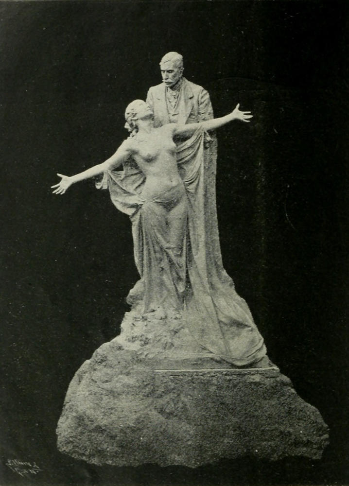
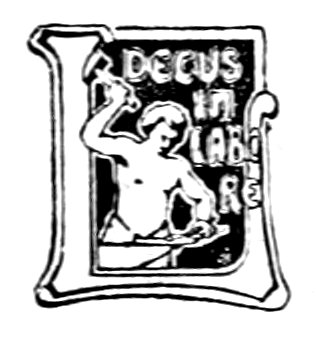

Title: Prosas barbaras
Author: Eça de Queirós
Editor: Jaime Batalha Reis
Release date: September 14, 2022 [eBook #68986]
Language: Portuguese
Original publication: Portugal: Livraria Chardron, 1903
Credits: Rita Farinha, Alberto Manuel Brandão Simões and the Online Distributed Proofreading Team at https://www.pgdp.net (This file was produced from images generously made available by The Internet Archive)
| O crime do padre Amaro. Quarta edição inteiramente refundida, recomposta, e differente na fórma e na acção da edição primitiva. 1 grosso volume | 1$200 |
| Os Maias. Segunda edição. 2 grossos volumes | 2$000 |
| A Cidade e as Serras. | 800 |
| O Mandarim. Quarta edição. 1 volume | 500 |
| O primo Bazilio. Quarta edição. 1 grosso volume | 1$000 |
| A Reliquia. Terceira edição. 1 grosso volume | 1$000 |
| Contos. 1 volume | 600 |
| As minas de Salomão. 1 volume | 600 |
| Correspondencia de Fradique Mendes. 1 volume | 600 |
| Revista de Portugal. 4 grossos volumes | 12$000 |
| A Illustre Casa de Ramires. 1 volume | 1$000 |
No prélo:
Cartas de Inglaterra.
Echos de Paris.
S. Christovam (inedito).

Monumento erigido a Eça de Queiroz
Obra do eminente esculptor Teixeira Lopes
Eça de Queiroz
Com uma Introducção por Jayme Batalha Reis

PORTO
LIVRARIA CHARDRON
Lello & Irmão, editores
1903
Todos os direitos reservados.
Pertence no Brazil o direito de propriedade d'esta obra ao cidadão Francisco Alves, livreiro editor no Rio de Janeiro, que, para a garantia que lhe offerece a lei n.ᵒ 496 de 1 d'Agosto de 1898, fez o competente deposito na Bibliotheca nacional, segundo a determinação do art. 13.ᵒ da mesma Lei.
Porto—Imprensa Moderna.
[v]
Na primeira phase da vida litteraria de Eça de Queiroz.
Julgaram os Editores d'este livro ser necessario explicar como elle se escreveu e se denominou.
Fui talvez a testemunha mais proxima da redacção dos escriptos agora reunidos em volume, e por esse tempo, o amigo mais inseparavel do author. Esta Introducção é pois uma pagina da sua biographia. Tento esboçar n'ella a figura do homem e a do escriptor, taes como as conheci, ao formarem-se as creações d'este livro,—as circumstancias e os espiritos que influenciaram a aliás extraordinaria originalidade do genio d'Eça de Queiroz.
Quando nos encontrámos, já estavam publicados alguns dos seus Folhetins na Gazeta de Portugal, que fôra fundada por Antonio Augusto Teixeira de Vasconcellos (Novembro de 1862), 4 annos antes da apparição do primeiro d'elles e terminou (Janeiro de 1868,) pouco mais d'um anno depois da publicação do ultimo, sendo,—em rivalidade com a Revolução de Setembro, dirigida por Rodrigues Sampaio,—o mais brilhante periodico[vi] do tempo. A Gazeta de Portugal publicava, além das do seu fundador, frequentes producções de Antonio Feliciano de Castilho, José Castilho, Mendes Leal, Rebello da Silva, Camillo Castello Branco, Julio Cesar Machado, Thomaz Ribeiro, Zacharias d'Aça, Graça Barreto, Silveira da Motta, Cunha Rivara,—quasi todos os consagrados de então. Os Novos que ahi escreviam, ficavam, por este facto, para logo consagrados. Ahi primeiro appareceram no folhetim, triumphalmente, Matheus de Magalhães, Pinheiro Chagas, Osorio de Vasconcellos e Xavier da Cunha («Olympio de Freitas.») Todos estes escriptores se continuavam uns aos outros, sem contrastes nem revoluções, apenas levemente desenvolvendo formulas acceites e classificadas pelos applausos d'um publico hereditariamente satisfeito.
Em 1866 a Gazeta de Portugal entrára porém em decadencia; começava a viver de expedientes. Desde Dezembro de 1865 diminuiu o formato. A 14 de Julho de 1866, José da Silva Mendes Leal, poeta, dramaturgo, romancista, historiador, estadista, orador, diplomata,—para muitos, «o mestre», legitimo successor de Almeida Garrett,—despedira-se da direcção litteraria que até então, pelo menos nominalmente, exercera. Os collaboradores litterarios mais assiduos, mais legitimamente representantes do gosto geral, eram já então, no folhetim da Gazeta de Portugal, Santos Nazareth e Luiz Quirino Chaves. Por essa epoca Teixeira de Vasconcellos publicou ahi o seu romance A Ermida de Castromino, seguido, desde os primeiros dias de 1866, por O Diamante do Commendador do visconde Ponson du Terrail...
Repentinamente, (em Março de 1866), começaram a apparecer uns Folhetins assignados «Eça de Queiroz».
[vii]
Ninguem conhecia a pessoa designada por estes appelidos que, por algum tempo, se suppoz serem um pseudonymo.
Os Folhetins de Eça de Queiroz foram todavia notados;—mas como novidade extravagante e burlesca. Geral hilaridade os acolheu desde a Redacção da Gazeta de Portugal, até aos centros intellectuaes reconhecidos do paiz, e até á parte mais grave, culta e influente do publico. Para este, uma ou outra phrase os arrumou logo no que então se chamava «a Escola Coimbran»,—centro litterario e philosophico dedicado, como se suppunha, a escrever por modo systematicamente inintelligivel. Citavam-se, por modelos de comico inconsciente, as scenas, as imagens, os epithetos d'esses Folhetins, lidos em voz alta, entre gargalhadas, no Café Martinho, nas Livrarias Silva e Rodrigues, no Gremio litterario, nos Salões poeticos e politicos e n'outros centros representativos do tempo. O Severo,—o Severo dos Anjos,—principal e celebre Noticiarista da Gazeta de Portugal, entalando o monoculo ao canto do olho direito, inventava quotidianamente, sobre o Eça de Queiroz e os seus Folhetins, epigrammas em geral adoptados; e o Teixeira de Vasconcellos, exagerando, com intenção comica, o seu natural gaguejar, concluia:
—Tem muito talento este rapaz; mas é pena que residisse em Coimbra, que seja inteiramente doido, que haja nos seus Contos, sempre, dois cadaveres amando-se n'um banco do Rocio, e que escre...va...va...va em francez.
Pouco tempo depois de publicado o ultimo d'esses Folhetins,—em Dezembro de 1867,—já ninguem pensava no author d'elles.
Que importava ao Café Martinho, ao Gremio supposto[viii] litterario, e aos circulos politicos, a apparição d'um novo escriptor com um novo estylo? Era ministro... não sei quem; discutia-se no Parlamento... não sei que; os negocios iam andando; os namoricos e a maledicencia seguiam o seu curso; a arte, serena e commedida, não sacudia os que dormitavam... e nada mais era de interesse, em Portugal, para as classes cultas.
[ix]
Eu era, por 1867, estudante em Lisboa e muito novo. Por circumstancias que é inutil mencionar frequentava a Redacção da Gazeta de Portugal, no n.ᵒ 26 da travessa da Parreirinha, perto do Theatro de S. Carlos.
Uma noute, junto da mesa onde escrevia o Severo, vi uma figura muito magra, muito esguia, muito encurvada, de pescoço muito alto, cabeça pequena e aguda. Esta figura mostrava-se inteiramente desenhada a preto intenso e amarello desmaiado:
Cobria-a uma sobrecasaca preta abotoada até á barba, uma gravata alta e preta, umas calças pretas. Tinha as faces lividas e magrissimas, o cabello corredio muito preto, do qual se destacava uma madeixa triangular, ondulante, na testa pallida que parecia estreita, sobre olhos cobertos por lunetas fumadas, de aros muito grossos e muito negros. Um bigode farto, e tambem muito preto, caía aos lados da bocca grande e entreaberta. As mãos longas, de dedos muito finos côr de marfim[x] velho, na extremidade de dois magros e longuissimos braços, faziam gestos desusados com uma badine muito delgada e um chapéo de copa alta e conica, mas de feltro baço, como os chapéos do seculo XVI que se veem nos retratos do Duque d'Alba, de Philippe II de Hespanha, ou de Henrique III de França.
Era o Eça de Queiroz.
Contava o quer que fosse a um tempo tragico e comico, nervosamente, dando a espaços gargalhadas—ricanements, como se diria em francez,—curtas, e sinistras.
O Severo, de monoculo fincado no olho direito, a larga mascara gorda, amarella e ironica, muito dilatada, escutava-o, rindo em notas agudas.
Saí n'essa noute do Escriptorio da Gazeta de Portugal com o Eça de Queiroz, jantámos e passámos a noute juntos, e desde então, por annos, não nos separámos quasi.
O Eça de Queiroz terminára em 1866 o curso de Direito na Universidade de Coimbra, e viera para Lisboa onde seu pae era magistrado. Por tradicções de familia, e como consequencia natural dos seus estudos, deveria seguir, elle tambem, a magistratura official, ou, pelo menos, fazer-se advogado. Supponho que n'este intuito frequentou algum tempo um Escriptorio em Lisboa.
Mas a Arte tomava-o já a esse tempo fundamente, e ia-se-lhe o tempo a ler, a scismar, a idear, a cogitar os aspectos subtis das cousas.
Eça de Queiroz morava em casa da familia, ao Rocio, no 4.ᵒ andar do predio n.ᵒ 26. O seu quarto—pequeno, com uma mesa ao centro e uma estante para poucos livros,—dava para a rua do Principe. Ahi foram, em parte, escriptos os Folhetins das Prosas barbaras.
[xi]
Haviamos-nos creado um mundo como que áparte da realidade:
Quando por algum tempo nos separavamos durante o dia, reuniamos-nos logo, ás horas de jantar, ou depois, n'um qualquer Restaurante pouco frequentado, cerca da rua larga de S. Roque ou do Chiado.
Á sobremeza o café abria-nos as regiões visionarias em que viviamos: O Eça de Queiroz bebia-o com attenção concentrada e reverente, curvado de alto sobre a chavena, para onde cada feição, principalmente o nariz comprido e adunco, como que se prolongava aguçada. A uma primeira chavena seguia-se uma segunda e uma terceira; e iamos para minha casa continuar a beber café, ás vezes até madrugada.
N'estas circumstancias foram escriptos, por Eça de Queiroz, muitos dos Contos agora reunidos em volume.
[xii]
Eu morava no primeiro andar da casa n.ᵒ 19 da então travessa do Guarda-mór,[1] em pleno Bairro alto.
No meu quarto de estudante[2] havia um grande armario cheio de livros, cavado na espessura da parede, uma grande mesa central sobre que se escrevia, e uma secretaria de feitio estranho, dada a meu pae por Almeida Garrett, usada por este para escrever de pé, que suggerio a Eça de Queiroz a fórma da mesa onde, annos depois, em Paris, quasi sempre trabalhava. Uma larga janella de sacada abria para a rua dos Calafates[3] em frente a predios baixos que, por isso, não impediam o accesso do ar, da luz, e a vista d'um espaço aberto que dava uma impressão de villa de provincia. No mais proximo d'esses predios moravam duas raparigas, muito novas e bonitas, a cantar, costurando activamente o dia inteiro, entre craveiros e mangericões, por vezes, para o Eça de Queiroz e outros lyricos phantasistas que me visitavam, pontos de partida de longas variações, em verso e prosa, sobre o Eterno feminino.
Certas noutes, entrava o Eça de Queiroz, já tarde, no meu quarto, com um rolo de papel na mão, dizendo:
—Sou eu, sim, amigo.
E alludindo aos corvos, milhafres, gaviões, que com tanta frequencia, phantasticamente appareciam nos seus Contos, accrescentava:
[xiii]
—Sou eu e os meus abutres: Vimos crear, devorando cadaveres!
Muitas cousas preoccupavam o Eça de Queiroz quando trabalhava:
Durante tempos só poude escrever em certo papel almaço, que elle proprio ia comprar a uma loja pequena de chá e papel selado, no n.ᵒ 41 da rua larga de S. Roque.
Havia de entrar no meu quarto com o pé direito, suspendendo-se por isso, no ultimo momento, recuando o pé esquerdo agourento, quando já este inopportunamente se adiantasse, e fazendo, hesitante e confuso, antes de emfim passar a porta, um ruido inexplicavel.
Tinha o terror das correntes d'ar, e andava continuamente a fechar a janella, ou as portas, a mudar a posição da cadeira onde se sentava, murmurando em voz cava:
—É a pneumonia, a congestão-pulmonar fulminante, a morte, menino!
A luz do candieiro de petroleo, que eu usava, feria-lhe a vista; de modo que, afim de a concentrar sobre o papel em que escrevia, ou sobre o livro em leitura, prolongava, do seu lado, o abat-jour, com longas tiras de papel.
Não podia supportar poeira nas mãos, e levantava-se a miudo da mesa para ir, cuidadosamente,—interrompendo a composição, mas recitando em voz alta as phrases que tinha escripto,—lavar as pontas dos dedos.
Fumava constantemente cigarros, em quanto trabalhava, inclinado sobre o papel que olhava muito de perto.
E, uma vez embebido nas suas creações, não fallava, não escutava, não attendia a cousa alguma,—embrulhando[xiv] o cigarro, indo lavar as mãos ou fechar a porta, passeando pela casa, sempre muito curvo, com passadas altas e largas, fazendo gestos de dialogar com alguem, resfolegando ruidosamente, abrindo muito os olhos, elevando e baixando nervosamente as sobrancelhas, as palpebras, e as rugas horizontaes da testa, onde ondulava, convulsa, a sua madeixa corredia, negra e triangular.
Escrevia com extrema facilidade e, n'esta epoca, emendava muito pouco: As imagens, os epithetos occorriam-lhe abundantes, tumultuosamente, e elle redigia rapido, insensivel a repetição de palavras ou a desequilibrio de periodos, sem exigencias criticas de fórma, acceitando, commovido, o que tão espontaneamente, tão sinceramente lhe occorria.
Quando n'essas noutes, elle me lia alguns dos seus Contos, a figura e a voz completavam-lhe as phantasticas creações:
Erguia-se quasi nos bicos dos pés, de uma magresa esqueletica, livido,—na penumbra das projecções do candieiro,—os olhos esburacados por sombras ao fundo das orbitas, sob as lunetas de aro preto, o pescoço inverosimilmente prolongado, as faces cavadas, o nariz afilado, os braços lineares, interminaveis. Então, com gestos de apparição e espanto, a voz lugubre, sentimental,—emphaticamente pathetica, ou gargalhando sinistramente,—declamava.
Ás vezes, alta noute, quando a excitação do trabalho e do café nos havia quasi allucinado, saíamos pelas ruas desertas do Bairro alto,—ou estendiamos as nossas explorações á Mouraria, á Alfama, em volta da Sé e pelas encostas do Castello de São Jorge, a examinar a physionomia[xv] phantastica, e quasi humana, das casas antigas, algumas ainda então, n'esses bairros, mouriscas ou medievaes.
—Ás casas sem luz,—escreveu Eça de Queiroz,[4]—teem o aspecto calmo e sinistro dos rostos idiotas.
D'uma vez, quasi de madrugada, seguindo a rua de São Boaventura, divisámos ao longe, no Pateo do Conde de Soure, uma fila de homens agigantados, segurando como que longas e grossas lanças, cujos ferros se perdiam talvez na atmosphera mal alumiada e cujos coutos se esfumavam na massa confusa do que parecia ser nuvens rasteiras... Estes homens eram para nós apenas esboçados por grandes massas de sombra e luz... D'alguns saíam barbas hirsutas... Estavam immoveis... Tivemos a impressão d'um quadro sobrenatural... Aproximámos-nos... Eram varredores municipaes que esperavam, encostados ás vassouras, a hora de se dispersarem pela cidade.
Nas noutes mais serenas,—nas noutes de luar,—saíamos da cidade e íamos pelos campos e pelos montes, ou ao longo das margens do Tejo, conversando, improvisando, até nascer o Sol.
De ordinario, nas noutes de composição e conversa, ou em seguida ás nossas divagações peripateticas, o Eça de Queiroz dormia em minha casa. E havia, para elle, ritos determinados no modo de dispôr a roupa que despia, antes de se deitar, collocando os punhos sobre uma mesa pela ordem por que os tinha usado, no braço direito e esquerdo, respectivamente, e dispondo as botas á[xvi] porta,—para que o meu creado as limpasse, sem nos acordar,—tambem, pelo mesmo methodo, ordenadamente emparelhadas.
E ao metter-se na cama, para explicar os seus movimentos supersticiosos, murmurava persignando-se:
—É preciso obedecer com fé e sem exame ás leis subtis das cousas: Ninguem sabe exactamente, menino, de que possa depender o curso dos acontecimentos, e o mysterio complicado dos Fados.
Na epoca em que se publicaram os Folhetins da Gazeta de Portugal, eram poucos os amigos que frequentavam a minha casa. O mais assiduo era, por esse tempo,—além do Eça de Queiroz, o Salomão Saragga que, quando apparecia, se occupava toda a noute em explicar-nos, simultaneamente, a construcção de carruagens, a fabricação de tecidos com desperdicios de lan, o livro do Propheta Isaias, e os Historiadores das origens do Christianismo.
De tempos a tempos, o Eça de Queiroz dizia-me:
—Estamos-nos tornando impressos. Basta de lêr e imaginar. Precisamos d'um banho de vida pratica. É-nos indispensavel o acto humano,—inverosimil, se fôr possivel tanto,—a aventura, a lenda em acção, o heroe palpavel: Vamos pois cear com o capitão João de Sá,—o João de Sá Nogueira,—d'Artagnan d'Africa em disponibilidade.
E iamos, com effeito, encontrar este nosso amigo, official do Ultramar, que á ceia nos contava,—durante o bacalhau com batatas, o meio biffe, e o Collares,—as pitorescas façanhas das suas viagens nos sertões.
[xvii]
Havendo eu pertencido á primeira geração affectada pelos escriptos de Eça de Queiroz, as recordações do meu sentir de então teem talvez valor historico.
O anno de 1867 é uma das datas capitaes na historia da educação do meu espirito. A predominante paixão pela musica ligára-me a Augusto Machado, que estudava então piano e harmonia com dois dos melhores mestres da especialidade em Lisboa.
N'esta cidade floresciam, por esse tempo, o Pot-pourri e as Variações. A sensibilidade publica alimentava-se d'um sem numero de Rêveries. O gráo supremo do pathetico geralmente conhecido ao piano, attingia-se com os Nocturnos de Ravina e Döhler. Os arranjos operaticos de Thalberg e Liszt eram o ideal raras vezes realisado.
Ora em 1867 Augusto Machado, ao voltar de Paris, onde cursára piano, harmonia e composição com Alberto de Lavignac, trazia, como repertorio de estudo, os Preludios e Fugas de Bach, as Sonatas de Mozart e Beethoven, as obras de Mendelssohn, Schumann e Chopin.
[xviii]
Os Folhetins de Eça de Queiroz fizeram-me uma impressão só comparavel, em profundidade e consequencias subjectivas, á que, justamente pela mesma epoca, me fazia a descoberta das obras dos grandes creadores da musica moderna.
Esses Folhetins pareceram-me uma grande novidade,—não tanto nos assumptos e na intenção, como no poder de realisação artistica: Emfim encontravam fórmas intensas de expressão, factos, antes, na Litteratura portugueza, insufficientissimamente revelados.
Pelos pontos de vista, pelo estylo, esses Folhetins eram, ainda no anno de 1866, uma quasi inteira novidade para os Leitores da lingua portugueza;—como haviam sido, para todo o sul da Europa, á apparição do Romantismo francez nos primeiros annos do seculo XIX, as mesmas ideias e estylos semelhantes.
N'esses primeiros escriptos Eça de Queiroz era, na verdade, o que geralmente se denomina um Romantico. Elle proprio dizia da epoca immediatamente anterior:
«N'aquelles tempos o Romantismo estava nas nossas almas. Faziamos devotamente oração diante do busto de Shakespeare.»[5]
E, então mesmo, achava ser preferivel, «á saude vulgar e inutil que se gosa no clima tepido que habitam Racine e Scribe... a doença magnifica» que leva ao «hospital romantico...»[6]
Com effeito, por uns dois seculos, pareceu gosar-se, nas regiões mais evidentes da Litteratura, uma inalteravel[xix] saude: Só certos factos do espirito perfeitamente determinados,—só as ideias e os sentimentos susceptiveis de clara determinação,—eram n'essa Litteratura expressos. Os meios de expressão uzados, os vocabulos e os seus grupamentos, os generos litterarios,—tudo parecia claramente, definitivamente assente, segundo normas antigas e, por isso, venerandas, n'um systema de symetria, de equilibrio, de ordem, applicavel sem hesitações, com o minimo esforço, na mais segura tranquillidade. Assim viveu na Europa, em geral, a gente culta, do seculo XVI ao seculo XVIII.
Começaram pelos meados d'este, a mostrar-se nos espiritos signaes inquietadores: Além das ideias completamente comprehensiveis e dos sentimentos inteiramente claros, outras ideias e outros sentimentos se impozeram á expressão dos Litteratos. Entre as grandes fórmas dos affectos, como entre as côres mais vivas, distinguiram-se transições e meias tintas: Os homens não pareceram estar sempre, ou exhuberantemente alegres, ou definitivamente tristes. Havia commoções de sentimentos entremediarios ao amor e ao odio. Entre o preto e o branco descobriram-se gradações infinitas.
Cada ideia classificada, cada sentimento catalogado antes, começou então, pouco a pouco, a mostrar-se o centro de grandes grupos psychologicos, de factos espirituaes diversamente complexos, susceptiveis de definição variavel, de claresa decrescente: uns que podiam ser nitidamente,—como que linearmente,—desenhados, inteiramente descriptos, completamente illuminados; outros que só podiam indeterminadamente suggerir-se, summariamente indicar-se por vagas massas de côr, de sombra e de luz; uns que são as ideias e os sentimentos que todos[xx] os homens conscientemente reconhecem como a materia superficial da existencia; outros mais ou menos inconscientemente dominantes, sem nome ou descripção que os esgote, prolongando-se pelas profundidades insondaveis e inexpressiveis das almas.
Do conhecimento d'estes estados mais subtis e ráros do espirito, resultou, inevitavelmente, a sua cultura; os systemas nervosos pareceram desenvolver-se em sentidos anormaes: e imprevistas, ou mais conscientes vibrações vieram impôr-se, crear ou tornar mais complexas as nevroses.
Novas fórmas de expressão foram necessarias, não só para os novos estados da consciencia, mas porque cada espirito começou a sentir e a pensar independentemente, reconhecendo dever procurar por si,—por isso quanto possivel fóra de formulas e regras já feitas, os termos que mais exactamente lhe symbolisassem as concepções pessoaes.
Toda esta revelação espiritual,—toda esta descoberta de regiões ignoradas ou indolentes dos espiritos, toda esta apparição de aspirações, de incertezas, de incoherencias novas, toda esta quebra de moldes, todo este desequilibrar de forças e symetrias,—pareceu ser, ás gentes cultas, serenas e classicamente imitativas, uma grande doença mental, ou variadas doenças nervosas que atacassem a humanidade.
A este estado dos espiritos e da Litteratura deu-se, como é sabido, o nome de Romantismo,—facto esthetico, ainda hoje em busca de sufficiente definição, mas que, pelo que deixo explicado, me parece poder essencialmente definir-se, como a procura directa de fórmas de expressão, para todos os sentimentos e todas as ideias, por isso,[xxi] para as mais intimas ideias e os mais vagos sentimentos do espirito humano.
Muitos pretendem que essa doença moral foi apenas, nos fins do seculo XVIII, a reincidencia da epidemia que devastára a Europa durante o periodo secular desdenhosamente denominado, por os saudaveis neo-greco-romanos, como a «Edade Media», escura, de transição, que em Historia ha a considerar entre os dois periodos classicos de equilibrio e saude normal.
O Romantismo pareceu ser, geralmente, a resurreição idealisada d'essa «Edade media».
É que, durante esta, gradualmente se formaram as nações modernas da Europa na sua intima complexidade sentimental. N'ellas as forças humanas,—com o integral resultado de forças naturaes que são,—deram fórma aos mais intimos sentimentos do espirito. Os povos haviam vivido tradiccionalmente mergulhados nas creações completas da sua arte e da sua religião; haviam amado, adorado, temido, trabalhado, luctado, cantado, dançado, cercados por todas as vibrações inconscientes da sua phantasia; haviam formado com a interpretação dos aspectos naturaes, com os genios e as fadas de mil religiões evolutivas, os novos santos christãos e milagrosos; haviam sentido em cada ser, organico ou mineral, real ou phantasiado, propicio ou hostil, influencia humana, e haviam-se supposto indissoluvelmente solidarios com uma natureza sempre animada, por onde os proprios cadaveres se dispersavam em pulverisações de espiritos e actividades.
Estas manifestações da vida espontanea dos povos durante a Edade Media, sem duvida solicitaram a interpretação dos Romanticos, cuja rasão de ser, cuja missão[xxii] era tambem, como já mostrei, expressar completamente, até aos mais profundos e subtis, todos os factos do espirito.
Mas o chamado Romantismo deu-se na Europa dos fins do seculo XVIII aos annos de 1830 ou 1850, modificando durante esse tempo a Litteratura do remoto Portugal. Que novidades podia pois ainda apresentar o romantico Eça de Queiroz aos Romanticos portuguezes de 1866?
É o que vou explicar:
O Romantismo tomou, primeiro, corpo saliente, ao norte da Europa, e só depois se estendeu ao sul. Veio dos paizes de luz attenuada e nevoas visionarias, indeterminadoras de fórmas e de côres, para as terras de sol brilhante, atmosphera limpida, fórmas vincadas e côres elementares.[7]
N'esta descida atravez das latitudes as ideias fôram ganhando nitidez, definição, brilho,—e correlativamente perdendo meias tintas, claro escuro, indeterminação. Os sentimentos, transportados com simplificações lucidas á superficie dos espiritos, pelos artistas das terras do sul, perderam muitos dos nimbos esfumados, muitas das atmospheras de attenuada illuminação, que os rodeiam nas regiões profundas onde elles nascem completos. Emquanto o norte expressava tudo o que nas ideias é quasi apenas suggerivel, o sul tão sómente aproveitou o que póde nitidamente descrever-se. Os Romanticos das raças[xxiii] do sul da Europa começaram a fazer assim, mais uma vez, por uma fatalidade atavica e climaterica, o que os antepassados cultos de muitos d'elles completamente consumaram, muitos seculos antes, na construcção equilibrada e nitida do Classicismo greco-romano, resultado da atrofia esthetica e religiosa de exhuberantes regiões da alma humana, pela reducção das mysteriosas formações mysticas do Oriente, da Hellade e da Italia, aos moldes rethoricos, ás esculpturas luminosas mas frias, e ás biografias anecdoticas dos polytheismos heroicos.
Eis porque tantos romanticos portuguezes,—no extremo dos paizes claros do meio dia,[8] só fôram superficialmente romanticos.
Nas partes mais profundas, mais obscuras, mais indeterminaveis do espirito, para além do real, do logico, do coherente, do explicavel,—como que para preencher as lacunas deixadas no completo da totalidade psychica, pelas definições fragmentarias do comprehensivel,—existem com effeito, infinitamente, as necessidades mysteriosas do contradictorio, do sobrenatural, do maravilhoso.
É para as satisfazer que todos os povos criam, fatalmente, fórmas estheticas e religiosas especiaes, e é d'ellas que todo o homem completo se sente, por vezes, essencialmente possesso.
Essas fórmas constituem a Arte e a Litteratura mystica e phantastica.
[xxiv]
A França,—a mais norte das Nações definidoras,—recebeu, em grande parte, a sua Litteratura phantastica da Allemanha. Da Allemanha, por intervenção da França, a recebeu Portugal. Teve ella, de 1866 a 1867, em Eça de Queiroz, o seu mais genial representante portuguez.
E porque essa Litteratura me punha em vibração tantas faculdades intimas e latentes, me commoveu ella,—a mim e a outros espiritos contemporaneos da minha primeira mocidade, talvez por educação, e quem sabe se por atavismo, não inteiramente, ou não exclusivamente filhos das raças e dos climas claros e definidores do sul.
[xxv]
Assim as primeiras influencias que actuaram em Eça de Queiroz,—aquellas que mais evidentemente se reconhecem nas suas primeiras creações litterarias, os escriptores de cuja frequencia eu posso dar testemunho,—fôram, principalmente, Henrique Heine, Gerardo de Nerval, Julio Michelet, Carlos Baudelaire; mais distantemente, mais em segunda mão, Shakespeare, Goethe, Hoffmann, Arnim, Poe; e, envolvendo tudo poderosamente, Victor Hugo.
A maior influencia n'esse periodo sobre Eça de Queiroz,—a de Heine,—foi tambem consideravel sobre alguns dos seus mais illustres contemporaneos e amigos: Vê-se nas poesias, mais tarde reunidas por Anthero de Quental sob o nome de Primaveras romanticas, e no que este diz de si nas paginas autobiographicas que estão publicadas;[9] vê-se tambem nas poesias primeiro[xxvi] escriptas para o Seculo XIX de Penafiel, de 1864 a 1865, e depois colligidas, com o titulo de Lyra meridional, por Antonio de Azevedo Castello Branco.
Eça de Queiroz não sabia allemão. As obras de Heine adquirem nas traducções francezas,—algumas feitas pelo proprio author, outras por este em collaboração com Gerardo de Nerval,—um caracter novo.
Heine é para mim,—e não é para todos ainda hoje, mesmo na Allemanha,—um dos maiores escriptores das linguas germanicas. Traduzil-o é, sem duvida, empobrecel-o: foi elle quem disse que «um verso traduzido é um raio de lua... empalhado». Mas as qualidades musicaes de som e rhythmo que as suas obras perdem, ao passar para o francez, são substituidas por outras: a singeleza pathetica como que se torna mais dolorosa á claridade nitida da nova lingua; o humorismo, a um tempo ironico e ingenuo, como que se faz mais subtil nas fórmas do espirito latino; os versos, passados a prosa de rhythmos incertos, como que adquirem uma indeterminação, um vago, que faz lembrar versiculos biblicos.
Recordo-me da impressão nova que me fizeram as poesias de Heine,—que eu decorára no Collegio allemão, onde fui educado,—quando Eça de Queiroz m'as fez conhecer em francez; e d'uma noute em que elle me declamou emphaticamente, quasi com lagrimas, as paginas dos Reisebilder onde Heine,—a quem a musica sempre suggeria fórmas e côres definidas,—conta as transformações phantasticas porque a seus olhos passára, n'um concerto, Paganini, tornado, pela evocação da sobrenatural rabeca, em galan cortejante do seculo XVIII, assassino por ciumes, forçado, monge solitario junto ao mar e sob as abobadas de cathedraes, genio planeta entre[xxvii] as harmonias apotheoticas das espheras, ou figura humilde e grutesca, agradecendo os applausos dos auditorios.
Em muitas paginas das Prosas barbaras se encontra a influencia d'esta lenda phantastica de Paganini.
O conto a Ladainha da dôr, que tem o proprio Paganini por assumpto,[10] é directamente inspirado por Heine e por Berlioz.[11] As Notas marginaes[12] parecem estancias do Intermezzo ou do Livro de Lazaro.
Gerardo de Nerval foi, como se sabe, um dos iniciadores directos da França no Romantismo germanico. Foi elle o primeiro traductor francez do Fausto de Goethe, e, como já disse, o collaborador, com Heine, na traducção d'algumas das obras d'este ultimo.
É evidente, nas paginas das Prosas barbaras, a influencia dos proprios escriptos originaes de Gerardo de Nerval, principalmente a dos mysteriosos e phantasticos sonetos que começam:
Je suis le ténébreux, le veuf, l'inconsolé,
Le Prince d'Aquitaine à la tour abolie...
Ma seule étoile est morte, et mon Luth constellé
Porte le soleil noir de la mélancolie!...[13]
[xxviii]
Julio Michelet, pela originalidade, pelo poder evocador do seu estylo, pelo dom de crear vida intima e phantastica, pela resurreição mythographica e profunda,—sobretudo nos 8 primeiros volumes da sua Historia de França,—da Edade media, da Renascença e da Reforma,—e, na Sorcière, pela materialisação sentimental e explicação, a um tempo natural e visionaria, da vasta Historia do Diabo,—foi um dos paes artisticos do primeiro Eça de Queiroz.
H. Heine,—allemão que aliaz alguns criticos chegam a considerar um espirito francez,—Gerardo de Nerval e Julio Michelet representam, em França, profundas influencias allemãs. Foi na fórma vaga, intima e completa das suas obras, que o Romantismo phantastico principalmente impressionou a Eça de Queiroz.
Por toda a parte, nos escriptos das Prosas barbaras, se encontram os mythos, as côres e fórmas do maravilhoso popular germanico, os aspectos evocadores da natureza allemã, as personalidades da Historia do Norte da Europa localisando, a cada passo, as historias do romantico portuguez: São as Nixes, as Wilis, os Elfos, as Ondinas, «as velhas mythologias do Rheno», «as Monjas dos Conventos da Allemanha a quem o diabo escreve», «o abbade de Helenbach», «as abbadessas de Vecker a quem o diabo faz sonetos», «as mães melodramaticas dos Burgraves», «os Pastores de Helyberg», «o abbade de Tritheim vendendo a alma pelo segredo da circulação do sangue»,—que passam de continuo nas narrações; e «as encruzilhadas da Allemanha», «as encruzilhadas da floresta negra», «as florestas da Thuringia», «os prados hircinios», as alturas do Borxberg, onde a 30 de Abril se encanta a assembleia de Walpurgis, as cathedraes da[xxix] Allemanha, o Rheno, o Mar do Norte, «a Allemanha onde nasce a flôr do Absyntho», onde se ouvem as velhas baladas da Thuringia e a guitarra de Inspruck, onde «a poesia popular foi a Invisivel que levou pela mão os trovadores... ás lareiras dos senhorios feudaes...», «ás brancas castellans onde vão os Minnesingers errantes», onde se celebram as «kermesses de Leipzig» e se bebe «a cerveja de Heidelberg», onde Alberto Dürer desenhou a sua Melancolia, onde correm as caçadas phantasticas do Freischütz e passam os Imperadores do Santo Imperio, Fausto, Mephistopheles, Margarida, Luthero... Spohr Weber...
O conhecimento directo das poesias de Carlos Baudelaire e a sua influencia consideravel em Eça de Queiroz,[14] só se deu d'uma maneira importante, depois da dos authores que acabo de mencionar. A edição em volume das Flores do Mal só tarde lhe chegou ás mãos. Recordo-me, na falta d'ella, de passarmos muitas noutes na Bibliotheca do Gremio litterario, procurando, em collecções antigas de Revistas francezas, as poesias que Baudelaire ahi havia pela primeira vez publicado.
Carlos Baudelaire é um espirito essencialmente francez. Frio, impassivel, correcto de maneiras e toilettes, sempre preoccupado com a realisação duma certa symetria de fórma, o mysterio, o phantastico é, por elle, intellectualmente sentido. Penetrou, sem duvida, em profundas, tenebrosas e inexploradas regiões do espirito; mas para principalmente revelar o que n'ellas é capaz de expressão lucidamente estranha. N'elle o delirio é[xxx] sempre critico, a nevrose intensa, mas methodisada. Cria na arte o frisson nouveau que Victor Hugo celebra, mas compõe-n'o rigorosamente segundo as melhores fórmas da sabia lingua franceza, com syntaxe directa e rimas ricas, pé a pé, vibração a vibração.[15]
São, porém, estas qualidades especiaes que tornam mais tarde decisiva a influencia de Carlos Baudelaire sobre Eça de Queiroz, no periodo de transição, quando, gradualmente impressionado pelo Realismo e por Gustavo Flaubert, elle justamente denominou a presente collecção de escriptos.
Exerceu-se no mesmo sentido a influencia das obras de Edgar Allan Poe, que Eça de Queiroz,—ainda então ignorante de inglez,—só conheceu pelas traducções francezas de Baudelaire. A nitidez fria com que o espirito americano determinou o nevrosismo das Historias extraordinarias, accentua-se ainda mais,—privado, em todo o caso, da indeterminação litteraria e fluctuante da lingua ingleza,—nas fórmas logicas e lapidares d'um dos mais claros escriptores da França.
Indico apenas, como já disse, as influencias dominantes; mas o trato intimo com quasi todos os grandes romanticos francezes,—Musset, Gautier, Mallefille,—é sensivel n'este primeiro periodo da vida litteraria de Eça de Queiroz.
As influencias portuguezas importantes que pódem distinguir-se são pouco numerosas e superficiaes:—quasi[xxxi] sómente as da poesia popular,[16] e as de alguns seus companheiros de Coimbra,—João de Deus, Anthero de Quental. Foi aliás o conto de Eça de Queiroz, o Milhafre[17] que suggerio a Anthero de Quental uma das suas poesias.[18]
Na fórma litteraria, a acção reconhecivel em Eça de Queiroz é a da lingua franceza: Foi por meio de muitas das fórmas da syntaxe d'esta, e quasi se póde dizer, do seu vocabulario, que elle modelou uma como que nova lingua portuguesa.
Mas esta Introducção ás Prosas barbaras tem por fim explical-as; não critical-as: Não lhe cumpre por isso mostrar que differenças profundas ha, entre o phantastico allemão e o phantastico do Escriptor portuguez, entre a ironia subtil de Heine e a ironia poderosa de Eça de Queiroz, entre a phantasia ingenua e vaga dos homens do norte e a imaginação eloquente, exhuberante, e imprevista do creador meridional; não tem emfim que provar como todas as influencias notadas se sentem apenas á superficie da obra do grande artista eminentemente original, que escreveu, na sua primeira mocidade, as extraordinarias paginas reunidas n'este livro.
[xxxii]
Na intenção d'Eça de Queiroz os Folhetins da Gazeta de Portugal,—apesar da sua desconnexão episodica,—formavam serie, obedeciam a um pensamento, constituiam um corpo, uma obra systematica, cujos capitulos, separados por lacunas que nunca fôram preenchidas, pódem, chronologicamente, reunir-se nos seguintes dois grupos:
A
| Symphonia de abertura[19] | 1866 | Outubro | 7 |
| Macbeth | » | » | 14 |
| Poetas do Mal[19] | » | » | 21 |
| A Ladainha da dôr | » | » | 28 |
| Os mortos | » | Novembro | 4 |
| As Miserias: I Entre a Neve | » | » | 13 |
| Farças[19] | » | » | 18 |
| Ao Acaso[20] | » | » | 27 |
| O Miautonomah | » | Dezembro | 2 |
| Mysticismo humoristico | » | » | 23 |
[xxxiii]
B
| O Milhafre[22] | 1867 | Outubro | 6 |
| Lisboa[23] | » | » | 13 |
| O Senhor Diabo[24] | » | » | 20 |
| Uma carta (a Carlos Mayer) | » | Novembro | 3 |
| Da Pintura em Portugal[21] | » | » | 10 |
| O Lume | » | » | 17 |
| Mephistopheles (J. Petit)[25] | » | Dezembro | 1 |
| Omphalia Benoiton[21] | » | » | 15 |
| Memorias d'uma forca | » | » | 22 |
O primeiro Folhetim em data,—março de 1866,—as Notas marginaes,—tendo por epigraphe as phrases interrompidas d'uma trova á Bernardim Ribeiro, e influenciado, como já mostrei, pela traducção franceza das Poesias de Heine, foi inserido, na Gazeta de Portugal, fóra do seu logar.
Porque os Folhetins teem uma introducção formal,—uma Symphonia d'abertura, que se publica a 7 de outubro de 1866,—e continuam, quasi sem interrupção, semanalmente, aos domingos, até 23 de Dezembro do mesmo[xxxiv] anno. Uma longa ausencia de Lisboa interrompe a publicação: Dos primeiros dias de Janeiro a 1 de Agosto de 1867 Eça de Queiroz reside no Alemtejo, onde funda e redige o Districto d'Evora, periodico politico, litterario e noticioso. Os folhetins da Gazeta de Portugal recomeçam no dia 6 de Outubro, e proseguem até 22 de Dezembro do mesmo anno de 1867.
A Symphonia de abertura[26] prepara, com efeito, o espirito para a ideia que os differentes trechos depois vão desenvolvendo. N'elles a phantasia,—livremente, irregularmente, fragmentariamente,—esboça, suggere, deixa entrever, faz sentir essa ideia, em episodios, em allegorias phantasticas e como que musicalmente vagas:
Trata-se, na «Symphonia de abertura», das viagens dos Deuses, «desde os templos de Ellora,—onde elles andavam ferozes por entre os Elephantes,—até á cruz de Jesus, onde um rouxinol veio pousar cantando d'amor»... «desde a materia negra e informe, até ás serenidades vivas para além das nuvens, das estrellas e dos caminhos lacteos».
N'estas viagens ideaes os Deuses teem uma companheira que intimamente estabelece a sua communicação com os homens,—a Arte.
Da historia visionaria d'esta,—na longa peregrinação divina,—a Symphonia de abertura, faz-nos ouvir,—adagio ou vivace, piano ou forte,—alguns trechos maravilhosamente instrumentados:...
«Quando» os povos—na Chaldea, no Egypto, na Grecia,—«plantavam tendas debaixo das estrellas», ... e, mais tarde, em céos de profundo mysticismo christão, nas[xxxv] regiões transcendentes «onde as proprias estrellas são» apenas, «gotas de sombra...»[27]
Entreveem-se, fluctuando em imagens, as differentes Artes:
A Architectura «que se abriu em transparencias e transfigurações, como se quizesse ser, no espaço, a morada suspensa do espirito».
A Musica emfim «liberta dos contornos, dos coloridos, e das gravidades, dissipando-se nos amollecimentos divinos...»
«...no terror da natureza, onde o diabo era visivel... a alma allemã tinha toda a sorte de penumbras, de desfalecimentos, de pallidos silencios que se exhalavam divinamente no canto...»
Esvae-se «aquella melopea grega esfarrapada pela aspereza do latim dos versiculos...»
«Apparece Luthero», a alma allemã... que desfalecia n'aquellas melancolias immensas que Alberto Dürer revelou...»
Mas «a Musica, que é a alma, o espiritualismo, o vapor da Arte, sumiu-se com a approximação da Renascença que vinha cheia das rebeliões da carne...»
Até que outra vez «se produziu, na nossa epoca, como a Grecia produziu a Esculptura, como a Europa gothica produziu a Architectura...»
Chega-se assim aos tempos modernos:
«A alma começou a entrever cimos luminosos, por entre os astros, que se chamavam Homero, Eschylo, Dante, Miguel Angelo, Rabelais, Cervantes e Shakespeare.[xxxvi] A alma queria subir aquelles escarpamentos divinos para colher a flôr do ideal.»[28]
A melancolia dá côr ao Romantismo...
«O typo em quem se resumem todos os soffrimentos, todas as desesperanças, as melancolias, as incertezas, as aspirações, os lyrismos d'esta epoca pallida e doentia: Fausto, Manfredo, Lara, Antony, Werther, Rolla, D. Juan...» que saem então de «toda uma mocidade pallida e nervosa, de «toda uma primavera...»
«O indefinido da alma de D. Juan revelado pela Arte,—eis ahi a Musica...», «aquella vaga Ophelia que se chama Musica...», «uma voz inesperada em que se entendem os desconsolados...»[29]
Constitue-se emfim a Musica moderna:
«A Allemanha... a loura Allemanha de ideal seriedade, luminosa, um tanto nuvem, cheia de vapores e de constellações... A Allemanha que pensa com um doce ruido ineffavel», fórma a sua «Musica que é o vapor da Arte...»
E, ao lado d'ella, «a Musica italiana... tendo o quer que seja do palpavel... d'ondeante como seda invisivel».
Tal é, muito vagamente, a significação sentimental da Symphonia de abertura.
Os escriptos colligidos n'este volume são assim, em prosa, os Cantos fragmentarios d'um immenso Poema:
O Universo é um infinito de almas. As cousas teem[xxxvii] sentimentos humanos que se disseminam, sem se alterarem, com a pulverisação de todas as mortes. Os que morrem vão diffundir-se nas cousas, sem nas decomposições aniquilarem a personalidade, passando por fórmas inferiores no homem, e por fórmas purificadas na natureza. Na alma é que se concebe, cria, o mal: o corpo, a materia, essencialmente inalteravel, volta sempre á pureza natural. Dos successivos ideaes, e das successivas e profundas commoções, o homem gera, para todo o sempre, Deuses que o dominam, que vivem d'uma vida sentimental e independente, mas que fogem, uns ante os outros, para desvairados destinos, que se asylam, errantes, em todos os grandes centros de vida mysteriosa da creação, que se fazem seducção sob a fórma ainda angelica e já ironica do diabo, que se dispersam na natureza transformadora.
Com este vago thema geral, o Poema em prosa d'Eça de Queiroz propunha-se a ser a expressão das mais profundas regiões do sonho, da visão, do indeterminavel, do substracto phantastico que se encontra sob a realidade evidente, queria tornar sonoras as capacidades de vibração musical que fórmam a intimidade de todos os seres,—todas as vibrações impossiveis de completamente reduzir aos sons calculados d'uma escala musical;—era a phantasia tocando, um momento apenas, o mundo da realidade, para logo se afastar d'elle, voando, exilada pela incomprehensão, pela insensibilidade, pela determinação nitida e clara das forças sensatas do espirito. E assim, após os bellos Deuses de marmore, que se escondem fugitivos nas florestas ainda cheias dos symbolos de religiões anteriores, os anjos sublimados ou reprobos do christianismo,—a propria ironia espiritualista de Satanaz, a propria pallida e doce figura de Jesus,—vão egualmente perder-se e ser[xxxviii] esquecidas: Morreu a phantasia. São futeis todas as illusões. Reina o calculo demonstravel.[30]
Heine tambem já contára o exilio dos antigos Deuses,[31] e Michelet[32] recorda o brado, «Le Grand Pan est mort!»[33] que se ouviu pelo mundo ao apparecer de novas crenças.
O que caracterisa este momento da vida litteraria d'Eça de Queiroz é a sincera commoção do crear phantastico, sem excluir, já então, a ironia,—que mais tarde é o principal instrumento de trabalho do seu espirito,—fornecedora de tão delicadas velaturas, ou de toques tão vivos e reaes a todas as suas obras. Consegue assim crear um mundo imaginario, um scenario de allegorias; sabe que esse mundo é illusorio, que só parece povoado por metaphoras,—e enternece-se, e commove-se, e communica essa ternura e essa commoção como se as produzissem realidades, sentindo e fazendo sentir, ao mesmo tempo, inexplicavelmente, que com effeito exista uma profunda realidade, vagamente symbolisada por todas essas imagens.[34]
[xxxix]
Como quer que episodicamente falle de assumptos inteiramente reaes,—da America do Norte, de Lisboa, da vida de estudante em Coimbra,—é sempre o mesmo substracto visionario da realidade para que o seu espirito procura expressão.
Esta situação especial do espirito de muitos artistas não foi ainda, parece-me, sufficientemente estudada pela critica e pela philosophia da arte.
[xl]
Eça de Queiroz tinha, por essa epoca, a mesma exhuberancia e originalidade de phantasia em verso: porque sentia muitas vezes a necessidade de metrificar,—quasi que o mesmo genero de necessidade de som e rythmo que o fazia com frequencia cantarolar, em voz baixa, pequenas phrases musicaes, quasi sempre erradas, mas sempre impregnadas das mais patheticas inflexões.
Os versos que compunha tinham um enorme relevo pela originalidade da concepção e das imagens, e conservavam ainda a fluencia romantica, apaixonada, phantastica, dos primeiros escriptos, quando já elle a havia quasi inteiramente eliminado da sua prosa realista. Mas teve sempre grande difficuldade em comprehender e sentir os processos technicos da metrificação.
São exactamente do periodo dos escriptos colligidos no presente volume as linhas seguintes que deviam, na intenção do author, ser versos alexandrinos:[35]
[xli]
Oh Satan tenebroso, tragico fulminado,
Tu vencerás em mim o intimo Deus bom
Não com as armas biblicas com que bateste os astros,
Mas vindo unicamente vestido á Benoiton.
Mas é de pouco depois a seguinte admiravel poesia, mais tarde publicada com a assignatura de C. Fradique Mendes:[36]
Serenata de Satan ás estrellas
Nas noites triviaes e desoladas,
Como vos quero, mysticas estrellas!...
Lucidas, antigas camaradas...
Gotas de luz no frio ar nevadas,
Podesse a minha boca inda bebel-as!
Não vos conheço já. Por onde eu ando!...
Sois vós, mysticos pregos d'uma cruz,
Que Christo estaes no Céo crucificando?
Quem triste pelo ar vos foi soltando
Profundos, soluçantes ais de luz!
Oh viagem nas nuvens desmanchadas!
Doces serões do Céo entre as estrellas!
Hoje só ais, ou lagrimas caladas...
Ai! sementes de luz mal semeadas,
Ave do Céo, podesse eu ir comel-as!
[xlii]
Triste, triste loucura, oh flor's da cruz,
Quando vos eu dizia soluçando:
—Afastai-vos de mim cardos de luz!—
Podesse eu ter agora os pés bem nus,
Inda por entre vós i-los rasgando!
Hoje estou velho, e só, e corcovado;
Causa-me espanto a sombra d'uma estola;
Enche-me o peito um tedio desolado:
E corro o mundo todo, esfomeado,
Aos abutres do Céo pedindo esmola.
Eu sou Satan o triste, o derrubado!
Mas vós estrellas sois o musgo velho
Das paredes do Céo deshabitado,
E a poeira que se ergue ao ar calado,
Quando eu bato com o pé no Evangelho!
O Céo é Cemiterio trivial:
Vós sois o pó dos deuses sepultados!
Deuses, magros esboços do ideal!
Só com rasgar-se a folha d'um missal,
Vós cahis mortos, hirtos, gangrenados.
Eu sou expulso, roto, escarnecido;
Mas a vós já ninguem vos quer as leis
Oh! velho Deus, oh! Christo dolorido!
Lembrae-vos que sois pó enegrecido
E cedo em negro pó vos tornareis.[37]
Dois episodios mostrarão o seu então quasi permanente desejo de improvisação poetica:
Uma noute, no verão de 1867 ou 1868, depois de[xliii] cear, o Eça de Queiroz, o Salomão Saragga e eu, fômos de passeio, conversando, até Belem.
A noute estava muito quente. Havia uma grande claridade de lua cheia.
Seriam umas duas horas da madrugada quando chegámos á praia da Torre.
Quasi varado na areia, havia um barco. Mettemos-nos dentro. A maré enchente fez-nos fluctuar.
Ahi continuámos a nossa conversação até que o dia appareceu e o sol se levantou por detraz da casaria e dos altos de Lisboa.
Desembarcámos então e dirigimos-nos para Belem, com fome, em busca d'uma Taberna ou Restaurante. Queriamos almoçar alli mesmo, continuando, á beira do rio, a nossa discussão. Mas conheciamos os nossos tres apetites, e verificámos, reunindo todo o dinheiro, que elle apenas pagaria um insufficiente repasto.
Que fazer?
—Tenho uma ideia, disse o Eça de Queiroz,—fazendo o gesto consagrado de bater na testa.—Tenho uma ideia genial,—accrescentou, erguendo tremulamente os braços ao Céo:—Sigam-me.
E negro, esguio, curvo, agitando a badine na mão como se esgrimisse, com passos largos e rythmicos, que pareciam saltar obstaculos invisiveis, a sombra da figura esguia e immensa, projectada pelos raios horizontaes do sol nascente, Eça de Queiroz adiantou-se em direcção á calçada que leva de Belem á Ajuda.
Salomão Saragga e eu iamos atraz, famelicos, murmurando.
Seriam quasi 5 horas da manhã.
Junto da Egreja da Memoria o Eça de Queiroz[xliv] dirigiu-se a uma casa baixa, de janellas cerradas, e bateu.
Os habitantes da casa estavam ainda evidentemente no melhor dos seus somnos.
O Eça de Queiroz explicou-nos:
—Móra aqui o Mancilia a quem vamos dár um tiro. Só elle nos póde salvar, n'este deserto.
E continuou a bater durante minutos.
Por fim ouviu-se fallar dentro da casa. Alguem abrio a porta resmungando, e vimos diante de nós uma cara larga, um bigode castanho, e uns olhos, entre terriveis e risonhos, sob uma grande trunfa de caracoes desordenados. Era o Lourenço Malheiro.
—Menino, contou o Eça de Queiroz, estamos esfomeados após muitas horas de incalculavel creação romantica. Jurámos não morrer antes de produzirmos 3 obras de genio. Dá-nos entretanto dinheiro para almoçar. Mas olha lá... Communicámos toda a noute, espectralmente, no Restello, com as armadas portuguezas que d'alli fôram ao descobrimento da India e do Brazil: Dá-nos pois dinheiros antigos e suggestivos,—sequins, dobrões, florins, ducados, escudos, peças, ou, quando menos, pintos...
O Malheiro foi dentro e trouxe tres moedas de cinco tostões.
—Ouvirás fallar da tua generosa dadiva, Mancilia,—disse o Eça de Queiroz apertando-lhe as mãos com commoção e solemnidade.
Voltámos a Belem.
E, emquanto na cosinha da Taberna, onde bebiam marinheiros e uma guitarra gemia phrases do Fado, se preparava a pescada com batatas e a caldeirada que encommendáramos,[xlv] o Eça de Queiroz e eu, n'um quarto do primeiro andar, organisavamos o seguinte problema cuja glosa e solução seria enviada ao providencial Lourenço Malheiro:
Christo deu-nos o amor,
Robespierre a liberdade;
Malheiro deu-nos tres pintos:
Qual d'elles deu a verdade?
O Salomão Saragga fez-nos uma sabia dissertação sobre a prosa rythmica dos livros hebraicos e declarou-nos que, como Semita puro, não pudera jámais fazer versos,—mas comporia, para o caso memoravel, um Psalmo penitenciario sobre a vaidade da pescada cosida e das caldeiradas humanas.
Almoçando, o Eça de Queiroz e eu glosámos e resolvemos o problema em 4 decimas, cantadas alli logo, ao acompanhamento do Fado que continuava a ouvir-se gemer na cosinha ao rés-do-chão.
Perderam-se estas decimas que com effeito sobrescriptámos para o Lourenço Malheiro, e duas das quaes, escriptas pelo Eça de Queiroz, eram d'uma graça scintillante.
D'outra vez dois dos nossos amigos,—o capitão João de Sá e o Zagallo,—convenceram-nos a irmos com elles a uma espera de touros.
Na volta, de madrugada, abancámos a cear n'uma tasca ao Arco do Cego. Eramos, a esse tempo, um grupo numeroso. Appareciam amigos, conhecidos, desconhecidos. Nós, expansivamente, iamos convidando. Elles iam comendo, bebendo, desapparecendo. Quando rompeu o dia e quizemos nós mesmos partir, descobrimos que[xlvi] haviamos gasto, em bacalhau e Collares, um dinheirão que não tinhamos na algibeira.
Comeramos n'um pateo onde havia gallinhas, perto d'uma horta com couves e uma parreira. Ao lado, dava para esse pateo uma casa estreita, sem vidraças, onde se guardava fructa, legumes seccos e feno.
O Eça de Queiroz e eu, já somnolentos, resolvêmos esperar alli, até á tarde seguinte, que o João de Sá e o Zagallo nos viessem desempenhar com o dinheiro necessario a pagar as nossas dividas.
Cerca do meio dia acordavamos sobre os mólhos aromaticos do feno, rodeados por gallinhas e pombos familiares. As paredes da casa onde dormiramos eram caiadas. Então,—depois de almoçarmos ainda a credito,—com dois lapis, comendo fructa, começámos a cobrir as paredes com um longo poema, indeterminado, lyrico, humoristico, tristissimo e hilariante, mixto, como genero, do Childe Harold e D. Juan de Byron, do Mardoche e Namouna de Musset, do Intermezzo de Heine, e da Fabia de Francisco Palha. Este exercicio durou por 4 ou 5 horas. Duas das paredes da casa ficaram, até á altura de homem, cobertas de versos.
Sinto hoje não haver copiado, e ter completamente esquecido, a parte do Eça de Queiroz n'esta collaboração extravagante. Lembro-me nitidamente de que havia n'ella trechos espantosos pelas imagens originaes, pela phantasia, pela graça, pelo inesperado.
[xlvii]
Ainda dormiamos, um dia que o Eça de Queiroz ficára em minha casa, quando á porta do quarto apareceu uma pequena cabeça de cabello muito curto, faces pallidas, feições miudas, ligeiro buço sobre os beiços grossos, e uns olhos pequenos, piscos, risonhos e maliciosos. Por cima d'esta cabeça via-se outra de longo cabelo negro e crespo, nariz aquilino, olhos grandes, bigode audaciosamente retorcido, e mais abaixo uma terceira cabeça rosada, de olhos avermelhados, cabello aos caracoes louros, bigode lourissimo pendente.
Acordámos.
—Luiz! Manoel! exclamou o Eça de Queiroz bocejando.
—Chavarro! Conclui eu sentando-me na cama.
Eram o conde Luiz de Rezende, seu irmão Manoel,[38] o João de Souza Chavarro.[39]
[xlviii]
—Chegámos do Porto. Vimos buscal-os para jantar, disse o conde de Rezende.
N'essa noute jantámos no José Manoel, ao Caes do Sodré,—um Restaurante celebre, a preço fixo, onde nós causavamos devastação e horror, pela quantidade inverosimil do que comiamos, discutindo toda a sorte de assumptos inintelligiveis.
N'esse jantar demonstrou-se o vasto ridiculo do Romantismo, descreveu-se, discutiu-se e approvou-se o Realismo na arte, fez-se a apologia violenta e clamorosa da frieza, da impassibilidade, da serenidade critica, da correcção nas ideias, nas maneiras, no estylo, na toilette,—a apotheose de todas as correcções. Terminámos, depois da meia noute, abraçando effusivamente o velho Andrews,—o inglez que tinha uma lenda mysteriosa, e que alli jantou, durante annos, despejando por noute, em silencio, com methodo, lentidão e continuidade, 3 garrafas de vinho do Porto.
Tempos depois o Eça de Queiroz partia em viagem com o conde de Rezende:—Le comte de Rezende, grand amiral du Portugal et le chevalier de Queiroz,—diziam jornaes do Cairo. Assistiram á inauguração do Canal de Suez, visitaram o Egypto e a Palestina.
Na Primavera de 1869, estavamos uma tarde,—o Anthero de Quental e eu,—na casa que então habitavamos a São Pedro de Alcantara, quando entrou o Eça de Queiroz que chegára, havia pouco, do Oriente, e ainda não viramos:
Trajava uma longa sobrecasaca aberta; cobria-lhe o peito, em relevo, um plastron que nos pareceu enorme, sobre o qual se erguia um collarinho altissimo, onde a custo a cabeça se movia. Os punhos, que os botões uniam[xlix] pelo centro com uma corrente de ouro, encobriam grande parte das mãos mettidas em luvas amarellas muito claras. Vestia calças claras, arregaçadas alto, mostrando meias de seda preta com largas pintas amarellas e sapatos muito compridos, inglezes, de polimento. Tinha na cabeça um chapeu alto, de pello de seda brilhantissimo. E olhava-nos com um monoculo que lhe estava sempre a cahir e que elle por isso, abrindo a boca em esgares sarcasticos, a miudo reentalava no canto do olho direito.
Abraçámol-o com enthusiasmo—e cobrimol-o de epigramas.
Contou-nos casos das suas viagens, descreveu-nos typos, scenas nos bazares do Cairo, no deserto egypcio,—os guias, os cheiks, e á noute, em volta das fogueiras, os camellos, «de expressão humoristica, sorrindo ironicamente», e alongando as cabeças para escutar o narrador, por sobre os hombros dos beduinos attentos, graves e encruzados.
Contou-nos, minuciosamente, as sensações que lhe dera, no Cairo, o uso do Haschich, e as visões phantasticas que nos preparava,—por que elle e o conde de Rezende haviam trazido Haschich em geleia, em bolos, e em pastilhas que se fumavam n'uns cachimbos especiaes.
Mas pretendia haver voltado doentissimo, de uma extrema debilidade, de uma morbida impressionabilidade nervosa, e agitava, de continuo, um grande lenço perfumado de seda branca com que limpava a testa, cofiava a barba, que atirava sobre a mesa, interrompendo-se para entalar o monoculo e exclamar em voz desmaiada:
—Meu Deus! como me sinto mal! Vou ter o meu deliquio! o meu apoplêté! Meninos, depressa, os meus saes... onde estão os meus saes?!...
[l]
E tirava, com efeito, da algibeira, um longo frasco de saes que aspirava soffregamente.
Ficará para sempre o prazer delicado de ler os livros de Eça de Queiroz: mas perdeu-se o prazer, ainda talvez maior, de o ouvir, quando elle conversava, quando elle contava, quando elle representava algum personagem que quizesse imitar ou a que quizesse dar vida. Parecia, com o seu forte e inesperado poder de expressão, de imagem, de replica, de graça, o representante d'uma raça especial fallando em Portugal uma lingua nova.
Ouvimol-o toda aquella tarde, fômos jantar com elle,—não o podiamos largar.
As ideias estheticas de Eça de Queiroz haviam-se, a esse tempo, profundamente modificado.
Citava especialmente a Salammbó e a Tentação de Santo Antão de Gustavo Flaubert. Preoccupava-se com a perfeição da forma, com a realisação da côr, segundo este litterato. Lia tambem a Vida de Jesus, o São Paulo, de Ernesto Renan, e as Memorias de Judas, de Petrucelli della Gattina.
Foi sob estas influencias que,—com as impressões locaes da sua recente viagem á Palestina,—começou em Lisboa, a escrever a Morte de Jesus, publicada em folhetins, na Revolução de Setembro, de 13 de Abril a 8 de Julho de 1870.
Mas havia escripto, além do que se publicou,—uns capitulos que elle me leu, e depois sem duvida destruiu ou se perderam.
[li]
Entre os Folhetins da Gazeta de Portugal e a Morte de Jesus na Revolução de Setembro, medeiam quasi 3 annos.
Passou mais tempo ainda. A evolução critica do espirito d'Eça de Queiroz continuava.
Um dia veio mostrar-nos, ao Anthero de Quental e a mim, o primeiro esboço, muito desenvolvido,—tão extenso que levou varias noutes a ler,—d'um romance intitulado Historia d'um lindo corpo.
Foi a sua primeira tentativa de Litteratura realista. A ideia da obra era, até certo ponto, se bem me recordo, a do Affaire Clémenceau de Alexandre Dumas filho; mas a execução, já, em grande parte, devida á influencia dos processos da Madame Bovary, e da Educação Sentimental de Gustavo Flaubert.
Pouco depois,—em 1871,—Eça de Queiroz descrevia n'uma das Conferencias democraticas do Casino, o Realismo na arte, expondo as ideias em parte praticadas por[lii] Flaubert e Courbet, e theoricamente descriptas, por Proudhon, no livro Do principio da arte e do seu destino social.
O fim da Arte é, desde então, para Eça de Queiroz, a reprodução exacta da natureza, da realidade, impessoalmente, impassivelmente. A intervenção da ironia representa a fórma superior, a unica fórma admissivel da opinião se manifestar e a correção para qualquer excesso de sentimento.
Foi por este tempo que eu lhe aconselhei a reunião em volume dos antigos Contos phantasticos da Gazeta de Portugal e lhe reli, se não me engano, As memorias d'uma forca.[40]
Ao ouvir a sua obra primitiva, Eça de Queiroz soltava gargalhadas sarcasticas, gritos de indignação contra as imagens, o assumpto, o estylo: não comprehendia como podesse ter escripto assim, tão pessoalmente, tão apaixonadamente, com tanto desleixo—dizia elle,—na construcção da phrase e no emprego dos vocabulos.
Mas depois d'uma longa discussão concluiu dizendo:
—Tens talvez razão,—está claro, tens razão. Talvez se deva republicar isso em livro;—mas sob o titulo critico e severo de Prosas barbaras.
Não pertence a esta Introducção descrever as subsequentes phases do desenvolvimento esthetico, e da obra litteraria de Eça de Queiroz, e eu devo resistir á tentação de mostrar aqui como elle foi um dos artistas mais eminentes da Litteratura portuguesa de todos os tempos,—e de todas as Litteraturas, nos ultimos annos do seculo XIX.
[liii]
Juntarei ainda, apenas, uma ultima recordação:
Eu lamentava sempre muito que Eça de Queiroz houvesse abandonado o mundo das creações phantasticas onde a sua imaginação tão maravilhosamente vivêra.
Um dia, no verão de 1891, foi o Eça de Queiroz a minha casa,—por esse tempo, em Vaucresson, n'uma clareira da floresta de Saint Germain, não longe de Paris. Então, passeando sob as arvores do macisso de alto fuste que rodeia os Lagos romanticos de Saint Cucufas, contou-me elle:
—«Saberás, por ventura com satisfação, que estou seguindo o teu antigo conselho: Ennevoei-me, outra vez, totalmente, no phantastico,—n'aquelle velho phantastico da Gazeta de Portugal, feito agora com menos abutres, e em prosa talvez menos barbara que então: Estou escrevendo a vida diabolica e milagrosa de São Frei Gil;—e por signal,—dir-to-hei agora aqui, quando justamente nos achamos sob arvoredos,—que a nossa riquissima lingua portugueza me parece deficiente em côres com que se pintem selvas;—e tambem te confiarei que, tendo mettido, por minhas proprias mãos, o santo bruxo n'uma floresta, não sei como o hei-de tirar de lá».
Cintra, Setembro de 1903.
Jayme Batalha Reis.
[1] Hoje, travessa do Gremio Luzitano.
[2] Veja-se Eça de Queiroz. Um genio que era um Santo. Anthero de Quental. In memoriam—Porto, 1896, pp. 499-502; J. Batalha Reis, Annos de Lisboa, Idem, 442-445.
[3] Hoje, rua do Diario de Noticias.
[4] Pag. 107 do presente livro.
[5] Veja-se p. 133 do presente volume.
[6] 3 de Novembro de 1867, p. 142 do presente volume. Veja-se tambem a Carta a Carlos Mayer, pp. 133-145.
[7] «Na Europa o Sul representa ... a maneira de ser exterior, como o Norte representa o vago sentimento intimo...» Eça de Queiroz, Da Pintura em Portugal, Gazeta de Portugal, 10 de Novembro de 1867.
[8] «... nós ... os que estamos n'este canto da velha terra portugueza, com a alma serena, sob o céo claro...» Eça de Queiroz, Symphonia de Abertura, Gazeta de Portugal, 7 de outubro, 1866.
[9] «du Heine de deuxième qualité». Anthero de Quental, Carta a Wilhelm Storck, 14 maio 1887.
[10] Pp. 27-43 do presente volume.
[11] H. Heine, Reisebilder. Les nuits florentines, II, 316-330, (cito a traducção franceza que Eça de Queiroz conheceu).
[12] Pp. 2-13 do presente volume.
[13] Veja-se pp. 8, XV; 10, XX; e passim, no presente volume.
«Luzia um grande sol, mas negro; o sol da melancolia...» Symphonia de abertura, Gazeta de Portugal, 7, outubro, 1866.
[14] Veja-se pp. 5, VIII; 89, 98 e passim do presente volume.
[15] «...Baudelaire, poeta rethorico,...» A. Z. (Eça de Queiroz) Leituras modernas. Districto d'Evora, 6, janeiro 1876, p. 2.
[16] Vejam-se pp. 112, 120-121, 122, 131.
[17] Vejam-se pp. 93-101 do presente volume.
[18] O Monge, destruida pelo author e nunca publicada.
... aux voûtes gothiques
Des portiques,
Les vieux saints de pierre athlétiques
Priant tout bas pour les vivants!
A. de Musset, Premières Poésies, Stances, 1828.
[19] Não incluido no presente volume.
[20] Com o titulo «A Peninsula» no presente volume.
[21] Não incluido no presente volume.
[22] Tem uma Introducção omittida no presente volume.
[23] Tem uma epigraphe e primeira parte omittidas no presente volume.
[24] Tem uma pequena introducção omittida no presente volume.
[25] Tem uma parte critica relativa ao cantor Julio Petit omittida no presente volume.
[26] Gazeta de Portugal. 7 de outubro 1866.
[27] «Constelações, gotas de sombra», p. 100 do presente livro.
[28] Veja-se Victor Hugo, William Shakespeare; principalmente, Livre II; Les Génies, II. Veja-se tambem p. 22 do presente volume.
[29] Veja-se, p. 20 d'este volume, uma outra definição de Musica.
[30] «Oh, egoismo humano, os que vão morrer saudam-te», Eça de Queiroz, O Milhafre, Introducção, Gazeta de Portugal, 6 de outubro de 1867.
[31] De l'Allemagne. Les Dieux en exil, IX partie, pp. 181-242 (cito a traducção franceza que Eça de Queiroz conheceu).
[32] La Sorcière.
[33] Veja-se p. 6, XIII, do presente livro.
[34] As visões «são as attitudes phantasticas e desmanchadas que a sombra dá ás verdades», p. 91 do presente livro.
«... à ceux qui ont mis leur foi dans les rêves comme dans les seules réalités.» Edgar Allan Poe, Eureka. trad. de Ch. Baudelaire.
[35] Omphalia Benoiton, Gazeta de Portugal, 15 Dezembro, 1867.
[36] Os versos citados na Revista Moderna (20, Novembro 1897, p. 324) não são de Eça de Queiroz. Nunca elle publicou na Revolução de Setembro, em folhetins,—como tambem na Revista Moderna se affirma,—os primeiros cantos d'um poema, A tentação de S. Jeronymo. Existe, com effeito, de Eça de Queiroz, mas inedito, um poemeto sobre este assumpto.
[37] Revolução de Setembro, 29 de Agosto de 1869.
[38] Hoje conde de Rezende.
[39] Official da marinha real portuguesa, e desde 1881, Consul geral de Portugal nas ilhas Sandwich.
[40] Vejam-se pp. 161-172 do presente volume.
[1]
PROSAS BARBARAS
...... d'este lado do rio
...... o namorado,
E a moça dos olhos pretos
...... do outro lado.
Mas o rio era profundo,
Não se podiam juntar.
Nunca o sol encontra a lua.
Tal andava aquelle par.
............. flores
..... á agua iam dar;
........ os beijos
Ficavam todos no ar.
A moça ...............
Disse adeus ao namorado;
E foi ................
[2]...... bandas do povoado.
Elle ficou amarello,
Como a vela d'um altar.
Mas se o rio ..........
Não se podiam juntar.
Anoiteceu..............
Por alli andou penando:
E por fim lançou-se ao rio,
E o rio ...............
.........................
.........................
Mas as flores foram prender-se
Nas suas mãos côr de cera.
Na margem do papel marcado, onde se viam ainda estes restos d'uma velha cantiga, alguem escreveu estas notas desordenadas e extranhas:
Ó dôce cantiga dos namorados da beira do rio, tu és uma verdade sempre nova! Ainda hoje o triste anda penando nas aguas escuras; e os teus olhos, ó serena rapariga, são eternamente falsos!
Não era assim que eu pensava no tempo d'aquelles nossos amores, ó nome que eu não escrevo! d'aquelles amores tão dôces como a suavidade das nossas noites d'outomno—tão coloridos e vagos como aquellas nuvens, que sempre no ar andavamos formando e desmanchando!
[3]
Ó voluptuosidade! tu és a imagem do Oceano nos teus caprichos. Agora embalas-te, dôcemente doirada com os ultimos raios do sol: depois dormes tranquilla, aos calores silenciosos: por fim agitas-te, cheia de tempestades.
E, quando eu te via, não via mais as flôres, nem as pombas, nem as estrellas: mas, quando pensava em ti, via-te delicada como todas as flores, voluptuosa como todas as pombas, luminosa como todas as estrellas.
Ás vezes, solitario e silencioso, via passar na sombra, diante de mim, como uma legião d'inspirações rhapsodicas, os teus olhos humidos, como violetas debaixo d'agua—depois os teus braços da côr do marmore—depois os teus cabellos negros e fluctuantes... Em fim, sobre um fundo maravilhoso, tu apparecias superiormente serena, perfeita e luminosa!
De cada um dos teus desejos nascia uma flôr.
E os meus suspiros, como a aragem serena da tarde, embalavam dôcemente aquellas flôres marginaes.
E as flôres cresciam, cresciam até se tornarem magnolias grandes; o vento tomava-as preguiçosamente[4] pela haste; e ellas, inclinando os seus rostos pallidos, contavam-lhe os perfumes de mais segredo.
E as magnolias iam crescendo até se tornarem n'uma arvore immensa. Então o vento enroscava-se no tronco, insinuava-se nos ramos, e fazia palpitar as folhas sonoras.
E então a arvore estremecia, como n'um sonho agitado; depois adormecia—e dava em redor uma sombra serena e consoladora.
Quando te vejo, despertam no meu pobre coração as melodias e as dôces melancolias d'amor, como na primavera se reanimam as aves e desabrocham as violetas.
Quando me fallas, tudo se alumia com constellações apaixonadas, e parece que passam dentro de mim todos os aromas das magnolias.
Mas se me dizes que me queres muito, sinto que vem logo um estranho inverno descorar-me as faces, desfolhar-me a alma de todas as emoções, e cobrir de geada todos os loucos desejos.
Oh! nunca me digas que me queres muito!
Tua irmã é carinhosa, e dôce, e meiga, e casta, e consoladora.
Tu és altiva, inquieta, e desdenhosa.
Tua irmã!... Mas se ella não tem o timbre suave da tua voz, o luminoso fulgor dos teus olhos, a côr[5] mimosa dos teus cabellos! Mas se ninguem tem a santa, a purificadora brancura da tua fronte!
Os teus olhos negros são como duas flores do mal. Os seus olhos azues são como duas dôces elegias.
E a flor do lotus, a apaixonada flor do lotus, sómente se abre á doçura immensa da lua!
Oh! minha bem amada! eu já vi os teus olhos brilharem dolorosamente, como duas estrellas negras de melancolia: tinhas tu então rasgado um veu côr de papoula, que te cobria.
Tu estavas na egreja, curvada e perdida nas tuas orações, como uma fidalga hespanhola.
Tinhas um olhar velado e piedoso, um olhar que só dizia—Jesus!
Mas nos labios tinhas um colorido avelludado e luminoso, como o das flores vermelhas mettidas na agua; e na linha de sombra dos teus labios corria um sorriso, que só dizia—amor!
Talvez um dia ainda te encontre na egreja. Sómente, então, os teus labios estarão descorados como a fadiga e timidos como o arrependimento. Sómente, então, os teus olhos estarão fixos como os dos esfomeados,[6] e terão aquella luz desejosa e ávida, que têm as estrellas.
Foi debaixo das arvores. Voavam as pombas brancas. Morriam aromas de violetas. Os castanheiros, grandes e concentrados, ouviam subir a seiva.
Foi lá que me disseste aquellas palavras, que me pareceram uma blasphemia que te vinha do coração. Eu fiquei hirto e nullo, como um sacerdote esbofeteado pelo seu Deus!
Eu tinha o rosto coberto de lagrimas: e ella compunha as prégas do seu vestido!
Ás vezes o grande mar embalava-se preguiçoso, emquanto as ondas pequenas—as pobres ondas!—soluçando, choravam sobre a areia.
Houve um tempo em que andavam exiladas dos logares humanos as estatuas, que tinham feito a lenda da belleza antiga. Eram de marmore pallido, e a sua nudez era doce e melodiosa.
Outr'ora, no tempo dos idyllios divinos, quando ainda vivia o grande Pan, e havia deuses debaixo das estrellas, ellas viviam entre os jogos, as choreias, a luz e as flores: brancas, como as espumas ionias; serenas, como a lua de Delos; melodiosas, como a voz das sereias.
[7]
Agora andavam perseguidas e errantes pelas florestas sonoras, e envolvidas na consolação immensa, que sáe do canto das aves, e da frescura das plantas.
Ás vezes um cavalleiro, batalhador escuro, que voltava das cidades de oiro e de coral, encontrava uma das brancas peregrinas, como uma apparição de languidez e de tristeza, evocada pela musica das ramagens. E se elle por acaso deixava mergulhar nos seus olhos os raios brancos e avelludados dos olhos de marmore, ao outro dia os caminheiros, os que vão de noite cantando á molle claridade das estrellas, encontravam, junto das grandes arvores pensadoras, um corpo inanimado e livido, como aquellas creanças das lendas, a quem as bruxas chupam o sangue!
Esta historia é de ha seiscentos annos—e de hontem á noite...
Por fim, tu eras simplesmente uma alma preguiçosa e uma pelle macia.
Todos os teus pensamentos se moviam n'uma comedia extravagante e solta.
Abafavas burguezmente a musica do teu corpo em chailes pesados e largas saias: e a seda dos teus vestidos tinha um fremito indefinido de sarabanda—e de cachucha.
[8]
Eu andava perdido pela floresta escura e sonora. As estrellas, como grandes olhos curiosos, espreitavam atravez da folhagem. Eu era o tenebroso, o inconsolavel, o viuvo. Errava pela floresta, e a espaços cantava uma canção vagamente triste como o susurro dos cyprestes:—depois dizia palavras iradas, e asperas como os cardos;—e mais adiante uma oração indefinida enchia-me todo o coração, e saía-me pelos labios, como uma açucena branca que se abre dentro de um copo, e que o enche.
E por cima de mim, ó meus amigos! ó minha bem amada! os ramos estendiam-se para os mil e mil pontos do infinito, como para mostrar ás cantigas, ás iras e ás orações todas os caminhos do ceu.
Tu pensavas que o teu amor me envolvia mollemente como um largo vestido de seda, todo forrado de arminhos.
E um dia, ó minha bem amada de cabellos côr de amora! viéste despir-m'o de golpe, com um rosto colorido de risos.
Mas o vestido estava collado ao corpo—vinte vezes collado ao corpo: e tão rapidamente o tiraste, que me rasgou pedaços de carne, e levou-me jorros de sangue, e arrancou-me os cabellos, e deixou-me, ó minha bem amada de braços d'aço! como uma forma longa, vermelha e indefinida!
[9]
Quando te amava e pensava em ti, via-te soberba como o mundo, e eras para mim a terra, o ceu e o mar. Agora vejo que tinha razão; porque és tão varia como o ceu, tão fria como o mar, e tão dissoluta como a terra.
Eu abri aquelle coração, que era delicado, pequeno e feminino. Descobri lá dentro vagamente uma floresta medonha, que se debatia e rugia, como uma multidão de doidos sinistros, todos vestidos de ramos e de folhas: na sombra andavam os olhos redondos e famintos dos lobos: por cima da folhagem mugidora esvoaçava, baloiçada por ventos immensos, uma confusão de sombras, que uivavam e se arrepelavam, e rasgavam com os ossos dos cotovelos as carnes molles, e lambiam o sangue que escorria das orbitas sem olhos, e davam beijos selvagens, enroscadas e desfallecidas em voluptuosidades mais morbidas do que os orvalhos da lua.
Depois fixei o coração da minha bem-amada, e vi-o outra vez delicado, pequeno, e feminino;—e tão feminino, tão pequeno, e tão delicado, que lhe dei um beijo!
Eu ia para baixo dos arvoredos, para junto dos rios—e olhava para as nuvens.
[10]
Tudo me parecia despovoado e apenas como a sombra de uma vida distante.
Outr'ora—ó lendas de encantos e de amores! ó rondas aereas das nixes por entre a musica dos cannaviaes! ó ondinas humidas! ó danças nebulosas das wilis! ó espiritos gentis e vaporosos, que andaveis nos aromas das violetas! ó elfos pequenos, que adormecieis dentro do calice dos lirios brancos, embalados como n'um berço! ó dôces e enganadoras creaturas, que povoaveis e alumiaveis tudo como estrellas romanticas!—outr'ora os rios, o ceu e os arvoredos encobriam-vos, ó invisiveis! mas como em tecido fino, que deixa passar todos os aromas e todas as côres.
E agora os rios, o ceu, os arvoredos estão desertos.
Os arvoredos só contam, como velhos palradores, historias de gigantes, loucas legendas de combates e feitiços, e as aventuras das filhas da folhagem.
O ceu tem apenas nuvens, que erram lentas e pesadas como os pensamentos serios d'um craneo immenso.
Os rios vão sempre cantando e fugindo, como os amores da mulher.
Andamos todos soffrendo. Passamos lentos, desconsolados e alumiados pelo sol negro da melancolia. Nem largos risos, nem bençãos fecundas. A esperança fugiu para além das estrellas, das nuvens e dos caminhos lacteos. Nos corações nascem amores[11] sombrios e loucos. E tudo porque um dia nasceu uma creança estranha, que foi alimentada com um leite morbido como a lua, e envolta n'uma tunica livida como a morte!
Onde estará ella agora—a minha bem-amada, aquella creança de olhar profundo?
Era n'aquellas almofadas que ella se recostava: era por alli que ella passava—e as flores do tapete, sob a pressão dos seus pés, viviam e perfumavam.
A pé! a pé! meus desejos! Acordae, acordae, e ide buscar-m'a! Accendei todas as estrellas, e ide procural-a pelos caminhos escuros! Desgrenhae os cabellos verdes das florestas! Assoprae a espuma das ondas! Dispersae as multidões! Quebrae os encantos! Ide procural-a pelos astros! Despedaçae as tendas aereas, onde vivem os sonhos!
Ide, ide, ó meus desejos todos! Eu ficarei esperando solitario e silencioso, como um pombal d'onde fugiram todas as pombas.
«Perdi a minha bem-amada, e todo o ceu está negro, e nem ha estrellas que me consolem! Só resta morrer.»
E o corpo diz á alma:
«Adeus para sempre! Ó exilada divina, tu vaes morrer! ó flôr dos sonhos, tu vaes desfazer-te com todos os teus aromas! Lembras-te, filha, como eu[12] velava por ti? Eu andava pallido e triste quando tu soffrias: e, quando te alegravas, andava córado e vestido de risos. Ás vezes tu deixavas-me e subias serenamente a torre esguia de marfim, onde habita o ideal: e eu, em baixo, esperava sem olhar, sem voz e sem movimento: e quando descias, illuminada e séria, eu escondia-te voluptuosamente—a ti, ó santa! a ti, ó purificada! E agora vaes morrer: e nunca mais te verei, ó minha vaporosa filha! Eu vou andar errante e perdido no mundo, por entre a materia enorme. Vou andar nas arvores e nos astros, nas ondas do mar e na luz dos comêtas, nas rosas e nos olhos das mulheres lascivas. Vou talvez cobrir as maiores tristezas vivas, ser a folhagem dos cyprestes e o farrapo dos mendigos! E tu vae sumir-te, ó alma doce e dolorosa!»
E a alma dizia ao corpo:
«Não chores. Davia ser assim. Tu és são e forte: eu sou delicada, indefinida, dolente. Adeus, e perdôa-me. Fui desdenhosa comtigo. Queria ver-te frio e mudo. Queria que fugisses d'aquellas mollesas, que são feitas da voz perdida das sereias. Ás vezes queria, na minha ideal seriedade, que te desfizesses em orvalho e pó, para eu poder ir fundir-me na minha immensa alma de luz. Mandava todos os meus desejos para aquelle paraizo de sombras, onde anda a alma de Ophelia.
«E quantas vezes, ó meu corpo bem-amado, eu não seduzi os teus olhos a que seguissem as viagens immensas das estrellas! Então não sabia ainda, que havia de cair e desfazer-me, como uma gotta de agua! Adeus! Em breve não te lembrarás mais de mim.
[13]
«Ha-de nascer-te uma outra filha, e depois outra, e outra. E tu has-de estreital-as apertadamente, ou ellas se chamem alma como eu—ou se chamem aroma—ou, então, se chamem som.
«Adeus! Escuta: se nas tuas peregrinações atravéz da materia, encontrares os átomos d'aquella que eu tanto amei, não te juntes com elles; porque, se vos juntardes no calice d'uma flôr, a flôr ha-de mirrar-se;—se fôr na luz d'uma estrella, a estrella ha-de apagar-se;—se fôr nas aguas do mar, o mar ha-de gelar-se...»
[15]
Foi no tempo de Philippe II, tragico môcho do Catholicismo, que Shakspeare creou o seu drama épico de Macbeth.
É desde então que aquella figura, que exhala noite e humidade, erra pelo enorme ceu negro, livida no meio das tempestades, alumiada e crescida por um estranho reflexo de saques e de incendios, em quanto os abutres, os corvos, os milhafres, os gaviões, as corujas vôam em circulos sobre a sua tragica cabeça esguedelhada.
As outras imaginações nocturnas do poeta, que se chamam Hamlet, Lear, Othello e pisam com pé tragico o sólo augusto da epopeia, todas têm junto de si o dôce corpo de uma mulher para lhes embalar no seio as angustias tenebrosas, como n'um leito mysterioso, para lhes fazer subir por vezes ao rosto a serenidade augusta do bem.
Essas fórmas femininas andam impalpavelmente,[16] como radiações de luz, em redor d'aquellas terriveis cariatides do mal: ellas derramam-se sobre aquellas almas nocturnas, como umas auroras vivas, cheias de meiguices, d'orvalhos, de claridades, de fecundos descanços, purificadoras e transfiguradoras.
Assim Ophelia, humida dos beijos da agua, segue o seu dolente e lacrimoso Hamlet; Desdémona derramou o seu perdão, como um oleo santo, sobre a agonia flammejante de Othello: e Cordelia estira os seus braços como azas de benção, e, com gestos de coroação, ampara a cabeça desvairada do velho rei Lear. Macbeth, esse vae seguido na sombra pelos seus negros vassallos—os incendios, as pestes, os derrubamentos.
Macbeth é o mal-phantasma. Elle não é d'aquelles lobos que andam, pela noite da historia, dilacerando as liberdades e as patrias. Não.
É uma energia inconsciente e fatal. Um pouco mais mergulhado na sombra, seria o egual de Satan. Quando a sua corôa reluz na escuridão, parece que as constellações devem seguir aquelle reflexo terrivel, curiosas de saber que sombria aventura vae elle tentar contra o Homem. Porque é certo que elle provoca a attenção do infinito, e tem mysteriosas affinidades na noite.
Elle atravessa todo aquelle drama como um espectro.
Quando as Ondinas saíam fóra da agua a namorar os moços formosos debaixo dos platanos, denunciavam-se, as pobres, porque a orla do seu vestido estava sempre ensopada d'agua. Macbeth é assim: debalde se cobre de purpuras, e se assenta aos banquetes,[17] e falla de manobras de guerra com os seus capitães tenebrosos, e se queixa que lhe foge o somno, para parecer humano: os que se approximam d'elle empallidecem, porque a extremidade do seu manto tem uma orla sulfurosa.
Elle ouve a predicção das soberanias flammejantes da bocca esverdeada das feiticeiras, que se dão, lascivas, aos beijos do vento, por cima das folhagens, e se somem nos esvaecimentos tenebrosos, riscando a noite de sangue. Ao atravessar pelas horas negras os seus terraços, entrevê o luzir dos punhaes: não póde sentar-se aos banquetes resplandecentes, entre os risos sonoros, sem vér diante de si, com a lividez dos que fizeram a viagem maldita, o espectro de Banquo, d'onde se exhalam os castigos. Por fim, quando toda a Escocia sangra, porque passou Macbeth esmagando as cidades, assolando os campos, enegrecendo o ceu com o fumo—luto dos incendios—não são os exercitos que o vencem: a natureza ouviu as queixas humanas, os brados de justiça que saíam dos postes, das queimadas, das forcas, dos cemiterios, ouviu a alegria estridente dos abutres, dos córvos e dos milhafres—e destaca então uma floresta, que vae com ruido tragico esmagar o homem sinistro. N'este castigo, Shakspeare é maior que Eschilo. Eschilo, quando vê Prometheu pregado no Caucaso, olha desvairado, e vendo lá em cima a serenidade de marmore dos deuses de nomes sonoros, vem, pallido, ajoelhar junto d'aquelle rochedo ideal e santo como um altar; e, suffocado, apenas póde fazer um gesto supplicante ao velho Mar, para que mande as suas Oceanides consolar o vencido enorme.
[18]
Shakspeare, porém, quando vê Macbeth matar os reis, matar o povo, derrubar os capacetes heraldicos, matar os instinctos, matar os Macduffs, matar as creanças d'olhar divino, as mulheres de seios fecundos, matar a patria—corre desvairado, toma uma floresta e vem esmagar a feroz creatura sob um desabamento da santa natureza: e aquelle castigo passa com o ruido terrivel do carro da justiça.
Este Adão do mal tem uma Eva monstruosa—Lady Macbeth. Lady Macbeth é a serenidade do mal. Ella, com a sua attitude soberana e barbara, tem a vaga semelhança d'uma Juno homerica. Tem em si toda a grandiosa rigidez, todas as frias austeridades da natureza do norte.
Ella é a energia selvagem, que de longe conduz as batalhas. Ella passa no drama como sacerdotisa do mal, predestinada e serena: até ás vezes parece fluctuar, no seu olhar frio, não sei que funebre resignação: as coleras e os castigos têm quasi piedade d'aquella mulher esteril. Ella não tem o amor, não tem a consolação, não tem a melancolia, não tem a maternidade. Alguem, feroz e desconhecido, lhe tirou aquelles amollecimentos onde ha lagrimas, para lhe poder conservar a attitude hirta e rigida do mal.
Lady Macbeth é como uma estatua do crime, feita de marmores e de bronzes, e erguida ao longe n'uma lividez silenciosa, tendo por pedestal a noite. De vez em quando concebe, com lascivos estremecimentos d'alma, as oppressões e as violencias, e vem então lenta, deixa caír da sua mão estendida as agonias e as destruições, accende com um olhar as sinistras[19] queimadas pela planicie, e volta para os lados da noite e da humidade, arrastando o seu manto, que faz a cada passo como que uma onda negra e humida de sangue, que a segue.
E no emtanto, quando ella passa, o olhar perde-se na contemplação perigosa d'aquelle busto forte, d'aquelles braços de aço, d'aquella testa que tem reflexos de opala, d'aquelles cabellos poderosos de um negro flammejante, d'aquelle seio de fórma barbara. E então abre-se na alma, como uma grande flôr do mal, um desejo, negro e reluzente. Aquelle olhar attráe como uma profundidade cheia de echos, de vapores humidos e de mugidos de aguas. E a alma, esquecida da justiça e do bem e dos pudores da piedade, quer atravessar as brumas do mal que cercam aquella mulher e palpar os brocados luzentes e recamados que a vestem, destrançar-lhe os cabellos pelas molles sombras e dissolver-se n'aquelle olhar negro, como uma flôr se dissolve num vinho forte. O coração ri-se dos gemidos da Escocia e do ultimo high-lander, que morre contemplativo, tocando as árias da sua montanha na ultima cabana, e lastima unicamente Macbeth porque tem para matar—só um Duncan. Suffoca o peito a negra lembrança de um desfallecimento lascivo, n'aquelles braços de marmore pallido, salpicados de sangue. A contemplação d'aquella terrivel Lady Macbeth, em Shakspeare, deixa o corpo frouxo e tremulo, como se sobre elle se estendesse a nudez de uma deusa.
Foram estas figuras tenebrosas que Verdi quiz revelar no seu poema musical de Macbeth.
Ha, sem duvida, na obra immensa de Shakspeare[20] creações que devem dar a sua alma, a sua vida, a sua paixão, a esta musica moderna, vestida de sensualidades pesadas, coberta com velludos de prégas molles e silenciosas. Porque em Shakspeare ha tudo: ha os corpos disformes feitos de lôdo: os corpos transparentes feitos de pulverisações de luz; os corpos luminosos feitos de argillas ideaes: ha almas tão puras como musicas de constellações, tão terriveis como as fulgurações do desespero, tão voluptuosas como os beijos vermelhos do sol. Elle semeou alli, com mão augusta, as energias, o amor, as enervações, os ciumes, as angustias, as melancolias, a duvida, a paternidade, a covardia—eu sei?... Ha toda a sorte de vestidos, sêdas, farrapos, lutos, purpuras, sudarios; umas cabeças têm corôas flammejantes, outras cabeças têm corôas de violetas: aquellas creações têm nos labios o lyrismo, a ode, a imprecação, a satyra, a chocarrice: ha architecturas, tormentas afflictas, arvoredos sagrados, luares e apparições. Assim caminha enorme aquella obra, tentando a grande aventura da immortalidade! Para dar a vida e o sopro ideal a esta creação immensa, é necessario que venha a architectura, a decoração, todos os coloridos, os vestuarios, o lyrismo, e sobre tudo a melodia e a orchestra.
A musica deve ser a voz de tudo aquillo que alli está silencioso, sem ter a faculdade de se exprimir, e nós termos a possibilidade de o comprehender,—a voz das estrellas, das pedras, das nuvens, das flôres, de tudo o que, desde as hervas molhadas até ás vias-lacteas, falla muito indefinidamente e com vibrações muito sobrenaturaes, para que o nosso extasi as[21] possa escutar. Quando Julietta suspira ao seu balcão, desejando que o corpo do seu Romeu, depois de morto, seja dividido em pequenas estrellinhas, para que todas as mulheres se namorem da noite, em roda d'ella, as flôres, as vegetações, aquellas molles divindades núas, que se chamam as nuvens, o arfar brando do seio da noite que cria as aragens, a floresta divina de que nós apenas vêmos as pontas das raizes, que são as estrelas—tudo se balança n'aquella evaporação de amor que exhala a alma da languida mulher, luminosa na escuridade do seu jardim, como um diamante no seio d'uma negra: e toda a natureza está cheia de confidencias, de murmurações e de córos. Diante dos pudores, das indefinidas meiguices, das sentimentalidades da alma de Ophelia, diante dos pensamentos de Hamlet, incertos e revoltosos como as ondas, como os ventos, como as nuvens que no ar se fórmam e se desmancham, o lyrismo do celeste William empallidece como um heroe derrubado: e então a musica vem, na sua ideal serenidade, dolorosa e branca, revelar todas aquellas vibrações celestes.
E estas imaginações radiosas dos poetas devem entrar antes nos poemas musicaes do que as figuras historicas.
São aquellas creações maravilhosas que nos enlevam, que nos fazem soffrer, que nos transfiguram a alma.
Que importa que agonise Maria Stuart, e a dôce Maria Antoinette, e Beatriz de Cenci, e a idyllica Ignez de Castro? Nós vemos estes desaparecimentos de astros, com os olhos enxutos, attentos á justiça[22] de bronze da historia: e, se nos interrogam sobre aquellas fatalidades, mostramos lá em cima o grande azul constellado.
Mas que Julietta se definhe e que lance, chorosa, o seu olhar fulgurante pelo espaço, para allumiar a fuga de Romeu até Mantua; que Desdémona diga a canção do salgueiro, onde se morre de amor; que appareça entre os lutos reaes o enterro virginal de Ophelia, nós vamos, desgrenhados e afflictos, perguntando por que caminhos mysteriosos sóbe lá cima, até á radiosa bondade divina, o côro supplicante das lagrimas.
No emtanto, parece que as imaginações terriveis e ferozes dos poetas não pódem ser nobremente transportadas para a musica: e quando os maestros querem subir aquelles escarpamentos divinos, cáem, sem fòlego, junto da montanha sagrada: e só recobram a paixão, a alma, o lyrismo, o sopro divino, diante das creações femininas, lúcidas figuras feitas de cheiros suaves onde habita a alma dos deuses, e de petalas macias, e de vapores de luz.
Sem fallar em Gounod, que não comprehendeu a grande figura de Fausto, mas pôz divinas vibrações nos labios de Margarida, o grande Rossini não pôde erguer-se até á região onde desvaira a alma de Othello, e ficou-se a chorar um chôro celeste com Desdémona, debaixo do salgueiro.
Assim tambem Verdi, o luminoso Verdi, não comprehendeu aquellas trevas, que Shakspeare derramou na alma de Macbeth.
Verdi, o musico querido dos mexicanos, dos americanos, dos russos e de nós outros, os portuguezes,[23] é, realmente, o unico compositor italiano verdadeiramente sério que ficou, depois do desgraçado Donizetti; Rossini retirou-se da arte.
Verdi tem um talento vigoroso, apaixonado mesmo, mas falta-lhe o lume santo, o desvairamento ideal, o deus, aquelle sôpro de que falla a Biblia. A sua musica é profundamente materialista: é uma melopêa energica e estridente: é uma melopêa colorida e pesada: ha mesmo o quer que seja de rigido e de metallico n'aquella sonoridade sensual: elle sabe excitar as sonoridades materiaes, mas não consegue arrancar a alma do seu vestido de carne e leval-a, núa e possuida do infinito, pelas regiões das surpresas radiosas.
Todo o enthusiasmo que Verdi tem alimentado na Italia, provém do momento grave em que se revelou.
N'esse tempo a Italia revolvia o poema convulsivo da sua reconstituição: os italianos, que tinham adormecido n'aquella rede tecida com os raios do sol, que se chama a preguiça, começavam a erguer-se e a experimentar os seus musculos frouxos e amolecidos de amor e de sonhos. N'esse momento Verdi foi pela Italia com um canto poderoso, em que os libertamentos batiam as azas. Aquella musica apaixonada, ardente e vermelha, enrijava as enervações e couraçava as energias: e a Italia seguia com idolatria o poeta, que lhe soprava na alma, com o amor das epopeias, o amor das liberdades.
No Norte, quando a Allemanha, no tempo de Napoleão, começou a pensar no seu passado, como no deus porque havia de bradar no dia das batalhas,[24] apparece uma musica nacional, a de Spohr e Weber, que canta as velhas poesias da Allemanha, melodias feitas quasi dos cantos populares, que diziam, outr'ora, á tarde, nas encruzilhadas da Floresta Negra, rhapsodos errantes: e quando a grande patria, ouvindo as caçadas de Samosel pelas florestas da Thuringia, os estremecimentos dos elfos vaporosos pelos prados Hyrcinios, e todas as velhas mythologias do Rheno, vivendo, soffrendo, voando, susurrando n'um livre canto, ergueu-se terrivel, entoou tambem, ella, o velho canto de Luthero, couraçado de ferro, e atirando para longe a sua roca de Margarida, ficou, sevéra e illuminada, esperando junto do Rheno, tendo a um lado o espectro da honra e a outro lado o phantasma da justiça.
Verdi, ou instinctivamente ou intencionalmente, fez em parte, no Sul, o que tinham feito os poetas do Norte: nem todos aquelles enthusiasmos foram fecundos: as duas patrias sangram ainda: e as flautas tristes do Norte, e as guitarras gemedoras do Sul só sabem aquelle chôro lento e doloroso de Rama, quando perdeu a esposada da sua alma: e não é verdade que a esposada dos povos é a liberdade? Pobre Italia! Pobre Allemanha! Deus vos envolva n'um olhar de benção e de repouso, n'este tempo em que estamos, que é a vespera das agonias!
Mas, voltando ao Macbeth, é certo que Verdi fez d'aquella figura desvairada um heroe italiano, melodioso e mau. Por toda aquella opera anda errante um terror transparente e molle. Será porque a musica, a meiga errante do espiritualismo, não póde comprehender aquellas duas almas pavorosas saídas[25] da noite e pesadas de materia? Não sei. O certo é que aquella opera parece uma transfiguração do velho Macbeth: parece que o velho heroe livido entrou n'este tempo moderno, amolleceu-se em voluptuosidades, perdeu-se em melancolias, teve as febres silenciosas da alma e assim, frouxo, doente, dessorado, vem com Lady Macbeth contar a sua velha legenda tragica sobre uma scena resplandecente. Com effeito, aquella opera faz saudades do drama de Shakspeare: era alli que Macbeth erguia o seu rosto erriçado de barbas, e invocava Hecate de tres cabeças: era por aquelle terraço, onde mugia o vento, que elles atravessavam, esguedelhados e convulsivos, para a camara de Duncan.
E assim, emquanto aquellas figuras lyricas se adiantam para a orchestra de poderosos alentos, com as gargantas túmidas de melodias gemedoras e violentas, a alma póde deixar o seu querido corpo e ir por cima dos mares e dos continentes, para os descampados da Escocia, vêr passar aquellas sombras unidas de Macbeth e de Lady Macbeth, que, segundo as legendas, galopam de noite nos clarões das tempestades, uivando manobras de batalha.
E depois póde a alma voltar, para ouvir aquella confusão de ruidos coloridos e apaixonados, de melodias pesadas que murmuram, que estremecem, que gemem e que gritam, e que se vão desvanecendo em volta do corpo e cobrindo-o como uma onda. Emquanto se canta Macbeth, a alma póde andar longe, pelo paiz das chimeras.
[27]
(AO SNR. A. A. TEIXEIRA DE VASCONCELLOS)
O musico Berlioz, ao voltar das bandas molles da Italia e das ilhas da Grecia de lividos escarpamentos, sem serenidades idyllicas e sem myrthos—recebeu nas ruinas das Sorveiras, junto de Nizza, onde elle trabalhava na sua symphonia de Harold, toda cheia do mar, esta carta vinda de França:
«O pintor Lyser voltou da Bohemia com a sua doidice elegiaca. Pedi-lhe o retrato de Paganini como tu querias, mas elle disse-me, em segredo, que fôra o diabo que lhe guiára a mão n'aquelles traços, e queria conservar essa lembrança do diabo, um velho amigo. Tem esse cartão n'uma pasta, entre um desenho do velho Claudio Loreno e um retrato de Dante.
Hontem, ao cair da tarde, estavamos ambos sentados juntos da janella. O ar entrava todo emmaranhado nos cordões verdes das trepadeiras: nós estavamos calados e abandonados á doçura divina das cousas.
[28]
O pobre Lyser, com os seus grandes cabellos caídos, tomou o retrato de Paganini e desenhou, em volta, toda a sorte de entrelaçamentos, de folhagens, de penumbras delicadas, de dissipações de nuvens: e, entre aquellas efflorescencias, escreveu os nomes de Dante, de Hamlet, de Romeu e de Sancho Pansa, dizendo com a sua voz dolente: «Paganini tinha alguma cousa de todos estes homens». Depois, no cimo do cartão, desenhou a figura de Ophelia levada pela corrente, e um morcego, com as azas dobradas, olhando tristemente, d'entre as cannas debruçadas sobre o rio, o corpo branco sumir-se, levado serenamente como no seu elemento, e os grandes cabellos louros emmaranhados nos limos da agua: e por baixo escreveu: «Duvída, Ophelia, do meu amor, da verdade luminosa das estrellas, dos coloridos das folhas, da luz branca do sol». E depois, com a voz séria: «Paganini, sobretudo, era um morcego...»
É assim aquelle pobre Lyser com a sua triste loucura. Sabes que lhe morreu a irmã? No dia do enterro, Lyser acompanhou o corpo com a sua rabeca debaixo do braço e fustigando com o arco as hervas molhadas. O dia estava nublado. «Minha pobre irmã, disse elle, que nem póde levar presa no seu lindo vestido uma restea de sol!» Sabes a religião que Lyser tem pelo sol. Passa dias inteiros deitado entre as frescuras dos caminhos, sob a grande luz sonora do sol. N'essa noite em que a irmã foi enterrada, foi sentar-se junto da cova tocando as velhas árias de Lully, e de vez em quando compunha as dobras de um chale que tinha lançado sobre a sepultura. Assim esteve perdido n'uma saudade[29] mais dôce que a lua, e mais profunda que a noite. Como o ceu estava nublado, elle dizia, de vez em quando, á morta: «Não tenhas pena, cá fóra nem estrellas ha.»
Foram-n'o buscar de madrugada, e elle vinha lento, dependurando-se do fato do coveiro como uma creança, a quem assustam os uivos dos cães e o chiar dos carros.
Dias depois voltou ao cemiterio e o coveiro não o deixou entrar: o pobre Lyser ficou junto das grades com os olhos cheios de lagrimas. «É uma cousa de pressa que tenho a dizer a minha irmã» affirmava elle com a voz passada de supplicações. O coveiro estava dentro fallando com uma mulher de cabellos côr de vinho: e como a quizesse prender n'um abraço barbaro e rijo, a rapariga, ao fugir-lhe, caíu sobre uma sepultura toda coberta de violetas; o coveiro ergueu-a, sacudiu-lhe a terra dos vestidos, e deu com o pé rude na terra da sepultura, resmungando: «Malditos tropeços!»
Por fim, veiu abrir a grade enferrujada ao pobre Lyser e com uma grande voz: «Vá, que já são horas de entrar sem licença.» Lyser sumiu-se entre os cyprestes, debruçou-se sobre a cova e escreveu na brancura da pedra: «Luiza, se lá em cima encontrares a estrella Vesper, pergunta-lhe de que tintas se faz a côr de rosa da tarde e os seus reflexos de rôxo pallido; preciso sabel-o. Hontem dei o teu chale branco a uma pobre: dize-me se queres que te traga alguns dos teus vestidos. Olha, se passares de noite por estas alamedas, não te approximes da casa do coveiro; vive lá uma má mulher.»
[30]
Dias depois chamou-me e disse-me: «Sabe? começo a acreditar que minha irmã morreu. Por isso, peço-lhe uma cousa: quando tiver alguma camelia não a esmague, talvez seja feita do seio da pobre rapariga.» E afastou-se, arrastando os seus sapatos como se estivessem pesados de agua: mas de repente, voltando-se e com a voz cheia de supplicações, accrescentou: «Nem as violetas: talvez sejam feitas dos olhos d'ella!» Então, tomou-me pela manga e levou-me para entre arvores onde havia o sol, o côro das colmeias, os cheiros de feno e os coloridos frescos dos fructos: elle ia com a face toda tomada pela côr quente e fecunda da vida.
«Não sabe? dizia-me o pobre Lyser com a sua voz dôce e lenta como um escorrer de mel: não sabe? Muita rapariga, que dizia as cantigas das eiras e dançava debaixo dos platanos, morre nos frios de fevereiro. Ha-de ter visto por esse tempo os pobres namorados que andam chorando sobre as covas com os cabellos caídos. Então aquelles corpos das raparigas desfazem-se. Alguem, que sabe e que vê, aproveita aquellas fórmas e aquelles coloridos: da pelle do seio fazem-se petalas de camelia, dos olhos tristes fazem-se violetas, da côr dos labios fazem-se os rainuculos, dos halitos perdidos fazem-se os cheiros bons, e do olhar, da meiguice, do desejo d'ellas faz-se a primavéra, o dôce ar das madrugadas de maio. De modo que de noite as flôres que estão nos vasos, na sombra das alcôvas, conversam das suas existencias passadas; fallam das danças ruidosas á guitarra; d'aquella manhã em que a ponta do seio veiu espreitar, pela abertura do vestido, os olhos do[31] namorado; d'aquella tarde em que a face se vestiu de côr de rosa para receber a visita de um bigode louro; d'aquella noite em que as palpebras castas acudiram aos olhos, que estavam perdidos e quasi a dizer sim. E se uma noite espreitar as flôres que estão nos castos paraizos das alcôvas, ha-de-as vêr saír dos vasos, entrelaçarem as fórmas e os coloridos e fazerem na sombra a vaga similhança de um corpo feminino.»
É assim o pintor Lyser. Fez-se noite n'aquella alma, e por isso ella tem todas as qualidades da noite: o sombrio, o vago, o negro, o azul, o languido, o estrellado.
Agora deseja morrer e ser enterrado n'uma paisagem casta, assoalhada, murmurosa, para se julgar protegido e coberto pela alma errante do seu amigo Claudio Loreno.
Quando a luz do sol se retira, prende-se, como um manto de seda que se arrasta entre hervas seccas e ramagens, ao dorso de uma onda, á prôa de uma barca de pesca; assim aquelle espirito, ao retirar-se d'aquelle corpo, se prende ainda a tudo o que na vida é superior, e elevado, e meigo—ao amor, á melancolia, á compaixão, á arte.
Quando cheguei do Baltico, soube que Paganini se retirára de França: tive a respeito d'elle grandes conversações com o rabequista Sica, que pensa em fazer, para o verão, uma peregrinação pela Syria.
Estavamos horas debaixo das tilias, fallando do chimerico espirito de Paganini, até que as estrellas appareciam, contemplativas e augustas. Sica contou-me[32] toda a legenda idyllica e barbara de Paganini: os seus amores em Verona, aquella cantora enfezada, de mãos macias e sentimentos velados, envolta em grandes sedas, e aquelle abbade de fivelas luzentes, com quem ella ia debaixo dos velludos silenciosos, n'um entrelaçamento de braços, em doce e azulada viagem pelo paiz de Cythera. Depois contou-me toda a sua trabalhosa odysseia de prisões e de degredos: aquellas noites em que elle, poderoso e solitario, entrava na confidencia dos negros soluços do mar: noites dolorosas de lagrimas, em que aquelle tragico homem, enroscado nas palhas do seu carcere, olhava ao longe o mar Mediterraneo amollecido por aquella mollesa que escorre dos astros e da voluptuosidade da noite desconhecida e fecunda.
Dizia-me Sica que Paganini lhe contava, que sempre ás horas escuras via as fivelas do abbade luzirem na noite. «Ás vezes o remorso, affirmava elle, é bondoso, encarna-se em cousas que têm uma vida, uma carnação, um sangue, uma mollesa, que se podem abrandar, a quem se póde supplicar; mas aquellas fivelas metallicas, inertes, rigidas, eram um remorso frio, surdo, inflexivel, faziam-me subir ao rosto o suor do antigo Josaphat.»
Dizia tambem Paganini, que uma das suas grandes torturas, no carcere, fôra assistir, pela visão, á decomposição fria do corpo da pobre cantora Marietta. Elle via aquelle corpo sem oleos, nem sacramentos, debaixo das terras limosas e tumidas de seiva, esverdear-se entre as ossadas. Via de noite, perto de si, aquella terrivel decomposição das carnes, aquellas brancuras inertes, aquellas molles curvas sugadas[33] pela terra. Via, aterrado, os cardos, as papoulas, as gramineas, os cyprestes serenos comerem a sua bem-amada fria, muda, esverdeada e inchada!
Então, alli, tomou odio á natureza: elle atravessava sempre as frescas fecundidades, as searas, todas as verdes fórmas da vida, os campos e as granjas, com um horror judaico e mystico. Só perdoava ao mar: e ás vezes, depois, na Dinamarca, ia para junto das aguas do mar do Norte tocar na rabeca as velhas cantigas scandinavas e as balladas runicas; e desejava que, depois de morto, o seu corpo pudesse andar, durante a eternidade, nos verdes embalos da agua.
Foram terriveis todos aquelles annos de prisão.
O rabequista Sica contou-me depois todas as viagens de Paganini com os estudantes da nova Allemanha, indo pelos burgos, pelos povoados, pelas cabanas de lareiras somnolentas, cantando ás estrellas e dizendo, na sua rabeca, sob a lucidez do ceu do Norte, as velhas balladas da Thuringia.
Contou-me o amor da duqueza de Weimar por Paganini; e como uma noite de concerto em duas cordas da rabeca elle disse o dialogo mysterioso de duas vozes que se fallavam debaixo do arvoredo, depois entre sedas de cortinas, ao fresco ar d'um balcão, e depois ainda na terra, debaixo das raizes dos cyprestes, e, por fim, indefinidas, tenues, luminosas, entre o encruzamento sagrado dos raios dos astros.
Era uma allusão desconhecida, que encheu de lagrimas a duqueza de Weimar.
[34]
Aquelle homem, ultimamente, tinha o peito cheio de mortos. D'elle retirára-se o elemento humano: já não tinha a compaixão, o riso, o amor, a indignação, a paternidade, a emoção.
Lento, com os seus cabellos caídos, livido, com as terriveis rugas da face semelhantes aos f f d'uma rabeca, com as mãos transparentes, cheias de agilidade e de deslocações, com os seus grandes casacos escuros de pregas hieraticas, atravessava os povoados, os silencios, as scenas resplandecentes, poderoso e solitario, procurando sempre, aos pés, uma cóva onde não se esfolhassem arvores, onde não nascessem hervas, sem saber que na noite, na humidade, nas choças, nas pedreiras, nas estradas, nas costas, ha uma raça que soffre, e que ha beiços lividos da fome, e que ha febres silenciosas e amores desertos, e suores d'angustia, e apodrecimentos de honras, e uivos d'almas afflictas, e lentos e frios esvaecimentos de pudores e de bellezas.
Sica contou-me tambem o grande poder musical de Paganini e a sua attitude nos concertos, cheia de abaixamentos e servilidades: e contou-me tambem, meu amigo, aquella noite gloriosa e flammejante em que se tocava a tua symphonia de Romeo e Julietta, e em que elle veiu, entre os applausos e as vozes de corôação, ajoelhar e beijar-te as mãos, dizendo com os olhos cheios de agua:—Sois outro Beethoven!
Ultimamente, como sabes, tinha uma doença de garganta que o emmudeceu: trazia então um livro branco em que escrevia o que pensava nas conversações da noite; aquella doença não o vergou[35] mais; elle tinha já o silencio—estoicismo da alma, e refugiou-se na mudez—estoicismo do corpo.
Passava então com o rabequista Sica horas inteiras, tocando rabeca ou guitarra. Ultimamente, preoccupava-o muito o ter de deixar a sua rabeca só, depois de morrer; e escrevia no seu livro: «Quando eu estiver para morrer, pensar que a hei-de deixar aqui, entre as mulheres d'aço, estes jornalistas lividos e os agiotas calvos, no meio d'esta multidão esfomeada de materialidades! que se ha-de encher de pó a um canto, ella, cheia de alma e de legenda!»
No emtanto, elle acreditava que, no dia em que morresse, a sua rabeca havia de estalar e os pedaços, apodrecidos na terra, ir-se-iam confundir com o corpo d'elle nos átomos das arvores, ou das estrellas, ou das aguas. E escrevia então: «Que felicidade poder ter a mesma folhagem, dar a mesma luz, lançar a mesma espuma!»
Mas, por fim, olhava para a rabeca com um ar triste e descrente; ás vezes tomava a guitarra e ia tocar n'ella para junto da rabeca, com um gesto de caricias brandas, com um lento correr de dedos, como se estivesse vestindo as cordas com a harmonia viva que tirava da alma; elle queria pôr todos os seus interiores divinos n'aquelle gemer de guitarra, para fazer morrer de ciúmes a sua velha rabeca abandonada.
Por esse tempo, um dia que elle estava com Sica, escreveu assim: «Já me não fio na minha rabeca; acredito que ella não ha-de lamentar a minha morte. Não morre, não! Ha-de dar-se ao primeiro[36] que a tomar nos braços; ha-de dar-se com suffocações lascivas, e dizer-lhe os mesmos segredos, mysticos, voluptuosos e illuminados, que me dizia a mim... Que importa á rabeca que o pobre musico apodreça debaixo da terra?!»
Ultimamente o musico Sica necessitou ir á costa normanda, porque tinha lá seu pae, velho marinheiro, morrendo junto das aguas; e quando voltou, coberto de lutos e soluços, disseram-lhe que Paganini tinha partido para o sul.
Adeus, não te demores em Nizza. Acaba depressa a tua symphonia do Harold, e recommenda-me ao nosso velho amigo—o Mar.»
Tempo depois, o homem, que tinha mandado esta carta, recebeu est'outra de Berlioz:
«Estou ainda todo frio das visões d'esta noite. Sabes que móro nas Sorveiras, que são umas ruinas junto do mar, pedras bem conhecidas por toda a populaça do ar: abrigam-se alli, como n'uma pousada, os viajantes sombrios da atmosphera, que são as chuvas esguedelhadas, os ventos uivadores, os granizos, as molles brumas e os nevoeiros. Em redor estão espalhados os casebres dos pescadores, todos conchegados, como as ovelhas quando anda temporal no monte; a costa é terrível e, no emtanto, o mar tem, ás vezes, serenidades só similhantes ao calmo olhar d'um idiota.
Este povo trigueiro de pescadores sáe, logo de madrugada, para os balouços da agua nas suas lanchas esguias, carunchosas, todas cheias de legenda[37] e do cheiro das pescas: logo na alvorada se sente em baixo, junto da voz da maresia, aquellas cantigas fortes de deitar redes, robustas como calabres e sãs como o sol. É uma bella vida! Durante o verão, nas séstas silenciosas do mar, todos andam na pesca, os velhos, as creanças rotas, resplandecentes e sujas, e as mães de forte seio—estas bellas mulheres da costa da Italia, que eram tão desejadas pelos marinheiros gregos e phenicios, que tinham visto Mileto, Abydos e Corintho.
Agora que o outono começa, esta pobre gente deixa as redes rasgarem-se ao vento, e vae para o interior dos povoados juntar-se nos campos á outra pobre gente curvada, que lavra e que semeia.
Hontem fui, n'uma barca de pescador, até ao ponto em que o Var desagua. Sabes que é n'este tempo que as pombas emigram para o sul; reunem-se em bandos gemedores e vão, por cima do Mediterraneo, fazendo nodoas brancas pelo ar azulado. Quando voltei, o sol descia: o barco vinha levado de um modo silencioso e casto pelos serenos embalos ondulosos. O mar tinha uma serenidade olympica.
Eu havia-me abandonado ás mollesas da tarde, e, todo estirado á pôpa, via o ceu cobrir-se d'uma côr rosada, como d'um rubor de castidade. As estrellas começavam a apparecer. D'onde vinham ellas? E d'onde é que vem a noite de tão longe, que parece suada de luz? Eu via-as tremer, e pensava que ellas deviam ter frio e medo, lá em cima, nas solidões, sem deuses. A'quellas horas tambem apparecem as ondinas na agua; quem sabe se as estrellas são mulheres de um elemento desconhecido, que vêm de[38] noite em teorias sagradas, celebrando um rito elegiaco? Quem sabe se são arvores agitadas por um vento, que deixam cair estes negros fructos—a melancolia, o amor, a sensualidade?
Depois ri-me d'estas imaginações; mas nas aguas do Mediterraneo, ao anoitecer, n'um barco de pesca, vendo ao longe as linhas molles da costa de Italia, e sobre os montes os fogos dos pastores, não podia vêr as estrellas como nas verdades e nos positivismos modernos, e esqueci Arago, Berthelot e o velho Laplace.
E depois pensava como desejava morrer, que era nos braços da bem-amada, sol da minha natureza, sem dôres mordentes, sem febres silenciosas, e ir assim, entre as fulgurações do desejo, e os deslumbramentos da alma, e os beijos vermelhos e transfiguradores, e os entrelaçamentos divinos, sob o seu olhar santo, ir, n'um lento desmaio da carne, para a frialdade da terra e alli sentir-me, lentamente, dissolver pelas humidades fecundas, pelas seivas brancas, pelas espumas das nascentes, pelas raízes das florescencias!
Ora quando assim vinhamos, vi, na linha escura e aspera da costa, uma massa de arvoredos e, por entre a sombra, uma luz elegiaca.
—Que luz é aquella, meu velho?—disse eu, da pôpa.
O pescador suspendeu as rijas ondulações dos remos, que ficaram direitos, escorrendo, todos esverdeados das algas.
—Aquella luz, senhor, é a casa das Serenas. A estas horas está alli, abandonado, um pobre homem[39] que morreu lá hontem. Tinha chegado aqui ha pouco, e era mais amarello que a cera do altar; até na costa diziam os velhos que elle se vendera ao diabo! Deus me perdôe por fallar assim n'isto, de noite, em cima das aguas! Ah! senhor, diziam que tocava na sua rabeca maldita que nem no ceu... Chamavam-lhe Paganini.
E o pescador metteu os remos na agua, cantando n'uma melopeia dolente:
Altra volta gieri biele,
Blanch'e rossa com'un fiore.
Ma ora nò. Non son piu biele
Consumata dal'amore.
E depois, voltando-se e com a voz ensurdecida pelo clamor das marés, continuou:
—E os padres agora não lhe querem cantar as suas ladainhas e enterral-o em terra santa. Se fosse meu parente e tal succedesse, ia para o fundo do mar. Debaixo da agua anda muito corpo de patrões e pilotos: elles não morreram, não; andam ainda vivos; e quando um pobre homem que tem mulher e filhos deita as suas redes, em dia de vento, quando o peixe anda arredio, elles costumam afugentar a pescaria com ramos de coral para as bandas da rede!...
O pescador fallava assim, lentamente, com a voz pesada da religião das legendas.
Eu levava os olhos rasos de agua e pensava que nunca tinha ouvido tocar o triste Paganini: sempre[40] que elle deu os seus concertos, eu estava longe da França.
Entrei nas Sorveiras com o peito cheio de friezas e de mortalidades. Quiz trabalhar, mas sentia-me dissolvido na pesada materialidade das cousas.
Tomaram-me uns molles cansaços e fiquei sem pensamentos, sem desejos, inerte e silencioso como um pombal d'onde fugiram todas as pombas. Sentia apenas o miar dos gatos lascivos e o uivar dos cães que andam de noite na praia, esfomeados. O mar estava pesado de gemidos sob a noite lenta e mystica.
Ora quando assim estava, ouvi, distante, como vindo das alturas hieraticas das nuvens e das vias-lacteas, o gemido de uma rabeca.—Quem é que, áquellas horas, n'uma costa aspera de ventos furiosos, quando os pescadores dormem nas frialdades da cinza da lareira, enrodilhados nos farrapos dos mantéos—tocava assim rabeca junto do mar?
Fui, amedrontado, ao meu antigo balcão gothico e olhei pelas transparencias doentias da noite. Nada. As ondas choravam o seu chôro mystico e as estrellas estavam na sua immobilidade de onde se exhalam religiões. Cerrei as portadas e voltei, com o peito sacudido por um soluço de medo, para junto do brazeiro: então ouvi de novo aquelle som triste da rabeca estender-se lentamente pelo mar como uma nevoa sonora. Fiquei todo tomado de tremores e de frios: e ouvi então, distinctamente, com os ouvidos da carne, a musica de uma rabeca, acompanhada, surdamente, pelo mar.
Ao principio foi uma melodia de fresca serenata, que a agua acompanhava com um marulho humido[41] e alegre: e ao mesmo tempo, ao longe, havia o gemer rythmico do vento.
Então, durante uns momentos, eu ouvi uma musica estranha de rabeca, acompanhada pelo mar, onde havia gemidos, dilacerações, e vozes pesadas de lagrimas, e melodias tragicas com dôres da natureza, e sempre, por entre os sons alegres e meigos, uma tristeza surda e lenta corria, como a agua corre, lodosa, entre os juncos e os cannaviaes.
Havia vozes de rabeca, afflictas e barbaras: e ás vezes, dôces mugidos sinistros do mar pareciam presos por uma melodia da rabeca, delgada, tenue, clara como um fio de som. Eu não te sei dizer o que era aquella musica sobrenatural, elegiaca, selvagem, tragica, suave e escarnecedora!
Por fim, de repente, toda aquella orchestra poderosa se calou, como um bando de abutres e aves de noite gritando afflictas, com tragicas palpitações de azas, que vêm pousar, n'um silencio, sobre um rochedo das aguas. Então senti, de entre aquella amontoação apocalyptica de harmonias, desprender-se, solitaria, a voz da rabeca, e vir, de leve, tocar junto do meu balcão com meiguice, com mollesa, com volupia—as variações do Carnaval de Veneza.
Ninguem me póde tirar do coração, que foi a alma de Paganini que deixou o seu corpo na natureza solitaria das Serenas, e veiu dizer o adeus da musica ao seu velho amigo.
Adeus, meu meigo artista! Soffre e transfigura-te pela dôr: eu aqui estou, cheio de saudades da nossa dôce França, junto das aguas tristes do Mediterraneo.
[42]
Creio que, depois da noite de hontem, nunca mais terei o riso sonoro e são. Adeus! dei os teus recados ao Mar, que te manda, como voz de saudação, o terrivel temporal que agora vae na costa.»
O homem a quem esta carta foi escripta, era um artista, um pintor como Lantara, vivendo descuidado na bohemia errante das miserias, das jovialidades e das primaveras. Mas a alma não se maculou com os contactos do corpo: no meio d'aquellas loucuras esteve sempre como uma pomba adormecida. Aquelle pobre rapaz vivia n'uma trapeira, onde trabalhava sem sol, n'aquellas alturas silenciosas e castas, onde vivem e crescem as flôres do bem: depois enlouqueceu e foi recolhido a um hospital: e alli era sagradamente velado por uma enfermeira dôce, delicada e branca como uma virgem de oiro fino de um livro de legendas: o pintor, que, como o seu amigo Lyser, ainda depois de doido desenhava, pediu um dia á enfermeira a sua touca engommada e lisa, e com um lapis desenhou alli, como um agradecimento d'alma, toda a sorte de delicadas imaginações—azas abertas, corôas de folhagens, ondas que vinham beijar um pé branco, corôações de caridades.
Uma noite, a enfermeira ouviu um gemido, e veiu encontrar o pobre pintor com as mãos postas diante d'um retabulo alumiado; a dôce rapariga cuidou, no seu coração, que elle se encommendava á Virgem; escutou: o pobre rapaz doido estava rezando ao seu velho amigo Claudio Loreno. Quando sentiu a enfermeira, voltou-se e disse-lhe, quasi a chorar: «Deixo o meu corpo aos rios, ás arvores, ás abelhas,[43] aos montes, ás searas, a toda a mãe Natureza.» Depois curvou-se, beijou a orla do vestido da enfermeira, e ficou-se enroscado no chão, frio e inerte.
A enfermeira pousou a luz do retabulo junto do corpo, tirou a toalha da Virgem e estendeu-a sobre a face pallida do triste, transfigurado pela belleza sagrada e espiritual da morte.
Ao outro dia de madrugada, quatro homens que riam de farças de taverna, e cantavam más cantigas, levaram aquelle branco corpo á valla dos pobres.
[45]
(A ANSELMO D'ANDRADE)
O lenhador, pela madrugada, ergueu-se da enxerga e accendeu a candeia.
Junto da lareira, engelhado de frio, cavado de magresa, dormia um rapaz enrodilhado nos farrapos de uma manta. O pobre lenhador desfallecia de febre: até ao anoitecer da vespera andára pelo negro matto, e depois nem teve um magro caldo junto das somnolencias da lareira.
Iam grandes neves pelos montes, e o triste tinha filhos pequenos, que á noite, quando resavam, todos arripiados e magros, em redor da mãe, suffocavam no chôro da fome: por isso, áquellas horas, por entre os nevoeiros molles, elle ia pelos montes, pelas collinas, pelos pinheiraes, rachar, cortar e desramar, a asperos ventos, na grande neve silenciosa.
O rapaz dormia com os pés inteiriçados e todos brancos da lama secca: tinha os grandes cabellos[46] espalhados, e branco tinha o peito. A um canto, sobre esteiras bolorentas, cobertas com o saiote da mãe, as duas creanças dormiam com os cotovellos arroxeados—dissolvidas no somno do frio e da fome. O lenhador tirou a jaleca que levava para os montes, embrulhou-lhes os pés regelados, e com a candeia foi debruçar-se sobre a enxerga onde dormia a mulher: ella tinha o corpo collado ao fraco calor da enxerga como a um seio amado, os braços caidos e frouxos como os de uma mulher esteril: os seus cabellos negros espalhavam-se tristemente pela enxerga como um luto: e a manta esburacada modelava a fórma casta e fecunda dos seus peitos.
Então o lenhador tomou o machado negro e o feixe rijo das cordas, cobriu-se com o capuz de saragoça e foi-se lento, esfomeado e esqueletico, pelos grandes caminhos, duros, lividos e cobertos de nevoas.
O seu casebre ficava perdido ao pé dos montes, longe dos povoados, entre umas poucas de arvores que erguiam para o ar os seus braços negros, descarnados, nús e supplicantes.
Alli vivia aquella familia transida dos frios, emagrecida das fomes, diante da neve e dos invernos, com os peitos cheios da religião do sol, das searas e das fecundidades sonoras e alumiadas—como cousas flammejantes e divinas, que estão tão longe como Deus, inaccessiveis, na poeira da luz, entre os paraizos. O pae ia todos os dias para os grandes montes lidar entre a ramaria: a mulher, em casa, cosia os farrapos ao pé da lareira sem lume, e ao anoitecer ia para junto da porta desconjuntada dos ventos, gretada dos frios, vêr se, pelos atalhos enevoados, via[47] chegar o marido, lento, curvado sob os grandes feixes de lenha.
O lenhador caminhava para as bandas dos montes.
A neve caia, levemente. A alma aconchegava-se dentro do corpo—como n'um vestido santo, amedrontada pela dureza sobrenatural das cousas. Porque toda aquella natureza tinha estranhas barbaridades.
A manhã vinha escura, lenta e lacrimosa, como uma viuva á hora dos enterros: e á pouca luz tenue, os pedaços de gelo pendurados dos cardos e das urzes tinham o aspecto de farrapos de mortalhas: sobre as arvores immoveis, os passaros, quietos e mudos, eriçavam as plumagens aos ventos cortantes.
O lenhador caminhava sempre, rasgando-se nas silvas, orvalhado dos pingos das arvores, pallido e sereno.
Ia lento. Pensava nos lavradores, que áquellas horas, nas terras quentes, saem, assobiando sob a noite religiosa e alumiada, entre as hervas altas, ao resplandecimento fecundo dos orvalhos, guiando pelos sulcos, emquanto as andorinhas gritam alegres e gloriosas, os bois fortes, lentos e bons. Elle tinha a mulher e os filhos esfomeados no casebre; desfazia-se em suores e em cansaços, e nem sempre aquellas faces amadas se enchiam das côres da vida. Era o frio, era a fome; nem uma manta nova, nem uma pouca de lã! O bom Deus, lá em cima, parece que está tão bem agasalhado ao calor dos seus paraizos e das suas estrellas, que se não lembra da pobre gente dos campos e dos montes que se arrepia de[48] frio. E havia gente que via sempre os filhos bem quentes e bem córados!
Assim pensava o triste, caminhando, pesado, molhado e todo cheio de cousas dolorosas e morbidas. A neve vinha descendo como um immenso desprendimento de lãs.
E elle pensava que podia ser um abastado dos campos, e vêr á noite, em volta da sua lareira flamejante e serena, toda a multidão dura dos ceifadores e dos semeadores, entre os bons risos, em redor da grande tijela de caldo, ao estalido das castanhas, na attitude dos bons e dos simples.
A neve ia caindo direita e vaga: e ouvia-se o rumor—indefinido como de um mar, laborioso como de uma colmeia—das multidões doentias dos pinheiros.
O pobre lenhador olhava em redor as grandes neves extensas, enovelladas nas pedras, esfarrapadas pelos cardos: e ás vezes um corvo, passando silencioso e nocturno, vinha bater o ar em redor d'elle com uma selvagem palpitação de azas.
Começava a espalhar-se o dia. Elle sentia-se só entre aquella natureza inimiga e barbara; e por vezes o braço, enfraquecido da febre, vergava sob o machado e as cordas humidas.
Elle ia entrando pelo pinheiral, indolente. O pinheiral era cerrado, e a noite continuava ainda no encruzamento das ramagens lividas. A neve, que caía sobre os ramos, desfazia-se em orvalhos ao calor da seiva.
As arvores estavam como tomadas de um susto religioso.
Quando saíu do pinheiral, em caminho para os[49] montes, lembrou-lhe quando ia para as escamisadas n'uma aldeia do sul, e sob a luz apaixonada e melodica das constellações cantava á viola junto d'uma dôce rapariga de testa santa e de cabellos côr de amora; e elle, o perdido, amollecia o olhar a passeal-o, pela abertura do lenço, sobre a brancura do collo d'ella!
Hoje, áquellas horas, pensava elle, aquella pobre mulher gemia na sua alma, vendo os filhos, sem um bocado de pão, andarem pelo casebre humido, rotos, dependurando-se-lhe das saias, gemendo: mãe! mãe! E os olhos do desgraçado tremiam-lhe nas aguas do chôro.
O lenhador apertou o machado e entrou na floresta.
Os velhos carvalhos violentos e propheticos, os choupos desfallecidos, os castanheiros ruidosos, os olmos gigantescos, as ramagens e os silvados eriçados onde o vento brada afflicto, todas aquellas verduras vivas e sãs que cantam ao sol, no empoeiramento da luz crúa—toda aquella sombria Diana esguedelhada, que se chama a floresta, dormia sob as oppressões da neve, triste, silenciosa, estoica e soberba.
O lenhador, com o machado erguido, ia por entre a floresta; elle conhecia aquellas estranhas attitudes, aquelles escarpamentos de neve, as faces pensadoras dos rochedos, todo o emmaranhamento de ramos, de folhas, d'onde cáem gottas como um echo de chuvas passadas: e todavia, ao endireitar-se contra um velho carvalho, empallideceu, como diante de uma profanação.
O seu coração simples e bom não comprehendia, mas sentia aquellas vidas immoveis, silenciosas e sonoras, que são arvores, ramagens, arbustos, florescencias; elle tinha compaixão dos gemidos dos troncos,[50] das cascas esmigalhadas, das fibras dilaceradas, e sentia que sacrificava alli, á fome dos filhos, vidas infinitas de arvores.
O lenhador atirou o machado contra o tronco do carvalho—e toda a arvore immensa ficou tomada de vibrações dolorosas: e as suas ramagens estenderam-se caidas, sem vida e sem força, pelo tronco, como para se vêrem morrer sem gemidos, n'um silencio soberbo e selvagem.
O sol veiu livido, molle, desfallecido, sem força, sem vitalidade, sem ascenção flammejante e sagrada, entre nevoas arrastadas, entre esvaecimentos lugubres de nuvens. Começavam a esvoaçar os passaros, piando tristemente.
E o lenhador, com o peito arqueado, os cabellos desmanchados, vermelho, feroz, com o machado erguido nas mãos, com tragicos encarniçamentos, luctava contra os troncos, contra os ramos, contra as raizes, contra as duras cortiças e os filamentos tenazes; e enchia o chão de ramagens negras, de braços mortos de arvores, caidos e inertes como armaduras vencidas.
Aquellas arvores que tanto tempo levaram a formar-se, e a enrijar, e a acostumar-se aos ventos tumultuosos, e a saber agarrar as clinas da chuva, e a enlaçar as molles nudezas das nevoas e dos vapores, aquellas arvores cheias das mordeduras de novembro, cheias de legenda e do cheiro das tormentas, encolhiam os ramos n'um estremecimento medroso quando o machado reluzia lugubremente no ar.
Elle tinha a camisa solta e esfarrapada: os sóccos faziam covas na neve: e, esfomeado, terrivel,[51] ia a grandes passos pela floresta, rasgando os silvados, esmigalhando as raizes, envolto em estilhas, em fibras partidas, com gestos tragicos, afastando com o machado o vôo dos córvos; e, todo cheio do amor dos filhos, torturava as arvores, com golpes flammejantes, gritando-lhes: covardes!
Assim lidou sob a neve, e o vento, e a chuva, e a humidade, e as nevoas, e a febre, e a dôr, até ao anoitecer.
Tinha já um monte de ramagens e de lenhas: enfeixou-o nas cordas, duras como os seus braços: encravou no meio o machado: o feixe enorme estava encostado a um monte de neve: as duas pontas da corda por onde elle o havia de erguer, pendiam negras e humidas: então curvou-se todo para tomar o feixe sobre as costas largas: mas quando o ia a erguer, lento e cansado, sentiu os musculos afrouxarem, as mãos esfriarem, subiu-lhe um desfallecimento, e caiu, com os cabellos suados e collados á testa; e os seus dedos inteiriçados esburacaram a neve.
Assim esteve perdido na mollesa do esvaecimento, até que abriu os olhos vagarosos, e ficou-se encostado ao feixe, silencioso e cheio de tremuras.
Vinha-se derramando a noite, desciam as neblinas: todo o ar estava tomado de uma pallidez opaca e severa: caía uma chuva vaporisada: todo o chão estava pesado de neve.
Ao pé do lenhador estava estendido um grande tronco engelhado, morto, sem raizes, sem ramagem, sem seiva: por um lado começava a desfazel-o a podridão.
Em redor erguiam-se as multidões de arvores cobertas[52] de neve, adelgaçadas entre as transparencias do nevoeiro, tristes e nocturnas como monges brancos.
Ao fundo abria-se uma clareira, que deixava vêr ao longe a grande luz, que se ia, serena e timida.
O lenhador, com o pescoço nú, o peito dolorido e ensopado, agarrou as cordas do feixe e, enrijando os musculos, com a face congestionada, as fontes inchadas, as grandes veias saídas como cordagens, e as pernas hirtas, violentou o corpo para se erguer. Mas caíu sobre a neve, amollecido, suffocado, e coberto das friezas humidas da febre.
Então ficou-se a olhar o tronco esfolhado, nú, coberto de neve, e a pensar que o seu corpo ia alli finar-se e dissipar-se entre as podridões dos troncos.
E toda a sua carne foi tomada por uma vibração terrivel. Tinham-lhe lembrado os filhos e a mulher, e o pobre pastor que lhe sacudia, quando elle entrava, a neve dos cabellos e as silvas da jaleca.
A neve caía triste. Áquellas horas ella esperava, junto da porta, a vêr se o via ao longe chegar, curvado debaixo dos seus feixes, pelos caminhos brancos de neve.
Ella estaria com uma mão apoiada á hombreira, e com a outra agazalhando as creanças nas dobras da saia, contra os frios da noite.
E elle estava alli só, esmagado, sob a neve implacavel!
E quando o não vissem vir?! E elle procurava na memoria se já alguma vez teria ficado de noite pelos montes. Nunca.
Se o não vissem chegar, iriam todos, chorando[53] e bradando, com a candeia acobertada do vento, procural-o pelas urzes sinistras.
Ás vezes tomava-o o desvairamento, e via grandes figuras de sombra subirem pelos troncos como um fumo terrivel; e sempre aquelle enovellamento de similhanças humanas subia até se perder nas transparencias lividas do ar.
A neve caía como escorrida das nuvens.
E elle pensava, triste, que a mulher e os filhos saberiam a sua morte na neve, sob o encruzamento irado das folhagens, e todas as mordeduras da ventania, silencioso e solitario como um lobo!
Então aquelle corpo, pisado, rôxo, tiritando entre as roupas molhadas, dissolvido nas mollesas da nevoa, inteiriçou-se; com os olhos flammejantes, os dentes irados, tomado de risos, esfarrapado dos cardos, endireitou-se e, suffocado, esguedelhado, hirto, livido, deu um grito na noite.
Houve um levantamento assustado de passaros por toda a ramagem escura. E veiu um vento e levou, nas suas espiraes violentas, um enovellamento de folhas. E toda a luz do dia se sumiu na clareira. Não havia ninguem pelo monte. Estava só. Só! Nem pastores, nem vaqueiros, nem caminheiros perdidos. Só! E iam-se os passaros, iam-se as folhas, ia-se a luz. Elle ficava só.
Então, vendo em redor a floresta solitaria e negra, a amontoação crescente das sombras, o esvaecimento livido dos ultimos ramos, as attitudes tenebrosas, as corcovas nocturnas das raizes, sentindo ao longe o uivo dos lobos e por cima da cabeça o esvoaçar dos córvos, estirou-se de bruços e bradou, na noite, sob a neve e o ruido dos ramos:—Jesus!
[54]
E toda a floresta ficou silenciosa, indifferente, soberba; os córvos voaram gritando; elle caíu, fraco, desalentado, roto, agonisante, macerado; e de cima o grande ceu, o ceu justo, o ceu sereno, o ceu sagrado, o ceu consolador cuspia neve sobre aquella carne miseravel.
E ficou inerte. A neve caía desfeita e branca. Estava estirado. Via por cima a grande immobilidade da floresta, os nevoeiros, que deixavam caír farrapos que lhe vinham roçar o rosto, e a sombra espectral do feixe de lenha.
Elle sentia o corpo entorpecido pelo frio, e na testa e nos olhos abrazamentos mordentes: e parecia-lhe que lhe mordia as costas uma chaga immensa, que tivesse terriveis ardores ao contacto da neve, sob o peso do corpo.
Ás vezes soluçava. E, quando assim estava, viu grandes sombras que lhe esvoaçavam sobre a cabeça e fugiam bradando afflictas, com um terrivel ruido d'azas, esbranquiçadas da neve, apavoradas e ferozes.
Eram os córvos. Tremeu todo. Elle entrevia-os já quando elles viessem pousar-lhe sobre o peito, e curvados, batendo as azas, meio suspensos, enterrar-lhe os bicos negros na pobre carne.
Então moveu dolorosamente o braço entorpecido e apalpou em redor: encontrou um ramo solto, negro, espinhoso: lançou-o contra as sombras negras dos córvos; mas elle tinha a mão quasi inanimada pelo frio, e o ramo, debilmente arremessado, veio-lhe caír sobre a face, e rasgou-lhe a carne com os espinhos. Já, porém, as mãos inertes não tiveram força para o tirar.
E poz-se a chorar. Os córvos voavam terriveis:[55] elle enterrava o pé na neve e atirava-a para o ar, como para os apedrejar. Os córvos desciam.
A neve caía e já lhe cobria as pernas hirtas. Elle então, vendo a floresta que o ensopava de agua, o chão que lhe coalhava a vida, o vento que o transia, a neve que o enterrava, os córvos que vinham comêl-o, todas as hostilidades selvagens das cousas, encheu-se de cóleras, e, silencioso, feroz, com os olhos luzentes na noite, deitou rijamente a cabeça sobre o feixe—e poz-se a morrer.
Então veiu repentinamente um vento tumultuoso: e pareceu ao pobre lenhador sentir, n'aquelle vento, o som de um chôro e uma voz bradando afflicta.
O vento redobrou de furia: dispersou os córvos: elles balançavam-se nas azas entre os redemoinhos do sopro feroz.
A neve caía: e os braços do lenhador já estavam cobertos, e todo o peito estava coberto. Os córvos fugiam: e todo o bando apparecia como uma sombra indecisa e pesada.
A neve caía. E estava coberta a garganta do homem, e estava coberta a bocca.
Os córvos iam-se sumindo nas transparencias da noite...
A neve caía, contínua, silenciosa. A testa do pobre estava coberta, e apenas se moviam ainda, lentamente, ao vento, os seus grandes cabellos escuros.
A neve riscava a noite de branco. Ao longe uivavam os lobos.
E a neve descia. As sombras dos córvos sumiram-se para além das ramas negras.
Os cabellos desappareceram. Só ficou a neve!
[57]
Hontem foi o dia dos mortos. Os mortos são felizes. Emquanto nas dolentes celebrações da Igreja, ao pé dos altares luzentes, deante do Jesus rôxo e descarnado, os tristes e os simples rezam pelos seus queridos mortos, elles andam dispersos pela grande natureza, pelas florestas esguedelhadas, pelas espessuras sonoras, pelas uberdades da seiva, pelos sulcos fecundos, por todas as verduras d'acre cheiro.
A sua carne soffreu, empallideceu com os medos, emmagreceu com as febres, engelhou-se com os frios; mas agora anda, repousada e sã, pelas frescas vegetações, pelos fructos coloridos, na luz selvagem e vital do sol, nos átomos da noite constellada e suave.
Os que morreram nos apodrecimentos das febres desfizeram-se no seio da terra planturosa, foram sugados pelas raízes e, confundidos com a seiva, vêm outra vez para o sol, em fórma de fructos, de corollas, de ramagens ondulosas.
[58]
Os que morreram sobre as aguas do mar, desfazem-se entre as verdes profundidades, entre as areias, os coraes, as conchas, os rochedos, e vêm depois, sob a fórma d'ondas, embalar-se serenos ao sol, ou de noite estirar-se ao peso da mollesa que escorre dos astros, ou de madrugada, cantando com barbaridades de rainhas e doçuras de santas, acalentar o povo dos pescadores, silencioso e trigueiro.
Os que morrem sobre os montes, como os pastores contemplativos, são consumidos pelo sol; e andam dissipados pela luz hieratica das estrellas, pelos vapores molles das nuvens, pelas auroras; são os átomos de luz, serenos, fecundos, consoladores e purificadores.
Assim os mortos são felizes.
Nós outros andamos ruidosos e nocturnos, gordos ou empallidecidos, esfomeados de materialidades, calcando as Margaridas, perdidos nos deslumbramentos da carne; celebramos as religiões, esboçamos Deuses, riscamos sociedades no ar; e, nervosos, desconsolados, derrubadores, no meio d'esta forte vitalidade—como um lavrador que suspende a enxada e se fica, todo amarello, a pensar na velhice sem pão e sem lume—estamos sempre a sustar as nossas alegrias alumiadas e sonoras, para pensarmos, aterrados, nos esfriamentos lugubres do tumulo.
E entretanto os mortos, que são os paes, as irmãs, as bem-amadas, as mães, estão pela natureza, pelos montes, pelas aguas, pelos astros—serenos e immaculados. E porque tememos a morte? Que instincto tenebroso ou sagrado nos faz amar tanto esta[59] fórma humana, estes cabellos, estes olhos, estes braços enrodilhados de musculos? As arvores, as florescencias, as hervas, as folhas, são tambem fórmas da vida, santas e cheias de Deus. Por toda a parte, pelas familias das constellações, pelos planetas, pelas arvores, pelos lividos interiores da terra, pelas aguas, pelos vapores, pelos prados fecundos, escorre a seiva, o átomo santo, a alma universal! Por toda a parte ha attracções, amores, antagonismos, repulsões, polarisações, alegrias, estiolações, pollens, alma, movimento—vida. Porque ha de então ser esta fórma, que tem braços e cabellos, e não aquella, que tem ramos e folhagens?
A vitalidade é a mesma, cheia dos mesmos instinctos negros, sagrados, luminosos, bestiaes, divinos.
Por isso os mortos são felizes, porque andam longe da fórma humana, onde ha o mal, pela grande natureza santa, onde só ha o bem, na pureza, na serenidade, na fecundidade, na força.
Bemaventurados os que vão para debaixo do chão, porque vão para uma transfiguração sagrada. Mal cáem sobre elles as ultimas pazadas de terra e o canto dos padres, barbaro e dolente, se perde com o fumo dos cirios, o corpo fica só na plenitude da noite e do silencio, perante a grande vegetação esfomeada; elle vae dar-se alli como pasto ás boccas sinistras das raizes: elle amollece entre as humidades da terra e desfaz-se em podridões: então as raizes começam a sugar e a comer: a podridão transforma-se em seiva: a seiva sobe pelos troncos, estende-se pelos ramos, palpita dentro da arvore, engrossa, fecunda, arredonda-se nas exhuberancias dos gomos, e abre-se[60] depois em folhagens, em florescencias e em fructos: e o corpo transformado vê outra vez o sol, as grandes poeiras, e sente os orvalhos, e ouve as cantigas dos pastores, e vive sereno, repousado, na floresta immensa.
E no emtanto, junto d'aquelle corpo, que soffreu a metempsycose do bem, foi enterrado outro, n'um caixão de chumbo, entre pedra e cal, hirto e embalsamado. Entre a enorme palpitação diffusa, emquanto em redor se vae operando a lenta transformação da semente, onde já estão em germen as folhas, os troncos, os fructos, as flores, os ramos que mais tarde o vento atormentará, entre as raizes fortes e retorcidas dos arbustos, entre as ondas da seiva, entre as uberdades e as voluptuosidades creadoras da terra fecunda, o cadaver embalsamado alli está, inteiro, hirto, rijo, feio, livido. Elle inveja os átomos livres e soltos, que sobem e descem no encruzamento das vitalidades, que se deslocam e escorrem, como grãos d'um sacco, desde as constellações e os cometas, até ás espumas castas das fontes: alli, sequestrado á natureza, não se póde dissolver na eterna materia forte: não tornará a vêr o sol, as noites amollecidas de orvalhos, os soluços lascivos do mar... Que estranha fatalidade pesava sobre elle, que nem a morte o libertou?
Oh! possamos nós todos ter sempre em vida a religião do sol, da belleza e da harmonia; movermo-nos na atmosphera serena do bem e da liberdade; ter a alma limpa e transparente, sem sombras de deuses e de tyrannos; sentir o enlaçamento divino dos braços da bem-amada—e depois, ó santa Natureza![61] toma os nossos corpos para fazer d'elles arvores cheias de sombra e ramos resplandecentes!
E ao menos, durante a vida, convivamos com a natureza. Quando entramos n'uma floresta, parece que a luz do sol, que escorre abundante e fecunda, nos enche todo o interior, despertando alli, como faz nas madrugadas de maio, os córos de passaros: e depois ha um responso sagrado, como se todas as iras, e as amarguras, e os desalentos, e os terrores, se curvassem na mesma humildade, ao elevar-se na alma uma hostia mysteriosa.
Durante o dia ha, nas florestas, uma santa celebração: as arvores estão graves como sacerdotes: as flôres incensam: a luz do sol é a alva flammejante e serena que a floresta veste: e ella murmura um canto dolente e sacro, acompanhado pelos passaros religiosos, e d'entre as ramagens eleva-se uma paz viva, fecunda e consoladora, como uma vaga hostia: e, ao fim da missa, as arvores, balançando os ramos, parecem lançar ao povo curvado das plantas, das hervas, e das relvas, a sua benção soberba.
Ora quando passamos entre estas celebrações, tristes, humildes, purificados, de entre a folhagem que se aninha, inquieta, no seio do vento, sáe, para nós, toda a sorte de vozes, de saudações e de confidencias.
São os nossos queridos mortos que nos fallam; e então toda a materia tende a elevar-se, a desfazer-se em vapores e orvalhos, a ir pousar, com suavidade e doçura, nos seios da folhagem, que já foram seios amados...
E depois a natureza tem immensos perdões e reconciliações[62] formidaveis; todos os odios tragicos, todos os corações ferozes se fundem divinamente na promiscuidade sagrada da terra. Ella não escolhe; tudo lhe é bom; as raizes das rosas pastam a podridão dos tyrannos; e dos homens que na terra ensanguentaram, dilaceraram, profanaram, faz carvalhos austeros e cedros religiosos.
Ella é mais dôce que as religiões: nas Escripturas Judas atraiçôa Jesus, e no emtanto ha muito tempo que os dois corpos—o do homem luminoso e o do homem escuro—andam enlaçados e dissolvidos nas mesmas auroras e nas mesmas corollas.
Ella acolhe, indifferente, todos os ritos, todas as religiões: as mesmas oliveiras, que na Grecia encobriam, serenas, as choreias núas dos ritos de Baccho, cheios de ondulações lascivas, encobriram depois, agitadas por um vento feroz, sob a luz irada das constellações, o pobre Jesus, gemendo, arrastando-se na rocha e nas silvas, suando sangue, bradando afflicto na noite das Agonias.
Ás horas em que acabo estas linhas, vae o dia a declinar: agora, lá ao longe, nos campos, lembra-me que anda o semeador erguido sobre os sulcos, roto e sereno, espalhando o grão com gesto augusto: e parece-me vêl-o d'aqui, entre as transparencias morbidas do anoitecer, distribuindo a vida: são os corpos dos seus avós, que elle assim espalha pelos sulcos fecundantes: são elles que se tornaram seáras e que lhe hão de encher o celleiro; são elles que lhe dão a comer a sua carne e a beber o seu sangue. Sagradas transfigurações!
[63]
Assim, é na natureza que devemos ir procurar as consolações, estremecer com os amores mortos, chorar no seio das maternidades passadas. É na natureza que se deve procurar a religião: não é nas hostias mysticas que anda o corpo de Jesus—é nas flôres das larangeiras.
[65]
Ainda hontem eu pensava que nós outros, os peninsulares, nem sempre tinhamos sido uma nação estreita, de pequenas tendencias, somnolenta, chata, fria, burgueza, cheia de espantos e de servilidades: e que este velho canto da terra, cheio de arvores e de sol, tinha sido patria forte, sã, viva, fecunda, formosa, aventureira, epica!
Ah! foi ha muito tempo...
Era n'aquelle tempo em que a Italia rodeava os papas severos; e olhavam para o ceu as virgens do Dominiquino. Por esse tempo ia, pela Europa, uma profunda transformação social. Na Allemanha, Luthero entrava em Worms, com um canto batalhador, em nome do espirito e da alma. O Papado ia morrer. Era necessario que todo o Sul se alliasse na cruzada catholica.
Toda a revolta de Luthero foi tomada, ao principio, por um d'aquelles lentos suspiros allemães, que[66] se perdiam no côro profano, luminoso, embalador e forte do Sul.
Viu-se, depois, que era a voz immensa da alma do Norte, toda uma humanidade austera e vital, que se movia, que vinha fallar, pensar, examinar, revelar, sob o peso da theocracia romana, dos papas, dos imperadores, das tyrannias, dos sacerdocios.
Todo o Sul catholico estremeceu: aquella revolta vinha imprevista e rapida: um dia, a imperceptivel e vasta humanidade, quando fosse, uma madrugada, para as suas adorações, podia encontrar a velha Roma deserta, e, ao longe, o catholicismo dissipando-se com um som hieratico de psalmos, e um colorido vermelho de fogueiras.
Era necessario salvar o Sul.
A Italia tinha-se familiarisado com o christianismo: tinha-se acostumado ás santas macerações de Jesus, á transparencia ascetica das virgens: os renunciamentos e os medos catholicos já a não vergavam para o pó. Ella, cheia de sol, e de sons, e de forças, começava a olhar a natureza, as grandes fecundidades, as vitalidades poderosas, as melodias moventes da carne.
Os velhos Deuses da Grecia tinham-se refugiado na alma italiana: ao principio andavam no fundo, como recordação leve, transfigurados pela dôr, encolhidos, soluçantes, miseraveis: depois, lentamente, foram apparecendo, espalhou-se um cheiro de ambrosia e um som d'idyllio; e os seus corpos, sãos como astros, occuparam, por fim, toda a alma italiana com choreias, derramações de nectares, palpitações de luz, divinos resplandecimentos de vida.
[67]
A Italia tinha-se afastado de Dante e das visões devoradoras do infinito: e os poucos que se curvavam sobre a Divina Comedia, não era para vêr os castigos e os paraizos, mas para sentir as palpitações, que lá tinham ficado, da alma de Florença.
A Italia seguia Petrarcha: mas em Petrarcha havia ainda uma religião e um mysticismo—o amor: e a Laura dos Sonetos, como a Virgem mystica, prendia nas humilhações religiosas todos os cavalleiros do Sul. A Italia então deixou Petrarcha e rodeou Ariosto, o aventureiro, o jovial, o descrente, cavalleiro e escarnecedor.
Foi então que se ouviu aquella voz do Norte.
Todas as cohortes catholicas andavam dispersas, galhofeiras e namoradas, rindo com o Aretino, escarnecendo brutalmente com o poeta Pulci, guiadas por Lorenzo do Medicis e pelo cardeal Bembo, cantando ás estrellas, adorando as Violantes, rindo de Fra-Angelico, acclamando Ticiano, cobertas das sedas de Veneza, com o peito cheio da religião do sol, da musica e das noites profanas.
Foi então que se ouviu a voz do Norte, o canto de Luthero. Todos os catholicos correram instinctivamente, rodearam os papas severos, Adriano VI, Clemente VIII, cantaram os psalmos e as missas de Marcello, cheias dos renascimentos asceticos, e foram seguindo o Tasso, que voltava, apaixonado e religioso, para Dante e para Deus.
E o papa continuou caminhando, sereno e terrivel, deixando as sombras das masmorras de Galileo e de Campanella, e mais longe o fumo das fogueiras de Vanini e de Giordano Bruno.
[68]
Tal era a lucta do Norte e do Sul.
Ora, durante essa lucta das religiões e das patrias, a Peninsula, encolhida nas suas montanhas, coberta de sol, violenta, sinistro cavalleiro de Deus, armava as caravellas e os galeões para as bandas desconhecidas das ilhas, dos continentes, dos cabos temerosos. Nós outros, os peninsulares, appareciamos ás demais nações como velhos lobos do mar, sempre sobre os tombadilhos, trigueiros, rijos como calabres, sãos como o sol, ensurdecidos pelo clamor das marés, cheios de legendas, e perdidos, ao longe, nas brumas terriveis.
De vez em quando desembarcava este povo, bradando que tinha descoberto um mundo, que lá tinham ficado infinitas multidões, negras, bestiaes e núas, sob a benção dos padres: alli mesmo, sobre a areia, ao rumor das maresias, escrevia a historia tragica da sua viagem, e uma madrugada, tomados das saudades do mar, partiam de novo, radiosos e bons, para a banda das Indias.
Era assim. Todos os annos, aquella multidão immensa de aventureiros embarcava nos galeões, entre os psalmos o os chóros, e elles iam, silenciosos e flammejantes, por entre as sonoras illimitações, os ventos afflictos e os tremores da agua—para os nevoeiros inexplorados.
Iam em demanda de mundos, levando Deus dentro do peito, sob as constellações augustas, entre as tempestades, os rochedos, os climas e as correntes, de pé nos tombadilhos, descobertos, rodeando um Christo, cantando os psalmos ao côro dos furacões, todos reluzentes de armaduras e de divisas de amor,[69] com a alma cheia de altivezas de batalhadores e de doçuras de apostolos.
Iam como n'uma gloria e em nome de Deus! E quando encontravam as hostilidades e os encrespamentos irados dos elementos, as oppressões infinitas dos ventos e das aguas, erguiam as mãos como para uma excommunhão, e bradavam, soberbos, áquelles sôpros e áquellas maresias, os versiculos do Evangelho segundo S. João.
Ora aquelles homens, marinheiros e batalhadores, eram historiadores e poetas. Escreviam os seus feitos.
Escreviam-nos entre os assaltos e as tempestades, no convez das caravellas, nos cabos tormentosos, nas florestas sagradas da India, sob as immobilidades crúas da luz: escreviam cobertos das espumas, ennegrecidos pelos fumos, trémulos das iras das batalhas. Por isso enchiam as suas chronicas e os seus poemas d'uma estranha prodigalidade de força e de vida. E os seus diarios de bordo tinham, muitas vezes, a simplicidade epica de Homero.
Mas elles tambem tinham amores, ciumes, paternidades, paixões, lyrismos interiores, e as saudades da patria nasciam n'aquellas almas como grandes assucenas que se abrem dentro d'um vaso, e que o enchem.
De noite, nos tombadilhos, embrulhados nos seus mantos esburacados, deitados entre as cordagens, aos embalos das marés, emquanto os pilotos, silenciosos, seguiam com os olhos as viagens immensas das estrellas, e todo o mar enorme se amollecia como um seio cansado, elles contavam em voz baixa, com as[70] cabeças juntas, as historias de amores, os torneios, as aventuras, as serenatas, e a vida da patria.
E escreviam poemas, cantatas, sonetos, farças, comedias e elegias.
E para vestirem o sentimento fecundo, forte, cheio do sol e do mar, tomavam a fórma popular.
Estavam longe da Europa, das plasticas da Italia, dos renascimentos gregos e romanos, das antigas fórmas rituaes, das educações classicas.
Não conheciam isto.
Mas lembravam-se sempre das cantigas da patria, das lendas heroicas, dos romances populares, que elles tinham ouvido pelos campos, com que os velhos embalavam os netos, que se cantam do noite ás estrellas por Sevilha e por Granada e que os mendigos diziam pelas velhas pontes dos godos e dos arabes. Porque o povo, na Peninsula, tinha uma poesia, sua exclusivamente, que cantava nos trabalhos, com que adormecia os filhos, em que escarnecia os alcaides e celebrava os heroes.
Fazia d'aquella poesia um uso sagrado: era a sua consolação, o grande leito mysterioso onde adormecia as tristezas: era alli que procurava confortos, recompensas, e as ideias da patria.
No Norte, a poesia popular foi a Invisivel que levou, pela mão, os trovadores, filhos das glebas, até ás lareiras dos senhorios feudaes: foi o primeiro suspiro de amor que os pobres poetas da populaça, mysticos e sensuaes, soltaram para as brancas castellãs que entreviam nos torneios, cobertas de pedrarias; ou passando de noite, brancas, ás estrellas, pelos altos terraços; ou entre as arvores, ao entardecer, quando[71] as ogivas, cheias do sol obliquo, estão flammejantes como mitras.
E as castellãs abriram os braços para os poetas tristes, indolentes, e cheios do paraizo. Admiravel influencia da poesia, que produziu, pelo amor, um renascimento social!
Mas a poesia da Peninsula era unicamente do povo: era a epopeia austera do Cid, exterminador de mouros, e de Bernardo del Carpio, exterminador de barbaros. Na Peninsula, o povo estava sob uma condição especial; tinha uma importancia no estado forte, fecunda e soberba: a Peninsula tinha passado os primeiros annos da sua constituição nas luctas terriveis do forte Mahomet e do Christo mystico; ora o popular da Peninsula não era um servo, era um christão: consagrado pelos baptismos, era uma força individual, que impellia e dissolvia o elemento mourisco, sensual e poderoso.
Ora foi sob a fórma popular que aquelles batalhadores e poetas, que vão hoje tomando a vaga attitude da legenda, escreveram os seus poemas, as suas cantatas, as suas comedias e os seus sonetos.
Então toda a litteratura peninsular tem uma originalidade profunda, independente de fórmas e ritos: a arte, o drama, a poesia, sáem das tradições populares, do clima, do sol, de todas as vitalidades meridionaes: isto quando pelo resto da Europa todas as nacionalidades esqueciam as suas tradições, a sua historia, a sua velha alma, para se envolverem nas fórmas antigas. Era a Renascença. Então apparece o theatro hespanhol, original, cavalheiresco, energico, apaixonado, cheio de selvagens palpitações, de lances,[72] de religião: theatro onde a cruz é um personagem; onde fallam lacaios, heroes, santos, ventos, galeões; onde todas as fórmas da vida se confundem—o riso, o chôro, a ironia, a satyra, o madrigal...
Depois uma pintura mystica e sensual: não é a espiritualisação da alma, é antes a immortalisação da carne, inspirada d'aquelle mysticismo hespanhol, que sob a influencia da natureza, do clima, da politica, da raça, parece mais cheio das tragicas iras de Jehovah, do que das doçuras de Jesus.
Depois uma musica, como a do Dies irae, obra dos terriveis dominicanos: um poema de morte: uma das maiores agonias da alma: musica ascetica e flammejante, onde a natureza apparece, tragica e desgrenhada.
Uma arte onde se torcem todas as chammas do inferno, e todas as pedrarias dos paraizos catholicos, que parece uma lucta tragica e comica da vida e da morte; uma egreja cheia de renunciamentos mysticos, mas onde o mysticismo parece mais um desespero de não poder saciar-se dos bens do mundo, do que uma aspiração a poder fartar a alma nas contemplações divinas: uma defeza do catholicismo, tragica e apaixonada: um amor sublime pelos despotismos e pelos sacerdocios: confusão dos imperadores com os santos e das corôas de metal com as corôas de luz: uma vida superabundante: ascetismos ferozes e onde o sentimento mais apparente é o rancor.
Ao mesmo tempo uma austeridade monastica em tempo de guerra: caravellas que partem, sem cartas nem roteiros, sob as simples indicações das estrellas:[73] quasi, por vezes, uma reconciliação apparente do Mahometanismo e do Christianismo: uma paixão avara pelo dinheiro: o elemento da intriga que quer entrar na politica, vindo substituir o elemento da força: combates cavalheirescos com a Europa visinha. Depois um sol ardente: um sangue exigente: uma carnação soberba: ao longe a America e as Indias como um paraizo de oiros, de metaes e de soberanias.
Tal é o aspecto mais geral da Hespanha nas vesperas da Renascença.
É dramatica aquella vida.
Não admira, por isso, que a fórma suprema da sua arte—fosse o drama.
Em Portugal, não é este rigorosamente o fundo do genio: ha mais serenidade na força: o caracter portuguez é mais parecido com o caracter italiano: os nossos sabios, os nossos viajantes, os nossos descobridores, tinham mais a lucidez do tempo de Galileo do que a fé do tempo de Dante: as navegações são prudentes: por isso Portugal não resistiu nada á influencia italiana. O renascimento da antiguidade, a serenidade plastica, a frieza classica, acclimatam-se na Hespanha, mas com dôr e com lucta: foi necessario que a Hespanha já não acreditasse na sua epopeia cavalheiresca e que Cervantes começasse a fazer trotar, pelos caminhos, o magro D. Quixote.
Em Portugal não: o genio antigo acclimatou-se: transformou-se mesmo: perdeu o elemento vital e fecundo—e ficou-lhe o elemento rhetorico.
Oh Arcadia! Oh moços pastoris e burguezes! Oh classicos!
[75]
Ha duzentos annos, uns poucos de calvinistas exilados fretaram um barco na Hollanda humida e ubere, e, sob o equinoxio e os grandes ventos, miseraveis, austeros, levando uma Biblia, partiram para as bandas da America.
Duzentos annos depois, estes homens que tinham ido, solitarios, n'um barco apodrecido das maresias, derramaram uma esquadra epica pelo Mediterraneo, pelo Pacifico, pelo mar das Indias, pelo Atlantico, pelos mares do Norte.
Aquella colonia de desterrados, que choravam de frio, esfomeados, rotos, que dormiam ás humidades do ar n'uma capa esfarrapada, é hoje a America do Norte—os Estados-Unidos.
America do Norte significa trabalho, fé, heroismo, industria, capital, força e materia.
Ultimamente via eu o Miautonomah, sinistro e negro caçador de esquadras: é toda a imagem da[76] America—frio, sereno, contente, material, e cheio de fogos, de estrondos, de machinismos, de forças e de fulminações.
É o que amedronta n'aquelle navio:—a frieza na força.
Elle representa a consciencia soberba da força e da industria, e os grandes orgulhos do calculo: despréza as iras e as hostilidades dos elementos: elle tem de atravessar o Pacifico, o Oceano Indico, o Mediterraneo, os grandes desvairamentos da agua, os ventos immensos, os equinoxios, as trombas, as correntes, os rochedos bruscamente apparecidos, os nevoeiros perfidos, os magnetismos, as electricidades, toda a vil populaça das tempestades. Então todos os navios se preparam:—cordagens, velames, mastreações, complicações e resistencias de forças, toda a combinação astuciosa de lonas e calabres, que transforma as hostilidades em auxilios; elle, o Miautonomah, contenta-se com uma taboa rasa.
Em tempo de lucta precavem-se os almirantes e os cabos de guerra: um formigueiro de morteiros, de bombas, de obuses: metralhas, machadas, o arsenal reluzente das abordagens; a elle basta-lhe uma muralha de ferro.
O vento é temido: nas vastas solidões azues, elle é o lobo sinistro que anda rodando e uivando, á caça dos navios; elle acalenta o mar, massa inerte e salgada: elle faz com a agua estranhas nupcias ferozes; extermina, cantando com alegrias barbaras; esfarrapa as nuvens, persegue e esguedelha as chuvas, assobiando contente: em alguns mares do Norte, quando elle sopra, as estrellas têm maior tremor: mas o[77] grande horror do vento, é que ataca com o peso, com a violencia, com a força, e defende-se com o esvaecimento.
O Miautonomah é assim: ataca serenamente, com violencias enormes, com fulminações tragicas, e defende-se com a impassibilidade e quasi com o esvaecimento.
Na lucta das esquadras, no meio das descargas, das trovoadas flammejantes, entre os terriveis fulgores do fogo, e os phantasmas do fumo, e as effervescencias da agua—elle passa, solta a sua fulminação enorme, despedaça, esmigalha, dispersa e continua lento, frio, impassivel, mudo, tenebroso, coberto de ferro.
Elle não receia o mar: os outros navios erguem amuradas immensas para conter o encrespamento da onda: forram-n'as de cobre, erriçam-n'as de pregaria. O Miautonomah não: elle julga a demencia do mar um prejuizo: corta a amurada e fica com o convez raso, ao rez da agua: satisfaz a velha curiosidade da vaga: e por misericordia dá-lhe hospitalidade: e para que o mar tenha alguma coisa a desfazer, a triturar, a roer—dá-lhe, por compaixão, uma varanda de hastes de ferro enferrujado, e pedaços de corda pôdre. E o mar entra, desesperado, mugindo, e lambe o chão do navio americano: em baixo, nas camas, agasalhados e preguiçosos, os marinheiros dizem:—Lá anda o mar a varrer e a lavar o tombadilho.—E com effeito, o velho oceano dos diluvios faz, humildemente, o serviço dos ultimos grumetes.
Em cima, na superficie da agua, ha o vento, as espumas, os nevoeiros, as chuvas, as trombas; elle, aborrecido, afasta-se d'este bando miseravel e vae investigar[78] o fundo das aguas, as vegetações phantasticas, a região dos coraes, as cavernas enceladicas as purezas infinitas da transparencia, todo esse mundo submarino de que os velhos mareantes fallavam, benzendo-se com terror religioso: com a quilha de ferro, enorme, elle brutalisa aquellas virgindades do mar: em baixo, a tripulação nada sabe das tempestades: em vão ruge o mar, e torce-se, e desencadeia o jogo fulminante das ondas, e espanca o convez do navio com o ruido de mil carros de batalha; os marinheiros, em baixo, riem, cantam, baloiçam-se, pulem os aços dos machinismos, cachimbam, e leem a Biblia—serenos.
Como não ha mastreação, nem velame, nem cordagens, nem toda a amontoação confusa de calabres e de lonas—o tombadilho aberto é cheio de ar e de luz: e, durante as viagens, é uma pousada das algas, das conchas, das espumas, das aves do mar.
Dentro são as machinas, as forças: os motores trabalham solitarios, com vozes, impaciencias, preguiças, friamente, como as fatalidades da materia. Ao atravessar os espaços obscuros, vê-se o frio luzir dos aços, e os cobres luminosos; depois são as fogueiras flammejantes que dão a vida aos machinismos—vermelhas como corações sobrenaturaes: o ar é descido por machinas de respiração, pulmões terriveis: e um vento geral, fecundo, benefico, escorre constantemente por todo o negro bôjo. Fazem-se assim livremente temperaturas: frios mordentes, calores pesados, e frescuras das manhãs do Sul. Nas suas viagens pelo mundo, aquelle navio desmente, quando quer, os climas e as temperaturas.
[79]
Ora sobre aquelle negro navio, sobre os machinismos frios, aquellas forças pavorosas, aquellas fogueiras terriveis, no convez, entre as negras torres, ao livre ar, ao livre sol, alegre, glorioso, gordo, esvoaçando na sua gaiola—canta um canario.
Tal é o Miautonomah, navio de guerra da America do Norte.
Nós entrevemos a America como uma officina sombria, sonora e resplandecente, perdida ao longe nos mares.
Entrevemol-a assim: movimentos immensos de capital; adoração exclusiva e unica do deus Dollar; superabundancia de vida; exaggeração de meios: violenta predominação do individualismo: grande senso pratico; atmosphera pesada de positivismos estereis; uma febre quasi dolorosa do movimento industrial; aproveitamento avaro de todas as forças: extremo despreso pelos territorios; preoccupação exclusiva do util e do economico; doutrinas de uma philosophia e uma moral egoista e mercantil: todo o pensamento repassado d'essa influencia: uma fria liberdade de costumes; uma seriedade artificial e brusca; dominação terrivel da burguezia; movimentos, construcções, machinismos, fabricas, colonisações, exportações collossaes, forças extremas; accumulação immensa de industrias, esquadras terriveis, uma estranha derramação de jornaes, de pamphletos, de gazetas, de revistas; um luxo excessivo; e por fim um profundo tedio pelo vasio que deixa na alma a adoração do deus Dollar. Assim entrevemos a America, ao longe, como uma estação entre a Europa e a Asia, aberta ao Atlantico e ao Pacifico, com uma[80] bella costa de navegação cheia de enseadas, molhada de grandes lagos, com os seus grandes rios que escorrem entre as terras, as culturas, as fabricas, as plantações, os engenhos; e depois uma natureza vigorosa, fecunda, eleita, desapparecendo entre as industrias, os fumos das fabricas, as construcções, os machinismos,—como a herva d'uma campina fertil que desapparece sob uma amontoação tumultuaria de multidões.
A vida da America do Norte é quasi um paroxismo.
Representa decididamente uma grande força, uma vitalidade enorme, superabundante. Mas será essa a vida ideal, fecunda, a vida do futuro?
Todos os dias dizem á Europa:—Olhae para os Estados Unidos, lá está o ideal liberal, democratico, e, sobre tudo, a grande questão, o ideal economico.
Mas a America consagra a doutrina egoista de Monroe, pela qual uma nacionalidade se encolhe na sua geographia e na sua vitalidade, longe das outras patrias; esquece as suas antigas tradicções democraticas e as ideias geraes para se perder no movimento das industrias e das mercancias; allia-se com a Russia. A raça saxonia vae desconhecendo os grandes lados do seu destino, enrodilha-se estreitamente nos egoismos politicos e nas preoccupações mercantis, scisma conquistas e extensões de territorios, subordina o elemento grandioso e divino ao elemento positivo e egoista, e a grande figura sideral do Direito ás fabricas, que fumegam negramente.
Uma das inferioridades da America é a falta de sciencias philosophicas, de sciencias historicas e de sciencias sociaes.
[81]
A nação que não tem sabios, grandes criticos, analysadores, philosophos, reconstruidores, asperos buscadores do ideal, não póde pesar muito no mundo politico, como não póde pesar muito no mundo moral.
Emquanto a superioridade foi d'aquelles que batalhavam, que lançavam grandes massas de cavallarias, que appareciam reluzentes entre as metralhas, o Oriente dominou, trigueiro e resplandecente. Quando a superioridade foi d'aquelles que pensavam, que descobriam systemas, civilisações, que estudavam a terra, os astros, o homem, e faziam a geologia, a astronomia, a philosophia, o Oriente caíu, miseravel e rasteiro.
Ha sobretudo na America um profundo desleixo nas sciencias historicas. Inferioridade! As sciencias historicas são a base fecunda das sciencias sociaes.
É a superioridade da Europa: sob a mesma apparencia de febre industrial ha uma geração forte, grave, ideal, que está construindo a nova humanidade sobre o direito, a rasão e a justiça.
O nosso mundo europeu tambem é uma extranha amontoação de contrastes e de destinos; é uma epocha, esta, anormal, em que se encontram todas as efflorescencias fecundas e todas as velhas podridões: politicas superficiaes e grandes fanatismos de ideias; um desafogo das livres consciencias e a tyrannia dos velhos ritos: diplomacias pacificas e transigentes, e um espirito de guerra surdo, acceso e flammejante: territorios violentados e conquistados, e a aniquilação pela historia e pela philosophia dos conquistadores e dos heroes: restos de influencias monarchicas, entre explosões de individualismo revolucionario;[82] humanitarismo fundido com o mais aspero egoismo; um chaos horrivel de contradicçoes, e em cima, triumphal e soberba, a industria, entre as musicas dos metaes, as architecturas das Bolsas, reluzente, scintillante, colorida, sonora, em quanto no vento passa o seu sonho eterno—que são fortunas, imperios, festas, empresas collossaes.
Ora em baixo, sob a confusão, sereno, fecundo, forte, bom, livre, move-se em germen um novo mundo, o mundo da justiça social e economica.
Este germen é que a America não tem, creio eu.
Porque toda a America economica se explica por esta formula: feudalismo industrial.
Diz-se que na America ha um constante augmento de trafico, de receitas, de riquezas: ha augmento; mas não ha justa distribuição. A riqueza amontoa-se em proveito da alta finança—com detrimento das pequenas industrias.
Logo que na ordem economica não haja um balanço exacto de forças, de producção, de salarios, de trabalhos, de beneficios, de impostos, haverá uma aristocracia financeira, que cresce, engorda, incha, e ao mesmo tempo uma democracia de proletarios que emmagrece, definha, e dissipa-se nas miserias: e como o desequilibrio não cessa, não cessam estas terriveis desuniformidades.
Mas o grande mal da predominação exclusiva da industria é este: o trabalho pela repugnancia que excita, pela absorpção completa de toda a vitalidade physica, pela aniquilação e quebrantamento da seiva material, pela liberdade em que deixa as faculdades de concepção—por isso mesmo, sobreexcita o espirito,[83] estende os ideaes, abre grandes vasios na alma, complica as necessidades, torna insupportavel a pobreza: nas grandes democracias industriaes onde as posições são obtidas pela perseverança, conquistadas pela habilidade, onde ha mil motores—a ambição, a inveja, a esperança, o desejo—o cerebro aquece-se, cria sonhos, ambições, necessidades impossiveis; o querer chegar torna-se uma verdadeira doença d'alma: exageram-se os meios: e toda a seiva moral se altera e se deforma.
É o que vae acontecendo na America; debaixo da frieza apparente, move-se todo um inundo terrivel de desejos, de desesperanças, de vontades violentas, de aspirações nevralgicas.
Depois, como no meio das industrias ruidosas e absorvedoras muitas amarguras ficam por adoçar, muitas angustias por serenar, muitas fomes por matar, muitas ignorancias por alumiar, tudo isso se ergue terrivel no meio da febre da vida social, e torna-a mais perigosa. Londres dá hoje o aspecto d'esta lucta.
De maneira que o trabalho incessante, enorme, irrita e exagera o desejo das riquezas, aferventa o cerebro, sobreexcita a sensibilidade: a população cresce, a concorrencia é aspera, as necessidades descomedidas, infinitas as complicações economicas, e ahi está sempre entre riscos a vida social. Entre riscos, porque vem a lucta dos interesses, a guerra das classes, o assalto das propriedades, e por fim as revoluções politicas.
E todavia a liberdade da America parece tão confiada, tão assente, tão satisfeita!
[84]
No emtanto ha muita força fecunda nos Estados Unidos! Ainda ha pouco deram o exemplo glorioso de uma nação que deixa os seus positivismos, a sua industria, o seu egoismo, o seu profundo interesse, e arma exercitos, esquadras, dissipa milhões, e vae bater-se por uma ideia, por uma abstracção, por um principio, pela justiça.
O Sul queria manter a escravatura; o escravo que trabalhe, que cultive, que produza, que sue, que morra sob a força metallica, baça e sinistra do clima e do sol. Pois bem. O Norte quer a liberdade, o amor das raças, e bate-se pela liberdade, pela legalidade, pela união, pelo direito! E dispersa os exercitos da Virginia.
Taes coisas me lembraram ha dias, ao visitar o Miautonomah, fundeado no nosso Tejo.
[85]
Voltei. É agora que as toutinegras emigram.
Andei pelos campos, n'este ar desfallecido do inverno outonal.
Agora o azul está indolentemente bello. Tem quasi uma ironica serenidade. É o azul intenso, frio, triumphante. Tem a luz, a belleza, a força, a ineffabilidade. Agora a luz enternecida dos campos arrasta-se pelas grandes aguas quietas e pallidas, onde o vento revolve e espalha a agonia das folhas.
Quando voltava, vi uma casa pequena, esbranquiçada, escondida entre as bençãos indolentes das arvores. Tinha a serena quietação de quem tem ouvido segredos extaticos, e era triste e religiosa como a entrada amarellecida de um convento catholico. Havia uma corrente de agua delgada que fazia claras murmurações, e era como o acompanhamento, natural e melodico, de uma ecloga latina. Entre as arvores estava um banco solitario, que o musgo ia[86] cobrindo. Nas plantas, nas clematites, nas trepadeiras que o cercavam, havia um murmurio como de vozes distantes que contam felicidades perdidas. A pedra escura e molhada do banco tinha a tristeza das pedras do cemiterio, á luz consoladora, purificadora e branca, que cáe dos ceus outonaes.
Agora, sobre aquelle banco, dorme estirada a grande luz do sol, e á noite o luar, porque já não ha n'aquella casa namorados contemplativos que venham, de noite ou á sésta, despertar, para se poderem sentar alli, aquelles dormentes de luz.
Aquella casa abandonada faz lembrar amores mysticos: e, quando se vê á luz dolente do escurecer, faz subir do coração como um sabor de beijos antigos e esquecidos.
As arvores erguiam, em attitudes violentas e propheticas, os seus braços nús, engelhados, supplicantes para o frio azul, esperando, no entorpecimento, a fermentação violenta das seivas. Os ramos frios e nitidos deixavam passar indifferentes, sem as suspender, sem as acariciar, as molles nudezas das nuvens.
Toda a natureza, no tempo dos frios, está impassivel e somnolenta.
Passei por um cemiterio. Andava um coveiro abrindo covas. Tinha um rosto inerte e animal. A luz dissipava-se, e uma estrella que se chama Venus luzia, metallica, ardente, desejosa, lucilante, n'um fundo sinistro de ramagens.
O coveiro é um semeador. Semeia corpos. Sómente não tem a esperança nem o amor das colheitas. Quem sabe se os corpos, que se atiram á valla,[87] sementes funebres, se abrem, lá em cima, em searas divinas de que nós apenas vemos a ponta das raizes, que são as estrellas? Mas não. A alma morre. O corpo revive e dissipa-se na materia enorme.
É na alma que estão as más vontades, os negros remorsos, as lacerações do mal: o corpo desce livre, novo e são para as uberdades limosas das covas.
Quando chega o ultimo frio, odios, amores, tristezas, invejas, melancholias, desejos, todos cançados das luctas e da vida, dizem á natureza como gladiadores vencidos:—Os que vão morrer saúdam-te!—E morrem.
A vida e o seu supplicio é absorvida na insensibilidade da natureza, no silencio perpetuo, na força fatal e céga. E a materia vae pelos ares, pelas planicies, amollece-se nas sombras, vivifica-se nos raios claros, é rochedo, floresta, torrente, fluido, vapor, ruido, movimento, estremecimento confuso do corpo de Cybéle: e a materia sente a vida universal, a palpitação do átomo debaixo da fórma, sente-se banhada pelas claridades suaves e pelos cheiros dos fenos, sente-se impellida para a luz magnetica dos astros e dilacerada nos asperos movimentos da terra. A materia tem a consciencia augusta da sua vitalidade. E assim, sob a tua impassibilidade, ha uma angustia immensa, uma vida ardente, impiedosa, uma alma terrivel, oh formidavel natureza!
A noite descia: caía de cima uma claridade lactea; pesava um austero e lento silencio; a larga brancura celeste era gloriosa; os pastores desciam com os rebanhos lentos, balando; havia pelo ar uma bondade indefinida, uma virtude fluida: eu lembrava-me[88] dos Elysios olympicos e mythologicos onde na claridade, passam as sombras heroicas, serenas, brancas, leves, levadas por um vento divino. Claridades sem sol!
Eu ia escutando os passos da doce noite, que vinha caminhando. Ia-me afundando no tedio, como um navio roto n'uma maré do equinoxio. Enchiam-me a alma crepusculos brancos. Entrei no grande arvoredo negro. Áquellas horas, os lymphaticos, os innocentes, os mysticos, encontram nos arvoredos languidezas e elevações asceticas. Mas eu tremia entre a ramaria inquieta como um mar, mysteriosa como um firmamento:—tremia como um homem medroso que visse erguer-se um morto. Toda aquella negra decoração de ramos torcidos, de folhagens lividas, de silencios, enchia-me de um terror profundo e trivial. A luz dissipada e transfiguradora do occaso dava aos troncos um estranho aspecto de luctadores, vindos do sangue e dos incendios: os sinos distantes eram como vozes indefinidas de miseria e de dôr.
Passava um vento incessante e perseguidor. Os môchos voavam, e as aguas sonoras eram como vozes vingativas e tragicas. A lua, entorpecida, passava por detraz da estacada de ramos. O vento era rouco e lento como um canto catholico de officios. E o grasnar lento e arrastado dos córvos parecia uma ladainha barbara de padres. As arvores doentias rangiam ao vento hybernal, o ar estava diaphano, lacteo e mortuario. As estrellas que appareciam tinham o olhar lancinante.
Cheguei á estalagem. Em baixo, na lareira, um magro fogo lambia as fuligens. A luz do meu quarto[89] tinha a lividez dos cirios, e o espelho tinha reflexos pallidos, como de sombras mythologicas que passassem. Ouviam-se os lobos.
Lembraram-me então as outras noites, claras, doces, lentas, em que o ceu derrama somnolencias; então tambem eu ia por entre as arvores, e ouvia ondas sonoras de cantigas, que o vento fazia retinir atravez da bruma, entre o acre cheiro das efflorescencias. Aquellas vozes claras eram doces, santas, saídas de crystaes, como veladas por um luar. Eram como claridades sonoras de estrellas. Era uma multidão de fórmas divinas que assim cantavam, divindades feericas, willis, nixes, peris, fadas, que passavam ligeiras sem despertar os ramos adormecidos. Aquellas nudezas celestes, filhas do fogo, flôres do mal, ondas do ar, entrelaçavam-se, dançando nas obscuridades, que as scintillações estellares franjavam de pallidezas. No meio dos nevoeiros humanos, ellas faziam resplandecer deante dos olhos as visões paradisiacas, as creaturas sideraes de languidos mysticismos. Ellas iam n'aquelles enlaçamentos, brancas e loiras, cheias de lyrismo, com os pés vermelhos e magoados de terem pisado auroras; iam poisando nos jacinthos, nos myrthos, nas rosas barbaras cheias de sangue radioso: iam rolando sobre a brancura soluçante dos lyrios: e a sua voz triste subia, por entre o azul lacteo, para a lua chorosa.
Quando assim estava no quarto da estalagem, inerte como uma mumia, pensando n'estas coisas, vi, repentinamente, atravez das vidraças, a lua apparecer-me.
[90]
Mas não era aquella pura e immaculada lua côr d'opala—que derrama brancuras, como se atravez do azul caissem lyrios. Era uma lua metallica, fria, hostil, material como uma moeda d'oiro nova.
Ella apparecia-me mortuaria e livida como uma sombra finada, que se ergue ás grades de um adro. E o seu olhar, lancinante e rapido, estava cheio das minhas agonias.
Ora n'essa estalagem encontrei um amigo, antigo camarada, que se tinha feito saltimbanco.
Fez bem. Cançado dos pedantes, dos burguezes, dos ventres mercantis, dos imbecis afogados em gordura, fez-se saltimbanco, e vive entre os palhaços. Faz forças coberto de farrapos luzentes, engole espadas, dança farto de vinho como um Sileno. Dorme n'uma capa esfarrapada, com a nuca sobre um tambor, á frescura das estrellas e sob a bondade dos luares.
Ás vezes tem frio e fome, e gela n'uns calções feitos de veludilho e de galões d'oiro. Anda errante de villa em villa, e a populaça da lama admira-o cingido do seu diadema de metal luzente. Dança sobre a corda, e os seus gestos e as suas musculaturas fazem soluçar de desejos as gitanas e as feiticeiras. Que lhe importam as grandezas e as materialidades felizes?
Elle tem a multidão extatica e enlevada nos giros dos seus sapatos. E tem uma bem-amada de tranças tão compridas como os ramos de um chorão, e annelladas e fortes como negros pennachos de voluptuosidade: e a sua testa tem um reflexo de luar, de[91] marmore e d'espelho: e tem um bello seio de fórmas barbaras.
Elle pula á noite, no circo alumiado, emquanto as toutinegras cantam nos cannaviaes. Elle faz girar vinte punhaes agudos em volta da cabeça, n'um circulo puro e sonoro. E a multidão, um dia, vendo aquelle diadema terrivel e faiscante, e o saltimbanco impassivel, grave, enfarinhado, sob aquella corôa de luz, tomal-o-á por um idolo e fal-o-á igual aos deuses!
Elle, o meu saltimbanco, tem a alma de oiro e o coração de diamante—e ri-se, ri-se, quando o vento sôa como flauta do inverno, e ao concerto das corujas e das ondas as estrellas dançam.
A miseria anda-lhe cavando a sepultura. Um dia, abandonado da bem-amada, morrerá sem pão, sem luz, sem calor, sem orações e sem sol. E não soffrerá mais. Viu durante a vida todo um povo curvado, applaudindo, debaixo dos seus borzeguins. Os tambores e os clarinetes tocarão o dia melhor do saltimbanco, o dia em que morrer: tocarão o seu melhor dia os ferrinhos, os timbales, os clarinetes, os tambores!
Todas estas coisas se parecem com sonhos. Mas o que é o sonho? O que são as visões? São as attitudes, phantasticas e desmanchadas, que a sombra dá ás verdades. Já pensava assim o poeta Li-Tai-Pè, que escrevia sobre as coisas santas da China, entre porcelanas e laccas, ao aroma dos nenuphares, vestido de sedas amarellas, perfumado de sandalo—dôce, contemplativo, branco, diante d'um vaso de margaridas!
[93]
Um dia um homem entrou n'uma casa arruinada. No portal havia um nicho com um santo de pedra, que lia uma Biblia, tambem de pedra. Em redor, na beira dos telhados, nas fendas das pedras, no canto do nicho, havia hervas molhadas e verdes, e ninhos de andorinhas. O santo tinha sempre as suas palpebras de pedra descidas sobre o livro sagrado. Passavam as cavalgadas, os enterros silenciosos, os noivados, os cortejos, a pompa dos regimentos, e o santo lia attentamente o seu livro de pedra.
Vinham defronte dançar saltimbancos, passavam as frescas serenatas, vinham dos montes rebanhos e ceifeiras; o santo tinha os seus olhos de pedra sobre as paginas inertes. As devotas, lentas e desfallecidas, beijavam-lhe os pés nús, os homens severos saúdavam-o, as creanças olhavam-o com os seus grandes olhos inanimados, os cães ladravam-lhe á calva: o santo, curvado, seguia o espirito de Deus por entre as lettras do livro.
[94]
Passavam os fardos, os mercadores crestados pela industria, os poetas languidos que desfallecem nas cançonetas, os histriões que cantam nos tablados, mulheres mais preciosas que o ambar, os sabios, os mendigos, as virtuosas e as melodramaticas:—e o santo lia o seu livro prophetico.
Ora as torres gloriosas, as bandeiras, os cyprestes—ais de folhagem—os homens, perguntavam entre si:—«Que lê tão attentamente aquelle santo, que nem sequer nos olha?» E os enxurros, que passam rosnando, diziam:—«Que lê tão devotamente aquelle santo, que nem sequer nos escuta?»
Ora o santo lia assim. De noite, quando as bandeiras cáem de somno, quando os homens estão cheios de comida e de inercia—a lua, que ao nascer é material e metallica como uma moeda d'oiro nova, depois, na suavidade do azul, é tão pura, tão casta, tão immaculada, tão consoladora, como uma chaga de Christo por onde se lhe visse a alma. A essas horas, uma creança, tão pobre e tão esfarrapada como o antigo pastor S. João, vinha deitar-se junto do nicho do santo. E então, o santo afastava um pouco o livro, e toda a noite ficava cobrindo, com a grande luz dos seus olhos, aquella creança miseravel, adormecida sobre as lages.
Depois os planetas, a lua, a noite seguiam a sua viagem immensa para o oeste, e a leste começava uma claridade: eram as hesitações da luz do dia, medrosa por ter de descer ás miserias dos homens.
As bandeiras ainda estavam desfallecidas, sonhavam as arvores, a cidade dormia como outr'ora Sodoma. Acordavam então as andorinhas. Esvoaçavam[95] gloriosas, gritando, e vinham sofregamente, em tumulto, poisar no nicho.
As andorinhas estavam nas intimidades e nas confidencias do santo.
Ora o vento, que passa pelos campos e pelas eiras, vem cheio de grãos e de sementes: a chuva cáe lúcida e fresca. O santo aparava a chuva nas prégas da capa, e os grãos nas paginas do livro. E as andorinhas, quando vinham para o nicho, bebiam na capa do santo e comiam sobre a Biblia de Deus. E, em quanto comiam e bebiam, gritavam, batiam com as azas nas barbas do santo, beijavam-se na sua bocca, aninhavam-se-lhe entre os braços, cobriam-n'o todo; e o sol, quando chegava, ficava maravilhado de vêr aquelle pobre santo de pedra, que elle não conhecia do Paraizo, com os pés entre as hervas verdes, rindo, sereno, sob a luz immensa, e todo vestido d'azas!
O homem entrou na casa arruinada e foi, atravez de pedras esverdeadas, de grandes humidades que escorriam, de madeiros apodrecidos, do muralhas leprosas de musgo, de escadarias miseraveis, até uma sala enorme, escura e tragica, e tão alta, que involuntariamente o olhar procurava as constellações n'aquella sombra.
No fundo da sala havia um grande crucifixo de madeira. Sobre a cabeça macerada do Christo, as traves pôdres do tecto abriam uma larga fenda. Por alli vinha a chuva escorrer-lhe nos cabellos como o antigo suor do Jardim das Oliveiras, vinham os granisos magoal-o como as pedras da paixão, vinha o sol alumial-o[96] como a tocha de Judas, e a lua vinha, tambem, tornal-o mais livido, como n'aquella noite em que elle, depois de ter visto a gente soluçante descer para Jerusalem, sentiu poisar na sua cruz um rouxinol que toda a noite cantou.
Sobre a cabeça e sobre os braços do Christo havia teias d'aranha; em baixo os ratos roíam-lhe a cruz.
Então o homem sentiu que aquelle seio constellado, e aquella bocca d'onde saíu a revelação do amor, do perdão, e da alma, tinham o pó, a podridão, a caliça e os bichos; e que, se um dia Christo, vendo o homem afflicto e miseravel, lhe tinha arrancado da alma o mal, não era muito que o homem, encontrando Christo abandonado, profanado e roído, lhe limpasse da cabeça as aranhas! Mas, quando ia a limpar a imagem, viu, sobre a cruz, junto da mão pregada, um milhafre enorme. O homem, com as mãos, quiz arredar o milhafre.
E a ave, então, com a antiga voz dos animaes da Biblia, do Apocalypse e dos livros dos prophetas, disse surdamente: «Homem, deixa a cruz socegada!»
Atravez das fendas viam-se os astros sagrados. E o milhafre, batendo as azas, dizia:
«Deixa a cruz, deixa! Não tenhas medo que apodreça. Lá em cima luzem agora estrellas, soes, planetas, scintillações, carbunculos. É o pó dos Deuses mortos. Todos se finaram, histriões ensanguentados, e a sua farça acabou em desterros.
«Morreram velhos, expulsos, esfomeados e nús.
«Este ficou, solitario, alumiando. Elle perdoou emquanto os outros luctaram, elle amou emquanto os[97] outros choraram: por isso fica emquanto os outros passam. Deixa. Esta cruz, que é de madeira, vale tanto como as que lá em cima fazem os raios dos astros, ou no silencio dos myrthos dois olhares bem-amados.
«Deixa as aranhas, o pó, a caliça, os bichos, a neve, a geada, o apodrecimento. Elle póde bem dar ás aranhas o seu corpo de madeira, pois que vos deu a vós o seu corpo de carne—a vós, que pregaes com o mesmo riso e o mesmo esquecimento os morcegos no alto das janellas e o Christo no alto dos montes; a vós, que lhe vindes limpar os cabellos de madeira depois de lhe ter arrancado os cabellos vivos; a vós, que quereis lavar as nodoas que elle tem no peito, e não vêdes as immundicies que tendes na alma. Tudo o que elle creou, o amor, o ideal, o perdão, a fé, o pudor, a religião, Deus, todo aquelle evangelho da vida-nova anda pelo mundo, tão degradado, tão coberto de bichos, tão immundo como o seio d'esta imagem antiga. A materia, o impudor, o apetite rude, o odio, o aviltamento, o trafico, a miseria e a penalidade, andam sujando a tua alma, ó homem! como as aranhas andam sujando a cabeça d'este Christo! E não reparaes, e não vêdes, sobre os espiritos, sobre os corações, sobre as consciencias, o pó, a caliça, o caruncho, os ratos e os vermes!
«Sim, é verdade: tudo é magnifico, e são, e banhado de sol. As cidades são limpas e caiadas, só as consciencias é que tem nodoas; as praças estão cheias de illuminações, só os corações é que estão escuros; os caes estão arejados, só os espiritos é que suffocam; os corpos estão sãos, cobertos de estofos, frescos e[98] resplandecentes, só as almas é que andam núas, miseraveis e leprosas. De resto, tendes o riso, a farça, os paraisos artificiaes, as arcas venaes, e tambem o esfriamento do tumulo! Oh amigos intimos dos vermes, como vós cuidaes do corpo, e o lavaes, e o amaciaes, e o engordaes—para a pastagem escura das cóvas!
«Homem, que fizeste tu da alma? Ao principio não era conhecida, depois foi vendida, depois foi apupada; tu, modernamente, julgaste melhor matal-a—mas não certamente de cançaço com viagens a Deus! Déstel-a a despedaçar á negra matilha do mal. Em compensação, guardaste o corpo: para esse uma religião, um asylo forte como o sol, os sete sellos da lei e a escolta dos regimentos. Esse é o sagrado, o immaculado, o pontifical, o victorioso. Prohibição a Deus de lhe tocar. Para elle palacios, cortejos, serralhos, estofos, pedrarias, o sol e a iluminação dos astros. Para elle a inviolabilidade: Não matarás!
«Começaram então as cruzes a ficar desertas, os cepos a encher-se de musgo, as forcas a apodrecer nos caminhos. Nós, os milhafres, e os nossos camaradas, os abutres, para quem já não havia corpos nos despenhadeiros, ladrões arroxeados pela corda, afogados disformes, deixamos os grandes montes e os rios, as vastas tradições do sangue, e viemos, para viver, acceitar, com os capões, a domesticidade nos parques resplandecentes, ou andamo-nos mostrando aos imbecis, pelas feiras, n'uma gaiola! E as aves da noite, depois de terem visto a natureza immensa, as afflicções do vento, as nupcias do mar, de[99] terem luctado nas tempestades e insultado as estrellas, vêem, modestamente, comer bichinhos no saguão dos burguezes! Eu, que tinha estado entre a força, quiz, ao menos, ficar entre a graça; e, depois de ter vivido na noite de Deus, quiz, ao menos, morrer na madrugada de Jesus! E, entretanto, a alma morre esmagada e solitaria, e a grande vida moderna, a vida do sol, da musica, dos metaes, vae, entre fulgurações, pisando e cuspindo n'aquella coisa miseravel. E ainda está quente o sangue de Jesus!
«Homem, que fizeste tu do pensamento?
«Anda expulso, perseguido e sublime, como um Deus antigo. Cravaste-lho no seio as sete dôres. Coube-lhe a dôr e o escarneo. É necessario que, nas cidades, os pensadores e os artistas extaticos soffram e sangrem: os triumphos dos homens da materia são como os dos antigos imperadores—só são completos quando passam entre torturas. E quem havia de soluçar sobre a scena moderna da paixão, senão os que têem alma?
«Amam, suffocam, cáem, agonisam, e entretanto vae passando a cohorte dos victoriosos e dos reluzentes, e as suas bolsas riem-se d'aquelles corações, como os botões d'oiro das suas camisas apupam a luz dos astros.
«E os que quizerem viver e tiverem a alma grande, bella e heroica, têem de se baixar á estatura burgueza e mercantil dos cerebros modernos. Os deuses olympicos, se não se deixassem ajuizadamente finar nas florestas antigas, teriam de se empregar nas secretarias. O soberbo pavão de Juno viveria n'um pomar dos arrabaldes. Homero seria localista. Os cavalleiros[100] andantes roubariam lenços nos ajuntamentos, e o tragico S. Jeronymo seria presidente d'uma junta de parochia. D'este modo tu acceitas a arte, o pensamento, a alma. Não, arte, não te vás; a vida moderna dar-te-á uma libré resplandecente; vem, musica, tu que creaste a Allemanha, far-me-ás uma contradança; vem, architectura, tu que deste hospitalidade a Deus, far-me-ás uma estufa; vem, esculptura, tu que fizeste o povo dos deuses, ó bella esculptura! vem fazer-me um gavetão. Oh! tristes domesticidades do ideal!»
Houve um silencio. Havia na sala um ar mystico, como para a concepção d'um Deus.
O milhafre esvoaçava. Ouvia-se o chorar d'uma flauta. E o olhar do Christo errava, contemplativo e attento, entre as estrellas innumeraveis, emquanto na escuridão, aos seus pés, os ratos lhe roíam a cruz.
«Vae-te, disse o milhafre. Os ratos róem a cruz, eu estou velho: a antiga geração das aves da noite vae-se. Os prégos já se despregam, a cruz apodrece. E quando ella se desfizer, atirarei o seu pó á grande natureza, ao elevar da lua, que vale o elevar da hostia. Irei, oh meu Deus! para além dos soes e dos caminhos lacteos, onde as constellações são gôttas de sombra, certo—eu que sou da vasta terra, o selvagem dos prados, a respiração dos antros, eu que sou a palpitação dos montes—certo de que, se os homens não derem a cruz aos Christos, não lh'a dará tambem a natureza. E eu, que roí as ossadas verdes, tendo visto sempre Este que fez o bem, que amou, que perdoou, pregado n'uma cruz, irei tambem, entre os[101] soes meio doidos, eu, que devastei, e matei, e escorri do sangue, crucificar-me n'um astro!»
Assim fallou, lentamente, aquelle milhafre philosophico e lettrado, emquanto as violas gemiam, e os pobres tremiam de frio; assim fallava, de cima d'uma cruz, n'uma sala legendaria, longe das maravilhas dos Cains burguezes, n'estes tempos livres, sensatos, verdadeiros, magnificos, em que, como se não pódem pôr certas verdades na bocca dos homens, tem de se dependurar do bico dos milhafres.
[103]
Lisboa tem ainda meiguices primitivas de luz e de frescura: apezar dos asphaltos, das fabricas, dos gazometros, dos caes, ainda aqui as primaveras escutam os versos que o vento faz: sobre os seus telhados ainda se beijam as pombas: ainda, no silencio, o ar escorre pelas cantarias, como o sangue ideal da melancolia. E Deus ainda não é um poeta impopular.
Lisboa que faz?
Antigamente a cidade, urbs, era o logar que pensava e que fallava, que tinha o verbo e a luz. Roma creou a justiça, Athenas idealisou a carne, Jerusalem crucificou a alma. Por isso Roma caíu, e os porcos enlameiam os restos de Athenas, e os cães uivam no silencio de Jerusalem. Os seus olhos olharam muito para a verdade, e cegaram: os seus ouvidos escutaram muito o pensamento, e ensurdeceram: as suas mãos esculpiram muito o ideal, e tolheram-se.
[104]
Pensar é soffrer, alumiar é luctar. A noite, ao succumbir, lucta com a madrugada, e deixa-lhe a chaga incuravel do sol: d'ella escorre a luz. As superstições, os preconceitos, os erros, os prejuizos, as fatalidades, luctam com a alma, e deixam-lhe a ferida insanavel do ideal: d'ella escorre a verdade. Esta ferida dá a febre, o cansaço, o desespero, a convulsão. Paris tem esta antiga e tragica ferida que teve Athenas, Babylonia e Jerusalem. Soffre, porque pensa. Os pés têm a intimidade da lama, as azas têm a camaradagem da luz. Todo o pé quer ser aza.
D'ahi ambições, desalentos, luctas obscuras, perdições, descrenças, fulgurações do mal, impurezas, traições, invejas, injurias, torturas:—a congestão do espirito! São estas as dôres immensas, as nodoas do pensamento, as manchas do sol.
Lisboa não tem estes defeitos da luz: é serena, imperturbavel, silenciosa. Quer a sua inviolabilidade, evita as feridas terriveis. Tem a sensatez, a prudencia, a economia, o medo. Não quer alumiar, para não luctar; não quer pensar, para não soffrer. Não quer crear, pensar, apostolar, criticar. Escuta e applaude toda a voz, ou sejam as imprecações de Danton, ou os versos do poeta Nero. As ondas que solucem, as florestas que se lamentem! Ella tem o riso radioso e sereno.
Sente-se abundante, gorda, coberta de luz. Sente-se protegida, livre, caiada e fresca. Não tem de catar as suas miserias, nem de amparar o páo das forcas: por isso commenta Sancho Pansa. Não tem de construir a cathedral das ideias, nem de compôr a symphonia da alma: por isso escuta os melros nas varzeas,[105] e resa as Ave Marias. Paris, Londres, New-York, Berlim, suam e trabalham, em espirito. Ella não tem que semear: por isso resona ao sol.
Ás vezes, porém, commette o mal, enterrando ideias. Onde? Na escuridão, no silencio, no desprezo. Lisboa é um pouco coveira d'almas!
Como Roma, ella tem as sete collinas; como Athenas, tem um ceu tão transparente que poderia viver n'elle o povo dos deuses; como Tyro, é aventureira do mar; como Jerusalem, crucifica os que lhe querem dar uma alma. Todavia, Lisboa o que faz? Come.
Come, ao cair da tarde, sem testemunhas impiedosas, quando sabe que os astros vêm longe, que as azas sonham com o vento, que os olhos das flôres se fecham de somno. Deus não vê, da sua varanda de sol, que, para esta velha cidade, heroica e legendaria, que nos seus velhos dias tomou o peccado da gula, o abdomen é uma realidade livre! Até alli, durante o dia, os seus cabellos caíam como ramos de salgueiros, as suas faces estavam amarelladas, dos seus olhos chovia dôr; ainda não tinha comido! Depois, á noite, quando sáe do alimento como d'uma victoria, os olhares são gritos de luz, os cabellos plumas gloriosas, o peito arca de ideaes: comeu!
Lisboa nem cria, nem inicia; vae.
Em religião, nem tem a devoção dos monges, nem a impiedade ironica: é simples. Antigamente faz vir um Christo crucificado, erguendo os braços[106] supplicantes, no prestito dos enforcados: hoje choraria pela Mãe Dolorosa, depois de ter erguido uma estatua a Voltaire: penduraria ao pescoço, singelamente, com as contas de um rosario, a sua antiga viola de Alfama.
Em politica, copia Sancho Pansa.
Não tem a coragem que se dedica, nem o medo soluçante: parece ter justamente o heroismo de uma espada embainhada: na campanha da Europa, todavia, com os seus uniformes negros, espantava a velha guarda. Tem a religião sensual do sol, do calor, e do sonino: na Beresina, apupava as neves!
Não tem a febre das especulações e das industrias, nem o amor das contemplações e dos sonhos: tem um trabalho cheio de séstas: em abril suspende a enxada para vêr voltar as andorinhas.
No vicio é timida: copia desgeitosamente as Babylonias distantes: aproveita o fogo de Sodoma para aquecer os pés: apara as unhas ao diabo; é o banho tepido dos peccados mortaes.
Adoradora, em architectura, da linha recta dos palacios de crystal; sectaria, em esculptura, dos biscuits de Sèvres; namorada, em poesia, do visconde d'Arlincourt—no theatro quer a magica: tem sede e fome d'aquelle ideal: quer as montanhas transparentes, os palacios de missanga, nudezas celestes, noivas de coral, architecturas de luz e sons, papeis collados, vermelhão e ouropeis, mulheres despidas, pedraria, e oiro, oiro, oiro, e ainda oiro, e mulheres despidas, e mais oiro! Lisboa, por sobre uma scena resplandecente, vê as fórmas estranhas que toma o sonho da[107] imbecilidade: quer a magica: em verdade, a magica é o espectro solar do idiotismo!
Vem a noite, e Lisboa toma a impassibilidade das penedias.
As casas, sem luz, têm o aspecto calmo e sinistro dos rostos idiotas. A illuminação é um côro de gaz, bocejando. Das encruzilhadas das ruas solitarias, de todo este deserto de cantarias e de vidraças, exhala-se uma somnolencia fluida, um halito de tedio. Lisboa, de noite, é tão silenciosa que quasi se sente o crescer da herva que a ha-de cobrir no dia das ruinas.
É tão triste, que a noite parece um arrependimento da vida! Nas bellas moradas, nos casebres, nas trapeiras, em cambraia, em farrapos, em palhas, por toda a parte, ha um vasto somno inerte e vegetal.
Que fazem, entretanto, os errantes da noite, a familia Vicio, a gente crepuscular, os herdeiros terriveis de Lovelace e de D. Juan Tenorio?
Compram, na penumbra domestica, o amor fuliginoso das cosinheiras, comem, melancholicamente, mexilhões nas tavernas; os mais pobres encostam-se ás esquinas, esfarrapados e doentes, cariatides somnolentas do tedio!
E nas casas? Ahi, nos andares resplandecentes, onde as mãos são macias e macios os sentimentos, estão, concentradas e sérias, fórmas vestidas de luto, como os viuvos, ou vestidas de branco, como as monjas. E suaves são as fallas, e o andar cheio de ondulações como o nadar das sereias, e as danças severas como a celebração d'um rito: e suaves são as petalas, e as musicas chorosas, e as luzes, aves de[108] claridade presas, que palpitam e querem o livre azul: mas sobre a alma, e os corpos, e os adornos, derrama-se a tristeza dos viuvos e a frialdade das monjas. E isto são as festas!
Mais acima, nos andares modestos, resonam aquellas familias, vulgares e asperas, que nascem com a alma cheia de frio, que vivem entre a belleza, a graça, a paixão, como insectos entre os cabellos d'uma santa, e morrem solitarias, invejosas, com os corações cheios de revolta, porque não amaram!
Depois, mais em cima, nos ultimos andares, é a gente do trabalho: operarios severos, doces raparigas com alma de passaro, gargantas onde, como nas veigas de Israel, todo o dia se canta; e, tambem, a gente estupida e metallica que tem a brutalidade do trabalho com a rudeza do coração, indoles asperas, olhos invejosos, mãos avaras, peitos vasios, que a essas horas da noite, com os cabellos caidos, vêem a vida tão núa, tão apertada, tão brutal, tão suja como a sua trapeira!
E depois mais acima, debaixo dos telhados, os mendigos, os esfomeados, os miseraveis, a essas horas, com grandes olhos aterrados, catam-se, ou roem as côdeas, ou gemem de dôr, ou morrem entre a caliça e as aranhas, ou se remendam, cantando impuramente!
E por cima (como na jerarchia da dôr, das tristezas do pobre, só estão as chagas do Christo) o grande azul, sereno, transparente, cheio de universos, esconde, por detraz da gradaria dos astros, o Mysterio e a Graça!
A essas horas, ó miseria das cidades! longe dos[109] conservatorios, e das academias, e das magicas, pelos prados e pelas varzeas, representam-se as verdes comedias da natureza: os rouxinoes dão a replica ás folhas melodiosas, as flôres choram pelas desgraças de um melro amoroso, os olmos teem attitudes grotescas de palhaços, e o ceu, como um amante tragico, criva-se de punhaladas de luz!
Em Lisboa a vida é lenta. Tem as raras palpitações d'um peito desmaiado. Não ha ambições explosivas; não ha ruas resplandecentes cheias de tropeis de cavalgadas, de tempestades d'oiro, de velludos lascivos: não ha amores melodramaticos: não ha as luminosas efflorescencias das almas namoradas da arte: não ha as festas feericas, e as convulsões dos cerebros industriaes.
Ha escassez de vida; um frio senso pratico; a preoccupação exclusiva do util; uma seriedade emphatica; e a adoração burgueza e serena da moeda de cinco tostões—da moeda de cinco tostões, branca, perfeita, celeste, pura, immaculada, consoladora, purificadora!
O luxo dos vestuarios é reflectido, pausado, calculado.
Um outro luxo ha, mais doido: esse, quando é novo, ruge, resplandece, deixa-se balançar em grandes prégas desfallecidas—um pouco baixamente, de camaradagem com a lama. Mais tarde, depois das ostentações e dos amores, envergonha-se e vae-se mascarar ás tinturarias: nos seus velhos dias anda, miseravel, pedindo esmola por casa das adelas!
[110]
A Lisboa material tem posições moraes. Ha sitios que dão, aos que os pisam, uma individualidade. O lagedo e a cantaria consagram espiritos. Encontrar-se no Chiado—significa ter a fina flôr da graça, a vivacidade conceituosa e costumes dissipados. Estar no Martinho—revela inspiração, divindade interior, lyrismo e politica. Oh Lisboa, tu não tens caracteres, tens esquinas!
Lisboa tem compaixões celestes: agrupa-se, em côro de lagrimas, para vêr a morte d'um cão: mas afasta-se logo, assobiando, se começa a agonia d'uma alma. Tem tambem uma curiosidade timida e facil: senta-se nos passeios pelo estio, entre o pó, olympicamente, como os Deuses entre a luz, e fica attenta, concentrada, suspensa, idiota—a vêr caminhar seis mil pernas!
Um dia Paris aborreceu-se e expulsou os reis; outro dia aborreceu-se o acolheu os imperadores. Ás vezes Lisboa aborrece-se—e entra na politica.
Lisboa toma então attitudes, clama, conjura nas esquinas, é bondosamente afastada pela policia, e vem, toda gloriosa e feliz pelas tyrannias derrubadas, reler a cartilha!
Uma das maiores alegrias de Lisboa é sujar-se!
Nos tempos mythologicos, ás vezes, uma deusa fazia-se mulher, esposa e mãe, fiava na roca d'ebano incrustada de lapis, e dobava as lãs vermelhas de Mileto. Vinha, porém, um dia no anno em que a mulher[111] ia, no Olympo, ser deusa. Deixava esposo, filhos, lares, parentes; debalde lhe pediam que não fosse, temendo que ella, mulher e deusa, não se acostumasse, na volta, ás lampadas de gineceu, ella que só ia ser alumiada pelos astros do Olympo. Debalde: chegado o momento, nada impedia a esposa de ser divindade: via-se aquelle corpo casto, argilla ideal, azular-se e, transparencia viva, perder-se na luz.
Lisboa é assim. Vem um dia em que ella quer voltar ao seu elemento primitivo, e ninguem a póde impedir de ser lama: é pelo entrudo.
Suja-se então livremente, faz tempestades nojentas; n'aquelles dias o seu tedio é feito d'immundicie.
Transfigura-se. E como a Deusa deixava, na antiguidade, os filhos e os lares, para ir ser luz, Lisboa esquece as funcções do seu tedio, a religião da moeda d'oiro, o sacerdocio da economia, as attitudes emphaticas do seu pudor, para se dar livremente á lama!
Lisboa é a hospedaria do vento. O antigo Euro paga a hospedagem, atirando a poeira ás ruas, ás praças, ás avenidas, aos caes, á cara de Lisboa! Sublime adulação: suja-a!
Lisboa respeita a limpeza, mas adora a lama. Collisão! Lisboa, cidade inspirada, corta magnificamente o embaraço, lavando-se no lodo do Tejo!
Athenas produziu a esculptura, Roma fez o direito, Paris inventou a revolução, a Allemanha achou o mysticismo. Lisboa que creou?
O Fado.
Fatum era um Deus no Olympo; n'estes bairros é uma comedia. Tem uma orchestra de guitarras, e[112] uma illuminação do cigarros. O palco está mobilado com uma enxerga. A scena final é no hospital ou na enxovia.
O panno de fundo é uma mortalha!
Todos os dias, quando o sol se vae lavar, nas aguas, dos olhares dos homens, quando os corpos estão em flôr e passam os olhos pretos, de que Deus é avaro, e a maledicencia se abre como uma tulipa, e os risos são clarões, e a vida se balouça cheia de sonhos, de lustres de olhares, de beijos côr do sol, de camelias e de pomadas, passam na rua umas carruagens lentas, com grandes arabescos doirados: são coches; as suas armas são caveiras; vão alli os mortos.
«Anda, cocheiro: é um freguez que vae para a cova: a passo! Alto de S. João! A eternidade toma-te á hora!»
E emquanto o pobre morto vae, que dizem os que o viram partir, soluçando?
Os filhos dizem: «Tinha de ser...»
A esposa diz: «Vestida de luto!...»
O agiota: «Não foi mau freguez.»
Os medicos: «É um caso interessante...»
Os que o levam para a cova: «Era pesado, o maroto!»
O coveiro canta:
O preto que vem d'Angola
Traz a bordo fava rica.
[113]
Tu, pobre mulher chorosa, amaste aquelle homem: vestiste-o com os teus cabellos, alimentaste-o com o teu halito, coroaste-o com o teu olhar, divinisaste-o com o teu desejo: elle era formoso, e são, e forte, e apaixonado: mas se passares por ao pé d'elle agora, oh pobre mulher chorosa, põe bem a mão no nariz!
Fica-te em paz, Lisboa! Dorme, digere, resona, soluça e cachimba. E se algumas lagrimas em ti cairem, vae-as enxugar depressa ao sol! Fica-te em paz! Os que teem alma não querem a luz dos teus olhos; pódes consumil-a a contemplar o ceu e os universos; por causa do teu olhar, sempre erguido para lá, ninguem terá ciumes do ceu!
Os que teem coração, não querem as caricias das tuas mãos; pódes emmagrecel-as a rezar a Jesus; por causa das tuas mãos sempre erguidas para elle, ninguem terá ciumes de Deus!
Tu tens a belleza, a força, a luz, a graça, a plastica, a agua resplandecente, a linha magnifica! Resigna-te, oh Lisboa querida, oh clara cidade bem-amada, oh casta graça silenciosa, resigna-te, oh doce Lisboa, coroada de ceu, resigna-te—a não ter alma!
[115]
Conhecem o Diabo? Não serei eu quem lhes conte a vida d'elle. E todavia sei de cór a sua legenda tragica, luminosa, celeste, grotesca e suave!
O Diabo é a figura mais dramatica da Historia da Alma. A sua vida é a grande aventura do Mal. Foi elle que inventou os enfeites que enlanguescem a alma, e as armas que ensanguentam o corpo. E todavia, em certos momentos da historia, o Diabo é o representante immenso do direito humano. Quer a liberdade, a fecundidade, a força, a lei. É então uma especie de Pan sinistro, onde rugem as fundas rebelliões da natureza. Combate o sacerdocio e a virgindade; aconselha a Christo que viva, o aos mysticos que entrem na humanidade.
É incomprehensivel: tortura os santos e defende a egreja. No seculo XVI é o maior zelador da colheita dos dizimos.
É envenenador e estrangulador. É impostor, tyranno,[116] vaidoso e traidor. Todavia conspira contra os imperadores da Allemanha: consulta Aristoteles e Santo Agostinho, e supplicia Judas que vendeu Christo, e Brutus que apunhalou Cesar.
O Diabo ao mesmo tempo tem uma tristeza immensa e doce. Tem talvez a nostalgia do ceu!
Ainda novo, quando os astros lhe chamavam Lucifer, o que leva a luz, revolta-se contra Jehovah, e commanda uma grande batalha entre as nuvens.
Depois tenta Eva, engana o propheta Daniel, apupa Job, tortura Sara, e em Babylonia é jogador, palhaço, diffamador, libertino e carrasco. Quando os deuses foram exilados, elle acampa com elles nas florestas humidas da Gallia e embarca expedições olympicas nos navios do imperador Constancio. Cheio de medo diante dos olhos tristes de Jesus, vem torturar os monges do Occidente.
Escarnecia S. Macario, cantava psalmos na egreja de Alexandria, offerecia ramos de cravos a Santa Pelagia, roubava as gallinhas do abbade de Cluny, espicaçava os olhos a S. Sulpicio e á noite vinha, cançado e empoeirado, bater á portaria do convento dos dominicanos, em Florença, e ia dormir na cella de Savonarola.
Estudava o hebreu, discutia com Luthero, annotava glosas para Calvino, lia attentamente a Biblia e vinha ao anoitecer para as encrusilhadas da Allemanha jogar com os frades mendicantes, sentado na relva, sobre a sella do seu cavallo.
Intentava processos contra a Virgem: e era o pontifice da missa negra, depois de ter inspirado os juizes de Socrates. Nos seus velhos dias, elle que tinha[117] discutido com Attila planos de batalha, deu-se ao peccado da gula.
E Rabelais, quando o viu assim, fatigado, engelhado, calvo, gordo e somnolento, apupou-o. Então o demonographo Wier escreve contra elle pamphletos sanguinolentos, e Voltaire criva-o d'epigrammas.
O Diabo sorri, olha em roda de si para os calvarios desertos, escreve as suas memorias, e n'um dia ennevoado, depois de ter dito adeus aos seus velhos camaradas, os astros, morre enfastiado e silencioso.
O Diabo foi celebrado pelos sabios e pelos poetas. Proclus ensinou a sua substancia, Presul as suas aventuras da noite, S. Thomaz revelou o seu destino. Torquemada disse a sua maldade, e Pedro de Lancre a sua inconstancia jovial. João Dique escreveu sobre a sua eloquencia e Jacques I, de Inglaterra, fez a corographia dos seus estados. Milton disse a sua belleza e Dante a sua tragedia. Os monges ergueram-lhe estatuas. O seu sepulchro é a natureza.
O Diabo amou muito.
Foi namorado gentil, marido, pae de gerações sinistras. Foi querido, na antiguidade, da mãe de Cesar, e na meia-edade foi amado da bella Olympia. Casou no Brabante com a filha d'um mercador. Tinha entrevistas languidas com Fredegonda, que assassinou duas gerações. Era o namorado das frescas serenatas dadas ás mulheres dos mercadores de Veneza.
Escrevia melancolicamente ás monjas dos conventos da Allemanha.
Feminæ in illius amore delectantur, diz tragicamente o abbade Cesar de Helenbach. No seculo XII[118] tentava com olhares cheios de sol as mães melodramaticas dos Burgraves. Na Escossia havia grande miseria sobre os montes: o Diabo comprava por 15 schellings o amor das mulheres dos highlanders, e pagava-lhes com o dinheiro falso que fabricava em companhia de Philippe I, de Luiz VI, de Luiz VII, de Philippe o Bello, do rei João, de Luiz XI, de Henrique II, com o mesmo cobre de que se faziam as caldeiras onde eram cosidos vivos os moedeiros falsos.
Mas eu quero só contar a historia de um amor infeliz do Diabo, nas terras do norte.
Oh mulheres! vós todas que tendes dentro do peito o mal que nada cura, nem os simples, nem os balsamos, nem os orvalhos, nem as resas, nem o pranto, nem o sol, nem a morte, vinde ouvir esta historia florida!
Era na Allemanha, onde nasce a flôr do absyntho.
A casa era de pau, bordada, rendilhada, cinzelada, como a sobrepelliz do senhor arcebispo d'Ulm.
Maria, clara e loura, fiava na varanda, cheia de vasos, de trepadeiras, de ramagens, de pombas e de sol. No fundo da varanda havia um Christo de marfim. As plantas limpavam piedosamente, com as suas mãos de folhas, o sangue das chagas; as pombas, com o calor do seu collo, aqueciam os pés doloridos. No fundo da casa, o pae d'ella, o velho, bebia a cerveja de Heidelberg, os vinhos de Italia, e as cidras da Dinamarca. Era vaidoso, gordo, somnolento e mau.
E sempre a rapariga fiava. Preso á roca por um fio branco, sempre o fuso saltava; preso ao seu coração por uma tristeza, sempre pulava um desejo.
[119]
E todo o dia fiava.
Ora debaixo da varanda passava um lindo moço, delicado, melodioso e timido. Vinha e encostava-se ao pilar fronteiro.
Ella, sentada junto do crucifixo, cobria os pés de Jesus com os seus grandes cabellos louros.
As plantas, as folhagens, em cima, cobriam de frescura e de sombra a cabeça da imagem. Parecia que toda a alma de Christo alli estava—consolando, em cima, sob fórma de planta, amando, em baixo, sob fórma de mulher.
Elle, o branco moço, era o peregrino d'aquella santa. E o seu olhar procurava sempre o coração da doce rapariga, e o seu olhar d'ella, séria e branca, ia procurar a alma do caro bem amado.
Os olhos investigavam as almas. E vinham radiosos, como mensageiros de luz, contar o que tinham visto. Era um encanto!
—Se tu soubesses!—dizia um olhar.—A alma d'ella é immaculada.
—Se tu visses!—dizia o outro.—O coração d'elle é sereno, forte e vermelho.
—É consolador, aquelle peito onde ha estrellas!...
—É purificador, aquelle seio onde ha bençãos!
E olhavam ambos, silenciosos, extaticos, perfeitos. E a cidade vivia, as arvores rosnavam sob o balcão dos eleitores, a trompa de caça soava nas torres, os cantos dos peregrinos nas estradas, os santos liam nos seus nichos, os diabos escarneciam na grimpa das egrejas, as amendoeiras tinham flôr, e o Rheno cantigas de ceifeiras.
[120]
E elles olhavam-se, as folhagens aninhavam os sonhos, e Christo aninhava as almas.
Ora, uma tarde, as ogivas estavam radiosas como mitras de arcebispos, o ar estava meigo, o sol descido, os santos de pedra estavam corados, ou dos reflexos da luz, ou dos desejos da vida. Maria, na varanda, fiava a sua estriga. Jusel, encostado ao pilar, fiava os seus desejos.
Então, no silencio, ao longe, ouviram gemer a guitarra de Inspruck, que os pastores de Helyberg enroscam de hera, e uma voz robusta cantar:
Os teus olhos, bem amada,
São duas noites cerradas.
Mas os labios são de luz.
Lá se cantam alvoradas.
Os teus seios, minha graça,
São duas portas de cêra.
Fôra a minha boca um sol,
Como elle as derretêra!
Os teus labios, flôr de carne,
São portas do paraizo:
E o banquinho de S. Pedro
É no teu dente do sizo.
Queria ter uma camisa
D'um tecido bem fiado,
Feita do todos os ais
[121]Que o teu peito já tem dado.
Quando nos fôrmos casar,
Canta missa o rouxinol.
E o teu vestido de noiva
Será tecido de sol!
A benção nos deitará
Algum antigo carvalho!
E por enfeites de boda
Teremos gottas de orvalho!
E, ao cimo da rua, appareceu um homem forte, d'uma pallidez de marmore. Tinha os olhos negros como os dois soes legendarios do paiz do Mal. Negros eram os cabellos, poderosos e resplandecentes. Tinha presa ao peito do corpete uma flôr vermelha de cactus.
Atraz vinha um pagem perfeito como uma das antigas estatuas, que fizeram na Grecia a lenda da belleza. Andava convulsivamente como se ferisse os pés no lagedo. Tinha os olhos inertes e fixos dos Apollos de marmore. Dos seus vestidos saía um cheiro a ambrozia. A testa era triste e serena como as dos que teem a saudade immortal d'uma patria querida. Trazia na mão uma amphora esculpida em Mileto, onde se sentia a suavidade dos nectares olympicos.
O homem da pallidez de marmore veiu até junto da varanda, e, entre as supplicas gemidas de guitarra, disse sonoramente:
—A gentil moça, a linda Yseult da varanda, deixa que estes beiços de homem vão como dois peregrinos corados de sol, em doce romaria de amor, das suas mãos ao seu collo?
[122]
E olhando para Jusel, que desfolhava uma margarida, cantou lentamente, com grandes risadas frias e metallicas:
Quem depenna um rouxinol
E rasga uma triste flôr,
Mostra que dentro do peito
Só tem farrapos d'amor.
E ergueu para a varanda os seus olhos terriveis e desoladores, como blasphemias de luz. Maria tinha levado a sua roca e só havia na varanda as aves, as flôres e Jesus!
—A toutinegra voou—disse jovialmente.
E indo para Jusel:
—É que talvez sentisse a visinhança do abutre. Que diz o Bacharel?
Jusel, com os olhos serenos, desfolhava a margarida.
—No meu tempo, senhor Suspiro,—disse o homem dos olhos negros, cruzando lentamente os braços—já havia aqui duas espadas, a fazer rebentar na sombra flôres de faiscas. Mas os heroes vão-se, e os homens nascem cada vez mais da dôr das mulheres. Vejam isto! É um coração com gibão e gorra. Mas coração branco, pardo, alvacento, de todas as côres, menos vermelho e solido. Pois bem! Aquella rapariga tem uns cabellos louros que dizem bem com os meus cabellos pretos. As cintas delgadas querem os braços fortes. Os labios, vermelhos de desejo, gostam das armas vermelhas de sangue. É minha a dama, senhor Bacharel!
[123]
Jusel tinha descido as suas grandes palpebras elegiacas, e via as petalas arrancadas da margarida caírem como desejos assassinados, desprendidos do seu peito.
O homem dos olhos resplandecentes tomou-lhe rijamente a mão:
—Bacharel Ternura—disse—ha aqui perto um logar onde os goivos nascem expressamente para os innocentes que morrem. Se tens alguns bens a deixar, recommendo-te este excellente Rabil.—Era o pagem.—É necessario proteger as aves da noite. Os abutres bocejam desde que findou a guerra. Vou-lhes dar ossos tenros. Se queres deixar o coração á bem amada, á moda dos trovadores, eu me encarrego de lh'o trazer, bem embalsamado em lama, na ponta da espada! Tu és formoso, amado, branco, delicado, perfeito. Vê-me isto, Rabil! E uma farça bem feita ao Compadre lá de cima dos soes, dilacerar-lhe esta belleza! Se namoravas alguma estrella, eu lhe mandarei, por bom portador, os teus ultimos adeuses. Em quanto aos sacramentos, são inuteis: eu me encarrego de te purificar pelo fogo. Rabil, toca na guitarra o rondó de defuntos: annuncia no Inferno o Bacharel Suspiro! A caminho, meus filhos! Ah! Mas em duello secreto, armas honradas!
E batendo heroicamente nos copos da espada:
—Eu tenho aqui esta debilidade: onde está a tua força?
—Alli!—respondeu Jusel, mostrando Christo na varanda das plantas e das pombas, allumiado pelo sol que descia, branco entre a folhagem, agonisante entre as palpitações das azas.
[124]
—Ah!—disse cavamente o homem da flôr de cactus.—A mim, Rabil! Lembras-te de Acteon, de Apollo, de Derceto, de Inachus e de Marte?
—Eram os meus irmãos...—disse lentamente o pagem, hirto como uma figura de pedra.
—Pois bem, Rabil, para a frente, atravez da noite! Cheira-me aqui ás terras de Jerusalem!
E sumiram-se debaixo das arcarias e das pilastras, sinistros, soluçando.
Na noite seguinte, havia pela Allemanha um grande luar purificador. Maria estava debruçada na varanda. Era a hora celeste em que os jasmins concebem. Em baixo, o olhar de Jusel, que estava encostado ao pilar, suspirava para aquelle corpo feminino e branco, como nos jardins a agua, que sobe em repuxo, suspira murmurosamente para o azul.
Maria disse suspiradamente:
—Vem.
Jusel subiu á varanda, radioso. Sentaram-se ao pé da imagem. O ar estava tão sereno como na patria das almas. Os dois corpos dobravam-se, um para o outro, como se os estivessem approximando os braços d'um Deus.
As folhagens escuras, que envolviam o Christo, estendiam-se sobre as duas cabeças louras com gestos de benção. Havia na molleza das sombras um mysterio nupcial. Jusel tinha as mãos d'ella presas como passaros captivos, e dizia, com a voz humilde dos corações primitivos:
—Queria bem vêr-te, assim, ao pé de mim. Se soubesses! Tenho receios infinitos. És tão loura, tão branca! Tive um sonho que me assustou. Era n'um[125] campo. Tu estavas de pé, immovel: ouvia-se um côro que cantava dentro do teu coração! Em redor andava uma dança nebulosa de espiritos. E diziam uns:—Aquelle côro é de mortos: são os amantes infelizes que choram no coração d'aquella mulher.—Outros diziam:—São as tristezas dos minnesingers errantes que alli soluçam.—Outros diziam:—Sim, aquelle côro é de mortos: são os nossos deuses queridos que choram alli do exilio.—E então eu adiantei-me e disse:—Sim, sim, aquelle côro é de mortos: são os desejos que ella teve por mim, que se lembram e que gemem.—Que sonho tão mau, tão mau!
—Porque estás tu—dizia ella—todos os dias encostado ao pilar, com as mãos quasi postas?
—Estou a ler as cartas de luz que os teus olhos me escrevem.
Calaram-se. Elles eram, n'aquelle momento, a alma florida da noite.
—Quaes são os meus olhos? quaes são os teus olhos?—dizia Jusel.—Nem eu sei!
E ficaram calados. Ella sentia os desejos, que se desprendiam dos olhos d'elle, virem, como passaros feridos que gemem, cair no fundo da sua alma, sonorosamente.
E inclinando o corpo:
—Conheces meu pae?—disse ella.
—Não. Que importa?
—Ai, se tu soubesses!...
—Que importa? Estou aqui. Se elle te quer bem, ha-de gostar d'este meu amor, sempre aos teus pés como um cão. O que quero eu? Ter a tua alma presa, bem presa, como um passaro captivo. Esta[126] paixão toda deixa-te tão immaculada, que se morresses podias ser enterrada na transparencia do azul. Os desejos são uma hera: queres que os arranque? Tu és o pretexto da minha alma. Se me não quizesses, deixava-me andar esfarrapado. Por eu entrar no teu coração, não tires nada d'elle, não? Tens lá a fé de Jesus, e a saudade de tua mãe: deixa estar: damo-nos todos bem, lá dentro, contemplando o interior do teu olhar, como um ceu constellado. O que quero eu de ti? As tuas penas. Quando chorares, vem a mim. Farei a alma em farrapos para tu limpares os olhos. Queres tu? Casemo-nos no coração de Jesus! Dá-me essa agulheta, que te prende o cabello. Será a nossa estola.
E com a ponta da agulheta, de pé, junto da imagem, afastando os ramos, transfigurado e celeste, gravou sobre o peito de Christo as iniciaes dos dois nomes enlaçados—J. e M.
—É o nosso noivado!—disse elle.—O ceu atira-nos os astros, confeitos de luz. Christo não se esquecerá d'este amor que chora aos seus pés. As exhalações divinas que saírem do seu peito apparecerão, lá em cima, com a fórma das nossas lettras. Deus saberá este segredo. Que importa? Eu já lh'o tinha dito, a elle, ás estrellas, ás plantas, aos passaros, ás florescencias; porque, vês tu? as flôres, as constellações, as pombas, tudo isto, toda esta effusão do bondade, de innocencia, de graça, era simplesmente, oh adorada! um eterno bilhete de amor que eu te escrevia!
E ajoelhados, extaticos, calados, elles sentiam misturar-se ao seu coração, ás suas confidencias, aos seus[127] desejos, toda a vaga e immensa bondade da religião da Graça.
E as suas almas fallavam, cheias de mysterio:
—Vês tu?—dizia a alma d'ella.—Quando te vejo, parece que Deus diminue, e se contráe, e se vem aninhar todo no teu coração; quando penso em ti, parece-me que o teu coração se alarga, se estende, abrange o ceu e os universos, e encerra por toda a parte Deus!
—O meu coração—suspirava a alma d'elle—é uma concha. O teu amor é o mar. Muito tempo esta concha viverá afogada e perdida n'esse mar. Mas, se tu me expulsares de ti, como n'uma concha abandonada se ouve ainda o rumor do mar, no meu coração abandonado se escutará sempre o susurro do teu amor!
—Olha—dizia a alma d'ella—eu sou como um campo. Tenho arvores e relvas. O que ha em mim de maternidade é arvore para te cobrir, o que ha em mim de paixão é relva para tu pisares!
—Sabes tu?—dizia a alma d'elle.—No ceu ha uma floresta invisivel de que apenas se veem as pontas das raizes, que são as estrellas. Tu eras a toutinegra d'aquelles arvoredos. Os meus desejos feriram-te. Eu, ha muito que te vejo vir caindo pelo ar, gemendo, resplandecente, se o sol te allumia, triste, se a chuva te molha. Ha muito que te vejo vir descendo: quando cairás tu nos meus braços?...
E as duas almas, desprendidas dos corpos bem-amados, subiam deslumbradas, ineffaveis, ternas: confundidas, tinham o ceu por elemento, os seus risos eram os astros, a sua tristeza a noite, a sua esperança[128] a madrugada, o seu amor a vida, e, sempre mais ternas e mais vastas, envolviam tudo o que do mundo sóbe de justo, de perfeito, de casto, as orações, os prantos, os ideaes, e estendiam-se por todo o ceu, unidas e immensas—para Deus passar por cima!
E então, á porta da varanda, houve uma risada metallica, immensa e sonora. Elles ergueram-se resplandecentes, puros, vestidos de graça. Á porta estava o pae de Maria, hirto, gordo, sinistro. Atraz, o homem de pallidez de marmore balançava vaidosamente a pluma escarlate da gorra. O pagem ria, fazendo uma claridade na sombra.
O pae foi lentamente para Jusel e disse, com escarneo:
—Onde queres ser enforcado, villão?
—Pae, pae!—gritou Maria afflicta, com uma convulsão de lagrimas, enlaçando o corpo do velho.—Não. É meu marido, casamos as almas! Olhe, alli está. Veja. Alli, na imagem!...
—O que?...
—Alli, no peito. Veja. Os nossos nomes enlaçados como n'uma escriptura. Veja. É meu marido! Só me quer bem. Mas veja. Sobre o peito de Jesus, no logar do coração. Mesmo sobre o coração! E elle, o doce Jesus, deixou que lhe fizessem mais esta ferida!
O velho olhava as lettras enlaçadas como uns esponsaes divinos que se tinham refugiado no seio de Christo.
—Raspa, meu velho, que isso é marfim!—gritou o homem dos olhos negros.
O velho foi para a imagem com a faca do cinturão.[129] Tremia. Ia arrancar as raizes d'aquelle amor, até ao peito immaculado de Jesus!
E então a imagem, sob o justo e incorruptivel olhar da luz, despregou uma das suas mãos feridas, e cobriu sobre o peito as lettras desposadas.
—É elle, Rabil!—gritou o homem da flôr de cactus.
O velho soluçava.
E então o homem pallido, que tocava na guitarra d'Inspruck, onde os pastores de Helyberg enroscam heras, veio tristemente junto da imagem, enlaçou os braços dos namorados, como se vê nas velhas estampas allemãs, e disse ao pae:
—Abençôa-os, velho!
E saíu, batendo rijamente nos copos da espada.
—Mas quem é?...—disse o velho apavorado.
—Mais baixo!—disse o pagem da amphora de Mileto.—É o Senhor Diabo!... Mil desejos, meus noivos!
Pelas horas da madrugada, na estrada de Vecker, onde as cerejeiras luzem, o homem dos grandes cabellos negros dizia ao pagem branco como os Apollos do marmore:
—Estou velho. Vae-se-me a vida. Sou o ultimo dos que combateram nas estrellas. Os abutres já me apupam. É estranho: sinto nascer cá dentro, no peito, um rumor de perdão. Gostava d'aquella rapariga. Lindos cabellos louros, quem vos dera no tempo do ceu! Já não estou para aventuras de amor! A bella Imperia diz que eu me vendi a Deus!
[130]
—A bella Imperia!—disse o pagem.—As mulheres! vaidades, vaidades! As mulheres bellas foram-se com os deuses bellos. Hoje os homens são mysticos, frades, santos, namorados, trovadores! As mulheres são feias, avaras, magras, burguezas, vestidas de burel, cingidas de cilicios, com uma pouca d'alma incommoda, e uma carne tão diaphana, que se vê atravez o lodo primitivo! Miserias! Ai Athenas! Corintho! Mileto! Tenedos! Abydos!
—Vou achando risivel a obra dos Seis Dias! As estrellas tremem de medo e de dôr. A lua é um sol fulminado. Começa a escassear o sangue pelo mundo e a apparecer muito a tinta. Eu tenho gasto o mal. Fui prodigo. Se eu no fim da vida tinha de me entreter perdoando e consolando—para não morrer de tedio! Fica-te em paz, mundo! Sê infame, lamacento, podre, vil e immundo—e sê todavia um astro no ceu, impostor! E comtudo o homem não mudou. É o mesmo. Não viste? Aquelle, para amar, feriu com uma agulheta o peito da imagem. Como nos antigos tempos, o homem não começa a gozar um bem, sem primeiro rasgar a carne a um Deus! É esta a minha ultima aventura. Vou para o meio da natureza, para junto do livre mar, pôr-me socegadamente a morrer.
—Tambem os diabos se vão! Adeus, Satan!
—Adeus, Ganymedes!
E o homem e o pagem separaram-se na noite.
A poucos passos o homem encontrou um cruzeiro de pedra.
—Estás tambem deserto!...—disse, olhando para a cruz.—Os infames pregaram-te e voltaram-te as costas! Foste maior que eu! Soffreste calado.
[131]
E sentando-se nos degraus do cruzeiro, emquanto vinha a madrugada, afinou a guitarra e cantou, no silencio:
Quem vos desfolhou, estrellas,
Dos arvoredos da luz?
E com uma grande risada melancolica:
Chegará o outono ao diabo?
Virâ o inverno a Jesus?
[133]
(A CARLOS MAYER)
Meu caro Mayer:
N'aquelles tempos, segundo a formula do Evangelho, o romantismo estava nas nossas almas. Faziamos devotamente oração diante do busto de Shakspeare.
Lembras-te do teu quarto da rua do Forno (creio eu) no ultimo andar, quasi nas confidencias humoristicas das estrellas? O busto de Shakspeare, que era o nosso calvario da arte, estava alli, ao pé d'uma medalha do Dante, e da Innocencia de Greuze! Lembra-me tambem uma gravura do Juizo Final e dois esboços hollandezes. Sobre a estante, por cima de Voltaire, de Diderot, de Rousseau, de Mirabeau e d'alguns volumes da Encyclopedia—n'um quadro, a figura de Napoleão, sobre uns rochedos emphaticos, via os prantos do mar e o vôo das gaivotas. Tinhas tambem uma collecção de mineraes, e duas caveiras polidas e lavadas, que riam serenamente. O meu quarto, no Salvador, era mais austero. Na[134] parede, havia pintada a carvão uma grande cruz. Em redor, estavam escriptos versiculos da Biblia e disticos da Imitação. Mas, como eu andasse n'esse tempo constipado, P., um pagão, fez raspar toda aquella decoração ascetica, dizendo que o mysticismo, prohibindo o sol, o calor, os banhos tepidos, as flanellas, todos os cuidados corporaes, me era nocivo, e que o atheismo era para mim uma necessidade hygienica. T. aconselhou, então, que se forrassem as paredes com pelle humana: um outro achou ostentosa a pelle humana, e disse, beatificamente, que, como mais modesta e mais duradoira, lhe parecia preferivel a pelle cathedratica. Outro instou para que se forrasse o quarto com as folhas dos compendios; eu oppuz-me asperamente a isso, dando as mesmas dolorosas razões que daria um preso, se lhe quizessem forrar as paredes da enxovia com um tecido feito dos seus proprios remorsos! Tirou-se á sorte. Destinou a sorte que se forrassem as paredes com pelle humana. Dispersamo-nos, lentos e tristes, para ir assassinar gente!
Reunia-se alli um concilio formidavel.
O mais implacavel era A. Que ideias e que camisas!
Foi elle que, um dia, na aula de direito canonico, prophetisou, com gestos tragicos, a destruição de Babylonia! Vinha tambem S., todo armado: entrava ordinariamente pela janella, galhardamente, como Almaviva, estendia sobre os timidos a grande sombra protectora dos seus bigodes, e pela noite alta saía á caça dos lobos. Perseguia debalde um bando de lobos errantes, que, segundo elle, deviam ter acampado[135] na humidade melodiosa do Salgueiral. Vinha tambem M., de sinistras ironias: um dia, no Bussaco, encontra um homem de suissas apostolicas, corre para elle, e aperta-o entre as mãos robustas, com o gesto de quem esmaga um insecto.—O que faz?!—bradava o homem.—Estou a catal-o; o senhor, entre esta floresta, faz-me o effeito d'uma pulga entre as barbas de Moysés!
E continuou a esmagal-o.
No teu quarto celebrava-se a arte. Era o Hotel Rambouillet do romantismo coimbrão.
Alli, muitas vezes, sentado sobre a Mechanica celeste de Laplace, tu me mostraste, mysteriosamente, um systema solar que tinhas creado e que tinhas fechado dentro d'um frasco. Os universos, eram globulos d'agua. Um dia um cão entornou aquelle firmamento!
Que tardes! Da varanda via-se a serenidade virgiliana dos prados e do rio. Liamos: eu declamava Hamlet, tu tocavas na tua rebeca a morbida Lucia! Muitas vezes, entre um concilio revolucionario, tu lias em pé sobre a mesa, dramaticamente, os Iambes de Barbier—os Iambes, de que o classico A. dizia gravemente terem um defeito: serem sublimes! Celebravamos cerimonias d'um culto desconhecido diante do busto de Shakspeare. Davamos grandes batalhas! Combates crueis! Ainda a seriedade estremece! Eram dois bandos. De um lado os pagãos, os classicos, os positivistas; do outro os barbaros, os romanticos, os mysticos.
As balas eram nomes: arremessavamos, de bando a bando, sanguinolentamente, os nomes dos grotescos[136] de cada seita. Um romantico feria um classico, gritando-lhe com gesto terrivel: Domingos dos Reis-Quita! O classico cambaleava, mas respondia vingativo: Gilbert da Pixérécourt! Deves-te lembrar que uma vez um classico traiçoeiro atirou desapiedadamente ao peito de um adversario romantico este nome mortal: Visconde d'Arlincourt! O romantico levou dolorosamente a mão ao coração, e caíu inanimado.
Quando o levantamos não era um cadaver, mas era um convertido. Desertou para as fileiras classicas, por não querer pertencer a um bando que tinha suspensa eternamente sobre si esta vergonha de Damocles: o Visconde d'Arlincourt! Lembras-te de certo que nós fômos os Samsões dos Philisteus classicos: não os derrotamos com a mesma queixada, mas apunhalamol-os, um a um, com nomes de classicos portuguezes. Um dia debandaram, atordoados, em quanto que nós do topo da escada gritavamos sem quartel: Sá de Miranda! Garção! Semedo! Quita! Sepulveda!
Já cançados, sem armas, atiravamos-lhes estes nomes como pedras.
Lembras-te dos ensaios dos Amigos Intimos? Havia uma palavra que eu não conseguia pronunciar bem: era—solidariedade. Na noite da representação, tomei o partido de a cantar, separando as syllabas como notas de musica. Era na casa dos adereços do theatro, que nós discutiamos com T. a superioridade da arte grega. A pregar uma cortina, arredando bastidores, proclamavamos o Moysés e o Pensieroso com grave detrimento da Venus de Milo—a[137] grande Aphrodite. Depois das representações, havia ceias semelhantes ás bodas de Gamacho! Uma noite saimos todos, de mantos, com corôas de loiro, symbolisando a geração dos Petrarcas, e cantando um côro lacrimoso.
Tinha havido na rua de... uma reunião, e as familias, ao saír, dispersavam com gritos de aves assustadas, ao ver aquella multidão de phantasmas coroados, que recitavam um soneto amoroso, offerecido a Deus em nome dos discipulos de Petrarca!
Aquella epocha foi uma pequena Restauração, tanta era a vida, a seiva espiritual, a vaga convulsão melodiosa da alma. Adoravamos o theatro. O theatro era a paixão, a lucta, a dôr, o coração arrancado, e gemendo, sangrando, rolando sobre uma scena resplandecente. O nosso theatro—era Shakspeare e Hugo, o os comicos hespanhoes, sombrios e magnificos, do seculo XVI.
Admittiamos tambem a satyra no theatro, mas a satyra sanguinolenta, Juvenal dialogado, a brutalidade sublime de Rabelais, o largo riso gaulez, toda a lama de Marcial, com todo o sangue de Tacito—para pintar a cara macia do egoismo humano.
Tinhamos um hemicyclo de poetas. Collocados sob um ponto de vista exclusivo, só era admittido á nossa communhão o que derivasse da força, do rugido da natureza, da palpitação selvagem da vida e da paixão.
Tinhamos, ao mesmo tempo, occultamente, um idealismo doentio e dissolvente. O nosso grande compositor era Beethoven; e todavia eu, desgraçado de mim! adorava Mozart em segredo. E eu suspeito-te,[138] amigo, de teres n'esse tempo condescendido com Novalis e Luiz Tieck.
Para nós (e com grandes pancadas contrictas sobre o peito o digo) Portugal não tinha direito de cidade na região da arte e da alma. Aceitavamol-o como paiz d'acção. Um dos maiores poetas de Portugal, para nós, era Vasco da Gama! Tinhamos um systema de nações-almas e nações-braços. Assim, para nós, a maior epopeia portugueza era a exploração do mar. As suas rimas eram conquistas. As scenas dos seus dramas escorriam de sangue junto ás muralhas de Diu.
Litterariamente, Portugal, na nossa opinião, era simplesmente o pretexto para o Bosquejo Historico do snr. padre Figueiredo. Do passado, apenas acreditavamos em João de Barros e Camões. Garrett tinha-se separado de nós, tomando pelo atalho que leva a Deus, e legando á geração presente a pouca alma que ella ainda tem.
Os contemporaneos, ai! não os conheciamos. Hoje eu, e creio que tu, conhecemos bem os nobres espiritos que se obstinam em pensar no meio d'este deserto d'almas, uns junto da historia, outros junto do verso, alguns amparando a critica, outros reanimando o drama e o romance.
Mas, n'aquella epocha d'espontaneidade, só viamos o que era verdadeiramente e incontestavelmente sol!
Discutiamos largamente a natureza, e eu lembro-me de te ouvir fallar, deante daquella luz que cáe desfeita em tristeza no Penedo da Saudade, ácerca da formação das nebuloses, e, partindo d'ahi, descrever o homem e Deus, até á procissão da vespera.
[139]
Havia entre nós todas as theorias e todas as seitas: havia republicanos barbaros, e republicanos poeticos; havia mysticos que praticavam as eclogas de Virgilio; havia materialistas sentimentaes e melancolicos que proclamavam a materia com uma meiga languidez nos olhos, e fallavam da força vital, quasi de joelhos, com as mãos amorosamente postas; havia pagãos que lamentavam as suas penas de amor, castamente, sob a nevoa luminosa dos astros. Tudo havia, e tambem a serena amizade incorruptivel, o fecundo amor do dever, e a ingenuidade risonha de tudo o que desperta.
Diante da anatomia das ideias havia uma coragem magnifica, e na vida real eram todos contemplativos, melancolicos e timidos. E tu sabes qual era o grande espirito, hoje longe de nós, que explicava Proudhon com a serena familiaridade dos sabios, e nas aulas, dizia, com voz timida, referindo-se aos jurisconsultos antigos: «... O snr. Pegas... S. S.ᵃ o digno Paiva e Pona... O nobre cavalheiro Cujacio..., etc.» Tremia diante d'aquelles commentadores, como diante de idolos mysteriosos; e imaginava abrandal-os, dando-lhes venerações.
Tal era aquelle concilio. A força severa do espirito precisa d'estas precursoras explosões de vida. Hoje pouco resta d'esses camaradas. Separados ou distantes, todavia, sempre que um levanta o braço, reunem-se todos em volta, como os huguenotes em redor do penacho de Henrique IV.
Todos se perderam. Uns estão bem longe, para além do mar. Outros soffrem os tedios da vida official. Outros vivem nas castas serenidades do lar.[140] Outros apodrecem debaixo da herva, e o que nós amavamos n'elles—a alma—dissipou-se, e o que viamos—o corpo—anda em redor de nós, nas metempsichoses, no ar, nas plantas, e nas pedras; mas nós não comprehendemos ainda o seu silencio, como elles já não percebem o nosso ruido!
Ora quem, n'esse tempo, me tivesse fallado dos seculos classicos de Augusto e de Pericles, fazia-me uma injuria pessoal; e hoje em presença d'esta doença desoladora dos espiritos, d'estas chagas luminosas e incuraveis que as almas teem, eu estou quasi prompto a ir declarar, com a vela na mão, como os antigos convertidos, que o pensamento tem tido apenas tres epochas: Pericles, Augusto e Luiz XIV. É o cyclo dos tres tyrannos! E, embora se lastime que as ideias nasçam com os escravos, eu acho magnifico e verdadeiro que aquellas datas gloriosas sejam o jazigo de tudo quanto a alma humana tem creado. Confiteor. Salve, Aristoteles!
Mas o mal é que em volta d'aquellas epochas, que são cimos luminosos, em baixo, crepusculos constellados, move-se uma população selvagem, disforme e revolucionaria. Alli ha o crime, a paixão, a lucta, a dôr, o sangue, o amor, o ciume, a morte e a duvida—todas as meias-tintas do mal! Quem desce d'aquelles cimos, que são gloria, luz, e verdade, onde habitam as almas nobres de Horacio, de La Harpe, de Boileau, de Reis Quita, de Garção, de Caminha, e companhia, quem desce áquelles fundos perversos topa com figuras gigantescas e horriveis: Shakspeare, o humano; Dante, o sobrenatural; Rabelais, o escarnecedor; Isaias, o propheta; Juvenal,[141] o vingador; Eschylo, o fatal. Aquellas figuras devastam!
E é um encontro peor que o da Floresta Mysteriosa, no começo da Divina Comedia. Adeus, as serenidades idyllicas dos tempos de Pericles e de Augusto! Adeus, as claras aguas da alegria nos olhos! Adeus, as tepidas branduras, e os descanços arcadicos!
Aquelles poetas terriveis arrastam-nos, deslumbram-nos d'ideal, esmagam-nos de paixão: dão-nos punhaladas de luz! Tudo arremessam sobre a pobre alma: o amor, a melancolia, a paixão, o ciume, o mysticismo, a ironia, o desespero, a duvida. Além d'isso não respeitam a felicidade corporal do egoismo humano: atrevem-se a dar o terrivel espectaculo da dôr. O rei Lear mostra desapiedadamente os seus olhos arrancados, e o seu coração caido na lama, pisado pelos filhos, cuspido pelos lacaios, apupado pela populaça!
Aquelles poetas abrem na alma longes surprehendentes. Quem os lê sente entrar em si, bruscamente, o infinito!
Soffre, como os sacerdotes antigos soffriam com a presença de Deus!
E entretanto os que se deixaram ficar na luz branca, em companhia dos espiritos inoffensivos de Racine, de Horacio, de Virgilio, de todos os classicos, vivem contente e socegadamente na sua fé ordinaria, na sua virtude, na sua somnolencia hygienica!
É que esses inoffensivos fazem um ruido que embala, põem um abat-jour ao ideal, trazem a paixão açaimada, e põem caio na face da dôr.
[142]
Mas os que desceram ás regiões romanticas ficaram com a alma doente, febril, anciada, nostalgica. Ahi está como se explica toda esta geração moderna, contemplativa e doente! Porque—digamos a verdade—hoje a vida do pensamento é um vasto hospital d'almas. E os gemidos, que sáem dos leitos, são os dramas, os poemas, os romances modernos. Hoje, incontestavelmente, pensar é soffrer. A enfermeira, que se chama Democracia, consegue curar a poucos. Os poetas classicos, esses, não obrigam a pensar: são a simplicidade, a frieza, a narrativa, a superficie, a affectação, a convenção—tudo menos a alma, com a sua tragi-comedia de dôres e de duvidas!
Nós, meu amigo, somos uma geração desilludida por tres revoluções, amollecida por uma invenção horrivel—a musica, tomada da duvida religiosa, geração que vê esvaecer-se Christo, a quem tanto tempo amou, e não vê chegar a liberdade, por quem ha bastante tempo espera. Quaes podem ser as obras d'esta geração? Creações febris, convulsões cerebraes, idealistas e doentias, todo um pesadello moral. Por isso temos tido toda a serie de figuras melodramaticas, desde Fausto até Mr. de Camors.
Qual vale mais: esta doença magnifica, ou a saude vulgar e inutil, que se goza no clima tepido que vae desde Racine até Scribe? Eu prefiro corajosamente o hospital, sobretudo quando a primeira febre se chama Julietta e a ultima Margarida!
Os outros, os saudaveis, os doutrinarios da arte, os petrificadores da paixão, os sacerdotes da tradição e do magister dixit, não pertencem á arte pura: pertencem[143] aos archivos. São documentos historicos. São momentos sociaes vistos atravez da arte. Racine explica Luiz XIV. E como na historia livre e pura se não póde conceber Luiz XIV, na arte pura e livre não se póde admittir Racine. Toda a nossa Arcadia explica os reinos de D. João V, de D. José I e de D. Maria I. Por essa litteratura se pódem conhecer todos os sentimentos monarchicos do tempo, o espirito cortezão, a influencia clerical, a sujeição d'ante-camara, as subtilezas moraes, a serenidade emphatica, a magestade theatral, toda essa somma de falsos sentimentos e de falsos costumes que era o antigo regimen. E aquella litteratura falsa, ridicula, sendo excellente como documento, é grotesca como arte.
Na arte só têm importancia os que criam almas, e não os que reproduzem costumes.
A arte é a historia da alma. Queremos vêr o homem—não o homem dominado pela sociedade, entorpecido pelos costumes, deformado pelas instituições, transformado pela cidade, mas o homem livre, collocado na livre natureza, entre as livres paixões. A arte é simplesmente a representação dos caracteres taes quaes elles seriam, abandonados á sua vontade intelligente e livre, sem as peias sociaes. Ahi está o que dá a Shakspeare a supremacia na arte. Foi o maior creador d'almas. Revelou a natureza espontanea: soltou as paixões em liberdade e mostrou a sua livre acção. É ahi que se póde estudar o homem. É o que faz tambem a grandeza de certos typos capitaes de Balzac, o Barão Hulot, Goriot, Graudet. Realisam o seu destino, longe da associação humana, sob a livre logica das paixões.
[144]
No emtanto, ás vezes, os que reflectem o seu tempo—criam: e é quando não só revelam o caracter d'um momento, um estado convencional e passageiro, mas traduzem e explicam toda a alma d'um povo. É o que faz a grandeza de João de Barros. Historiador, revelou o genio de Portugal, o espirito aventureiro misturado de exaltação religiosa, o heroismo supersticioso. Camões, o filho da Renascença e das imitações latinas, não tem o espirito epico de João de Barros, que ás vezes, n'uma pagina, constroe toda a antiga alma heroica da patria.
Ultimamente, o espiritualismo entrou na sua phase rhetorica; e os poetas modernos de França, Mallarmé, Dierx, Sully-Prudhomme, Catulle Mendés, Heredia, Ricard, L'Isle-Adam, etc., fabricam maldições ao mundo e á materia, com a mesma sabia reflexão e estudo com que os poetas de 1810 fabricavam madrigaes. Uma certa escola, saída de Charles Baudelaire, affecta amores pelo mal: como os histriões medrosos põem vermelhão na face, para encobrir a pallidez, elles tingem a alma de perversidade negra para encobrir o desfallecimento.
Ha pouco fallei de Mr. de Camors. Ainda um livro nostalgico. Ainda Manfredo e D. Juan sob uma fórma remoçada e theatral.
Mr. de Camors é um mystico. Tem todos os desfallecimentos d'alma, todos os desmaios do desejo dos heroes poeticos de 1830.
Traz só de mais um apparato: o materialismo. Mascara-se de impassibilidade: mas quando? Justamente quando, pela posição politica, pelo resplandecimento financeiro, pela força dos habitos e das[145] ligações, elle tem uma vida compassada e material—em que a alma adormece. E, como a alma adormece, calam-se os seus gemidos. Mas, quando desperta, ou seja pelo amor, ou pela vergonha, ou pela paixão, ou pelo dever, ou pela paternidade, ou pelo remorso, começa logo, a pobre alma, chorando afflicta, torturando-se, e pedindo com as mãos postas ás estrellas um refugio sereno!
Aqui, em Portugal, tambem ha uma grande doença. Fallaria n'isso agora, se não estivesse fatigado de escrever.
Mas a peor das doenças é a doença que affecta ares languidos; que compõe, ao morrer, a voluptuosidade do olhar; que, quando já sente o frio da morte, suspira correctamente: Adeus!
O que significa esta carta desordenada, em que me deixei ir, contra os meus habitos impassivelmente silenciosos, a fallar vagamente em litteratura? Nada, senão que, n'um dia de tristeza e de frio, eu quiz fazer uma romaria saudosa áquelles tempos distantes era que nós viviamos n'uma noite de ideias e de desejos, allumiados pelos astros—Shakspeare, Dante, Rabelais, S. João, Gœthe e Cervantes, e tendo sempre na alma aquella ternura luminosa que vinha d'uma aurora serena, clara, immensa, purificadora e consoladora—Jesus Christo!
Teu
E. de Q.
[147]
Agora, de inverno, no campo, as noites são asperas e hostis. Toda a natureza está impassivel e entorpecida, esperando a fermentação violenta das seivas. As arvores erguem os braços nús, miseraveis e supplicantes. E as aguas, que no outono estavam quietas e pallidas, e que em maio faziam claras murmurações, tão melodicas como o rythmo d'um idyllio latino, teem agora vozes vingativas e más. O vento é rouco e lento como um canto catholico d'officios: as chuvas cáem de cima, como escarneos triumphantes e ruidosos.
Ás vezes, vem a lua—não aquella immaculada lua côr d'opala, d'onde se exhala um nevoeiro magnetico que faz a alma docemente doente, mas uma lua metallica, fria e livida, como a face dos corpos finados, nas legendas catholicas.
Então, o homem sente a sua pequenina e inutil alma afundar-se no tedio, silenciosamente, como um[148] navio roto n'uma calmaria, e vae, por instincto, dar-se á intimidade consoladora da lareira, das brazas e do fogo. E, emquanto a força vital se dissolve n'uma somnolencia fluida, elle sente aos seus pés uma pequena voz, alegre, inquieta, clara, que lhe falla como n'um extase profano:
«Sou eu—diz a voz—eu, o teu velho camarada, o bom lume. Sou eu, o teu velho Deus mysterioso. Eu que te quero bem, e que te dei o que ha em ti de grande e de justo—a familia e o trabalho. A minha historia é triste, luminosa e terrivel, immunda e meiga. Eu fui o teu companheiro das noites da India, o consolador e o purificador; eu fui o Moloch das religiões da velha Africa, ensanguentado e tragico: e sou agora o escravo a quem tu mandas mover as machinas.
«Sempre escondido e silencioso, occupando a um canto o mais pequeno espaço da casa, eu venho todo jovial e radioso quando tu me chamas, e fico, nas tuas horas negras de dôr e de miseria, calado ao pé de ti, lambendo-te os pés como um cão. Na India, lembras-te? durante as noites primitivas, eu fui o bom Agni que te allumiava, que espantava os chacaes e as onças, e protegia, como um templo, os teus amores religiosos e simples. Escondia-me nas pedras, e nos paus seccos: assim, para onde tu fôsses, ou solitario ou em bando, encontravas-me sempre aos teus pés, bom e humilde. Foi ao pé de mim que tu creaste a trindade humana da familia.
«Era ao pé de mim que tu descançavas dos teus barbaros trabalhos, no principio, quando a vasta natureza[149] te combatia. E eu era o amigo unico, o alliado radioso. E eu tive a confidencia dos teus primeiros beijos. E eu sabia as tuas dôres e os teus medos.
«Tinhas em redor de ti a hostilidade dispersa: a grande floresta tenebrosa, que depois foi para ti berço, lenha, morada, navio, defeza e força, era então a tua sepultura imminente. Quando saías de ao pé de mim, da tua cabana ajoelhada ao sol, encontravas-te só, entre os sêres implacaveis—o mar que te ladrava, a vegetação espinhosa que te mordia, a chuva que te paralisava, a neve que te dava sudarios. Tudo, sob a pressão doentia do sol, era para ti força inimiga ou fórma resplandecente do mal. E só quando voltavas, encontravas o teu bom lume que te enxugava, que te allumiava, que te dava o pão, a força ou a fé. Eu e a mulher, a minha companheira celeste e silenciosa, ficavamos em casa, esperando os teus cançaços. Ella fiava, limpava o chão da cabana, tirava a agua fresca, e adormecia o filho no seio branco como n'um leito espiritual: eu estava quieto e attento, combatendo a sombra e a noite, vencendo a humidade traiçoeira, fazendo um docel de vida e de luz para o teu somno, dando á cabana a serenidade tepida, e ás tuas fadigas um paraiso de socego, de silencio e de calor.
«Em volta de mim, creou-se a familia. Eu era o purificador da tua natureza. Era o Deus presente e bom, que fecunda as almas, fortalece os braços, e ampara na hora das dôres.
«Eu tenho ainda por ti aquelle amor servil e adulador, que se glorifica quando abdica, que tem[150] um extase quando se dá a uma humilhação. Quando te afastas, quando me deixas, fico triste, amorteço-me, toda esta grande alma de chamma, que te quer tão bem, se definha, e apenas ficam as brasas, ainda quentes, ainda vermelhas, mas já inertes, e cheias de negro—justamente como o corpo d'um amor abandonado.
«Mas quando vens para mim, quando me estendes a mão, como para um affago, quando me revolves—desperto, revivo, canto psalmos de luz, requebro-me como uma mulher que se abandona, tenho vivacidades que são gritos de fogo, scintillações que são beijos; e como n'uma rapariga, para quem o inconstante bem-amado volta, toda a tristeza se desfaz em rir, em mim, mais infeliz, que não tenho o riso, aurora sonora dos labios, toda a minha dôr e o meu abatimento se vae desfeito em fumo!
«Por ti tenho feito o mal. Fui eu que matei Giordano Bruno, João Huss, tantos santos, e tantos martyres, e tantos hallucinados de Deus! Fui eu que queimei, nas cidades mysteriosas de Africa, as creanças e as virgens no altar de Moloch.
«Por ti, eu que sou a paz, fui a devastação. Estou fatigado. Durante os tempos tenho sido o camarada, o amigo, o servo, o vigia, o cão, o confidente, o pão, o calor, a vida! Não queiras que eu seja o carrasco! Podia ir comtigo, insensivelmente—lareira, se era o teu amor que me assoprava, incendio, se era a tua colera—no tempo em que tu eras uma força inconsciente e fatal. Mas hoje és uma consciencia. Comtigo só me alliarei para ser fé, consolação e paz. Sendo paz e fé, é que eu te tenho consolado das servidões dolorosas.
[151]
«No tempo das cathedraes, quando tu nada tinhas, nem o amor, nem o pão livre, nem a voz, nem o somno, nem a esperança, eu dei-te o que mais agrada ao escravo—o direito de mandar. Em volta de mim, a familia ajoelhava á tua voz, resava ao teu olhar, erguia a hostia do amor ao teu coração. Eras servo e tinhas estas grandezas: era eu que t'as dava. Como? Pela fé, pela paz, pela consolação, pela união. Para ti, eu tenho representado a essencia humana. Eu tenho advogado a causa da vida.
«A minha irradiação lenta e amorosa dissipou o mysticismo. Eu sou o bem. A familia, o trabalho, a educação, esta trindade mysteriosa da vida, tudo está em mim. Toda a felicidade humana canta, ama, ora, no circulo da minha luz. Tudo para além é sombra—sombra na parede, e sombra na alma. Procuras o ideal na religião, na conquista, na arte; debalde! Trabalhas, adoeces, morres, apodreces: vida inutil! Os unicos momentos verdadeiros e sãos fôram aquelles em que estiveste ao pé de mim, olhando castamente a mulher, ensinando a lêr a creança. Então realisaste o ideal, o symbolo—Deus, que as religiões esboçam e as criticas dissipam.
«Lembras-te da India?
«Alli tinhas uma cabana, a tua mulher, branca e mais doce que a lã dos novilhos, e o filho, encarnação mysteriosa do amor das almas, e a minha doce presença. Trabalhavas, aquecias-te, amavas, dormias. A alma vivia em ti no estado de presentimento.
«Depois d'isso, tens tido uma vida legendaria de luctas, de creações, de religiões, de conquistas, de descobertas, d'ideaes.
[152]
«O que augmentaste em ti? Nada: apenas a tristeza, o desfallecimento, a dôr e o mal.
«Eras puro e são: estás morbido e enfraquecido. Eras forte: estás rachitico. Eras sereno: estás torturado. O teu bom riso é uma triste ironia: o teu largo olhar é uma aspera desconfiança.
«Tinhas por inimiga a natureza. Vencestel-a? Não. Absorvestel-a. E tudo o que ella tinha de terrivel e de doloroso, tudo hoje tu tens: a independencia desesperada do mar, o mysterio doentio da floresta, o chôro afflicto das aguas, a inquietação do vento, a barbaridade das feras, a escuridão supersticiosa dos astros, tudo hoje está em ti, com surdas irritações, com rebelliões formidaveis. Ahi está. De cada vez que te apartaste de mim, do socego do meu calor, voltaste trazendo uma chaga.
«Foste crear o mysticismo: vieste com a nostalgia incuravel. Quizeste crear os Direitos do Homem: trouxeste um mal divino chamado Liberdade, que vae sempre fugindo de ti, e só ás vezes se volta de repente, para te borrifar de sangue! Quizeste ir construir a adoração do corpo e da materia exclusiva: trouxeste o elemento dissolvente da força e o egoismo brutal. Não tens dado um passo de mais para o bem. As tuas obras ahi estão immensas, accumuladas, contraditorias e inuteis. Tens uma complicação infinita de azas que te impede o vôo.
«A mim, abandonaste-me.
«Eu não me apaguei. Durante as revoluções e as luctas, andei errante, miseravel, sobrecarregado d'infamias, e, para viver, vendendo-me ao carrasco!
«Mas conservei sempre a minha chamma, casta[153] e familiar, para o dia em que quizesses vir, tristemente, enxugar-te ao meu calor do sangue dos teus irmãos.
«Vem para junto de mim. Eu sou completo. Correspondo a todos os teus instinctos luminosos, ou sagrados, ou materiaes, ou lascivos. Eu dou-te o pão, o calor, a fortaleza, dou-te as visões que são a poesia do movimento na alma, dou-te a sensualidade somnolenta que exhala amor, dou-te a serenidade que dispõe para a contemplação, e a força que prepara para o trabalho. Eu sou a cura, intelligente e boa, do mal natural. Eu allumio-te nas vigilias dolorosas. Quando estás entorpecido na doença, eu, pequenino e encolhido, tremo ao pé de ti. Quando morres e a tua alma vae partir, eu allumio-lhe o caminho de Deus. Eu cerco Christo nos altares para que tu o vejas bem. Quando andas no mar, eu sou junto das praias o grito de luz que te chama.
«E o que fazes tu em paga d'este amor que se dá, que cria, e que purifica? Esmagas-me. Fazes-me o escravo das machinas. A mim que embalava as almas, fazes-me mover os aços. Embalo que era amor, movimento que é força: os dois termos da tua vida—pureza e putrefacção! Eu que vivia, allumiava, creava em liberdade, estou encadeado e martyrisado na tarefa brutal das industrias. Fazes-me o motor da miseria. Nas fabricas, as creaturas doentias, as creanças estioladas, as mulheres definhadas e soluçantes são as minhas victimas. Sou o collaborador dos martyrios que lhes infliges. Tu, homem, tomas o fogo, o ser sagrado, por ajudante de execuções! Dás-me por salario a infamia. Fazes de mim explosão. Obrigas-me a devastar na guerra!
[154]
«Eu sou a pureza, o trabalho, a familia, a paixão casta: levas-me a ser o mal, a viuvez, o pranto e a dôr! Tenho um cortejo d'ambulancias e de macas, eu que era o firmamento dos berços! Não! maldita seja a arvore que consentir em ser forca, e o fogo que consentir em ser explosão!
«Não quero que na minha vegetação de luz haja um orvalho de sangue. Não quero que o vento, ao embalar-me, faça soltar os gritos e os choros que se tivessem aninhado em mim. Tu, homem, sê piedoso e justo. Eu allumio o mais que posso as egrejas, mas parece-me que tu não vês bem a Christo. Não, deixa-me ser a pureza, a graça, a familia, a intimidade casta e o bem. Peço-t'o, rojando-me como um mendigo. Oh homem, oh meu velho camarada das choupanas da India! não me faças ser explosão, morte e devastação, para que eu no dia de pureza e de castidade, quando estiver allumiando e aquecendo os beijos, as orações e os berços—não sinta entre as minhas chammas bailarem espectros!»
[155]
No Fausto, de Charles Gounod, a figura dramatica e synthetica é Mephistopheles.
Em volta d'elle, Fausto canta artificialmente como um lyrico histrião d'operas; Margarida sente as primeiras rebelliões nervosas do desejo; Siebel estremece com a nascente seiva do amor, como o antigo Cherubim; a alma legendaria do rei de Thule canta na sua torre que molha a espuma do mar; o povo celebra as kermesses, e os judeus dizem a musica da avaresa: mas só Mephistopheles vive! E a sua grande figura angulosa, nervosa, elastica, incisiva, atravessa, sinistra, o drama—os seus lyrismos nostalgicos, as suas sensualidades tristes, os seus mysticismos artificiaes—glorificando a força brutal do dinheiro, escarnecendo as castidades expirantes, empurrando o Fausto espiritualista para a violencia lasciva, combatendo a serena inspiração do Christo, negociando em almas, e abatendo toda a penosa construcção[156] da honra, do dever, do perdão, do amor, da purificação—com o riso tragico do mal!
Aquella opera é uma simples aventura do antigo Diabo.
N'ella, o Fausto não é o sabio que penetrou a medicina, a physica, a logica, a dialectica, a dogmatica, a theologia, a metaphysica, para quem os seis mil annos do passado são apenas o prefacio do saber humano, que procura o X terrivel da equação dos astros, e que ao ruido que faz a sua alma buscando atravez da natureza o Deus fugitivo, o Mysterio, só consegue despertar os dormentes do seu coração, os desejos, os beijos luminosos, e as languidezas silenciosas: não é o homem que se enoja das vasias realidades da vida e da paixão, e que se recolhe n'um stoicismo tragico, tendo todavia, sempre, dentro do peito, o côro soluçante e rebelde dos desejos infinitos e das asperas curiosidades, até que em fim, mais sereno e transfigurado, vae ao fundo do mundo antigo buscar o corpo sublime de Helena e tem d'ella, que é o ideal da fórma antiga, um filho, Euphorion, que é o ideal do espirito moderno.
Não. Na opera, Fausto é simplesmente um d'aquelles ambiciosos grotescos, que contratavam por escripto com o velho Diabo, nos claustros malditos, e lhe compravam a realisação de um desejo, por uma pequena coisa despresivel, menos valiosa que o dinheiro e que os estofos, uma coisa inutil e esteril, que se lhe atirava desabridamente—e que era simplesmente a alma!
As legendas estão cheias d'estas negociações.
Cornelio Agrippa vende a alma pelos segredos[157] da philosophia; o abbade de Tritheim pelo segredo da circulação do sangue; Falstaff vende a alma, n'uma sexta-feira santa, á noite, quando estavam fechadas as tavernas de Londres, por uma garrafa de vinho de Hespanha, e uma perna de capão. Luiz Gaufridi, pelo poder de exaltar nervosamente as mulheres. Um lacaio do Marais, pela felicidade aos dados. Ricardo Dugdale, um namorador do condado de Landshire, por uma lição de dança! Fausto vende desprendidamente a alma, pelo amor vulgar de uma rapariga clara e loura, que tinha um modo celeste de fiar, cantando!
O Diabo cumpria escrupulosamente o contracto: havia para estas negociações uma jurisprudencia dogmatica. Sujeitava-se mesmo a acompanhar o contratador, como uma inspiração visivel, como um camarada de perigos, para lhe facilitar a ampla realisação do desejo. Seguia Agrippa sob a fórma d'um escudeiro, vestido de negro, com o nome de Sujeito. Seguia Fausto, vestido d'escarlate, com o nome de Mephistopheles. Nada mais.
Margarida, não é, na opera de Gounod, como em Gœthe, o symbolo da alma allemã, simples, casta, soffredora, d'aquella alma allemã que, como na Melancolia d'Alberto Dürer, quando a materia, a tyrannia, a desesperança a opprimem, só sabe resignadamente, dobrar as suas azas; aquella alma allemã que exhala toda a sua immensa dôr em frescas cantigas religiosamente humanas, que tem todas as simplicidades, todas as intelligencias, todos os deveres, que quando olha para a terra é para amar, quando olha para o ceu é para orar, quando olha para si é[158] para morrer. Não. A Margarida da musica sabia de Gounod, é uma alma lyrica, nebulosa, nostalgica, sensual, para quem o amor é um magnetismo suave, a oração uma lucta com o mal, a morte um libertamento romantico da vida—insufficiente e vasia. Este Fausto tem na alma um lyrismo theatral, esta Margarida um paraiso artificial.
Mas elle, o bom Mephistopheles, tem uma vida real e poderosa. É elle—a antiga creatura terrivel e grotesca, vaidosa, infame e tragica. É o antigo Satanaz das legendas. É elle—o mesmo a quem os Severios ouviram dizer que antes queria devorar uma alma, do que voltar, entre purificações, para os seus antigos camaradas, os astros, sidera lucida! É elle, o eterno inspirador dos hereticos e dos impostores, elle que ensinava os oraculos aos crocodilos de Arsineë, e aos carvalhos propheticos de Dodona, e que dava a Manés, o homem impio, a ascetica pallidez dos monges, como dá a Fausto, velho e tepido, o resplandecente magnetismo do olhar. Elle, que segundo as tradições judaicas, inventou os enfeitos e as joias, para ferir os castos instinctos da mulher—e que atirava os coraes ao regaço das mulheres de Brabante, como mostra a Margarida a côr traiçoeira e hypocrita das perolas. É elle o mesmo que em Babylonia tomava as attitudes hieraticas de um Deus, e fugia do olhar de Daniel—como na kermesse de Leipzig toma a voz sinistra e rouca do dinheiro, e cáe, torturado e covarde, diante da serena apparição das cruzes das espadas. É elle o antigo Diabo que dava aos monges da Thebaida o mal da acedia, como dá á pobre Margarida o mal do amor. Tortura os monges[159] do Occidente; dá-lhes as chagas e as dores de Job, envolve-os nas visões magnificas do mal.
As virgens diaphanas fazem, no silencio da noite, as mil orações da prostração: os monges passam os annos em jejuns dolorosos. Debalde! Se se deitam na neve, a neve toma um calor vital e lascivo que os definha: se bebem a agua fria e purificadora das fontes, a agua dá-lhes ao corpo a palpitação dos vastos appetites. Se querem resar no silencio, ouvem os risos ambrosiacos dos Deuses sensuaes, e o gemer desfallecido dos bandolins. Tambem a pobre Margarida, se queria fiar castamente, e chorar o velho rei de Thule, sentia a melodia da carne cantar-lhe baixo: «Vê como Fausto, o cavalleiro vestido de velludo, é branco, e bello, e são, e forte.»
Os monges d'Alexandria andavam de noite, pelos corredores solitarios e sonoros, com as cruzes alçadas, cantando, para o afastar, os versiculos do Evangelho, e regando com agua santa as lages do claustro: assim o gentil Siebel asperge, tristemente, as flôres maculadas de maio.
E ao mesmo tempo este Diabo terrivel, que andava disperso nos elementos, de tal sorte que o vento era a sua tosse, elle que era o carrasco da inquisição, a fera dramatica das almas, elle que redigiu a sentença de Christo, que accendeu as fogueiras das feiticeiras, que celebrava o sabbat, onde á luz d'uma lampada sem oleo, prégava o sermão dos sete peccados, elle que tinha por filhos, Merlino, Roberto de Normandia, Attila e os Hunos, era ao mesmo tempo jovial, grotesco, bailarino, poeta, jogador e palhaço. Bebia gloriosamente o vinho das missas do Papa. Tinha[160] uma taverna no Inferno, onde se comiam, com molho de beata, as almas dos usurarios. Dava serenatas ás patricias de Veneza. Fazia sonetos correctos e academicos ás abbadessas de Vecker. Vestia-se de velludos e de sedas, emprestava dinheiro aos estudantes das universidades livres, e assignava-se Belzebuth, cosinheiro do Inferno. Os trovadores cantaram esta legenda faceta das farças de Satan.
Tomou tanta familiaridade com o homem, que Luthero sujou-o de tinta, e Rabelais deu-lhe piparotes. Na Allemanha, na noite de 30 de abril, dava um sarau magnifico nas alturas de Borx-belg. Era a noite do Walpurgis. Havia a grande dança das nudezas. Nas noites claras, as estrellas assistiam, com a impassibilidade de vestaes.
Assim é a figura complexa de Mephistopheles. Durante a opera de Gounod, esta individualidade sinistra deixa escorrer sobre o drama dos amores e dos arrependimentos o seu desprezo resplandecente e ruidoso, como aquellas figuras de Satan, que nas cathedraes da Allemanha deixam cair do ultimo corucheu uma risada de pedra, que nos nichos, nas esculpturas, nas rosaceas, nos fustes, nos baixos-relevos, em todas as figuras de santos, de virgens e de anjos—vae gelar as aspirações ideaes e os sentimentos do ceu.
Toda aquella musica da opera, que envolve Mephistopheles, é a vaga melodia sombria do mal. Tem o escarneo, tem a violencia, tem as trevas, a jovialidade e o medo. Range, ri, treme, devasta, insulta e vence.
[161]
Foi por um modo sobrenatural que eu tive conhecimento d'este papel, onde uma pobre forca apodrecida e negra dizia alguma coisa da sua historia. Esta forca intentava escrever as suas tragicas Memorias. Deviam ser profundos documentos sobre a vida. Arvore, ninguem sabia tão bem o mysterio da natureza; forca, ninguem conhecia melhor o homem. Nenhum tão espontaneo e verdadeiro como o homem que se torce na ponta d'uma corda—a não ser aquelle que lhe carrega sobre os hombros! Infelizmente, a pobre forca apodreceu e morreu.
Entre os apontamentos que deixou, os menos completos são estes que copío—resumo das suas dôres, vaga apparencia de gritos instinctivos. Pudesse ella ter escripto a sua vida complexa, cheia de sangue e de melancolia! É tempo de sabermos, emfim, qual é a opinião que a vasta natureza, montes, arvores e aguas, fazem do homem imperceptivel. Talvez[162] este sentimento me leve ainda algum dia a publicar papeis que guardo avaramente, e que são as Memorias d'um Atomo e os Apontamentos de Viagem d'uma Raiz de Cypreste.
Diz assim o fragmento que eu copío—e que é simplesmente o prologo das Memorias:
«Sou d'uma antiga familia de carvalhos, raça austera e forte—que já na antiguidade deixava caír, dos seus ramos, pensamentos para Platão. Era uma familia hospitaleira e historica: d'ella tinham saído navios para a derrota tenebrosa das Indias, contos de lanças para os hallucinados das Cruzadas, e vigas para os tectos simples e perfumados que abrigaram Savonarola, Espinosa e Luthero. Meu pae, esquecido das altas tradições sonoras e da sua heraldica vegetal, teve uma vida inerte, material e profana. Não respeitava as nobres moraes antigas, nem a ideal tradição religiosa, nem os deveres da historia. Era uma arvore materialista. Tinha sido pervertida pelos encyclopedistas da vegetação. Não tinha fé, nem alma, nem Deus! Tinha a religião do sol, da seiva e da agua. Era o grande libertino da floresta pensativa. No verão, em quanto sentia a fermentação violenta das seivas, cantava movendo-se ao sol, acolhia os grandes concertos de passaros bohemios, cuspia a chuva sobre o povo curvado e humilde das hervas e das plantas e, de noite, enlaçado pelas heras lascivas, resonava sob o silencio sideral. Quando vinha o inverno, com a passividade animal[163] d'um mendigo, erguia para a impassivel ironia do azul os seus braços magros e supplicantes!
«Por isso nós, os seus filhos, não fômos felizes na vida vegetal. Um dos meus irmãos foi levado para ser tablado de palhaços: ramo contemplativo e romantico, ia, todas as noites, ser pisado pela chufa, pelo escarneo, pela farça e pela fome! O outro ramo, cheio de vida, de sol, de poeira, aspero solitario da vida, luctador dos ventos e das neves, forte e trabalhador, foi arrancado d'entre nós, para ir ser taboa d'esquife!—Eu, o mais lastimavel, vim a ser forca!
«Desde pequeno fui triste e compassivo. Tinha grandes intimidades na floresta. Eu só queria o bem, o riso, a dilatação salutar das fibras e das almas. O orvalho de que a noite me banhava, atirava-o a umas pobres violetas, que viviam por baixo de nós, doces raparigas lutuosas, melancolias condensadas e vivas da grande alma silenciosa da vegetação. Agasalhava todos os passaros na vespera dos temporaes. Era eu quem asylava a chuva. Ella vinha, com os cabellos esguedelhados, perseguida, mordida, retalhada pelo vento! Eu abria-lhe as ramagens e as folhas, e escondia-a alli, ao calor da seiva. O vento passava, confundido e imbecil. Então a pobre chuva, que o via longe, assobiando lascivo, deixava-se escorregar silenciosamente pelo tronco, gotta por gotta, para o vento a não perceber, e ia, de rastos, por entre a herva, acolher-se á vasta mãe Agua! Tive por esse tempo uma amisade com um rouxinol, que vinha conversar commigo durante as longas horas constelladas do silencio. O pobre rouxinol[164] tinha uma pena d'amor! Tinha vivido n'um paiz distante, onde os noivados teem mais molles preguiças: lá se enamorára: commigo chorava em suspiros lyricos. E tão mystica pena era que me disseram que o triste, de dôr e desesperança, se deixára caír na agua! Pobre rouxinol! Ninguem tão amante, tão viuvo e tão casto!
«Eu queria proteger todos os que vivem. E quando as raparigas do campo vinham para junto de mim chorar, eu erguia sempre as minhas ramagens, como dedos, para apontar á pobre alma afflicta de lagrimas todos os caminhos do ceu!
«Nunca mais! Nunca mais, verde mocidade distante!
«Emfim, eu tinha de entrar na vida da realidade. Um dia, um d'aquelles homens metallicos que fazem o trafico da vegetação veiu arrancar-me á arvore. Não sabia eu o que me queriam. Deitaram-me sobre um carro e, ao caír da noite, os bois começaram a caminhar, emquanto ao lado um homem cantava no silencio da noite. Eu ia ferido e desfallecido. Via as estrellas com os seus olhares lancinantes e frios. Sentia-me separar da grande floresta. Ouvia o rumor gemente, indefinido e arrastado das arvores. Eram vozes amigas que me chamavam!
«Por cima de mim voavam aves immensas. Eu sentia-me desfallecer, n'um torpor vegetal, como se estivesse sendo dissipado na passividade das coisas. Adormeci. Ao amanhecer, iamos entrando n'uma cidade. As janellas olhavam-me com olhos ensanguentados e cheios d'um sol irado. Eu só conhecia as cidades pelas historias que d'ellas contavam as[165] andorinhas, nos serões sonoros da espessura. Mas como ia deitado e amarrado com cordas, apenas via os fumos e um ar opaco. Ouvia um rumor aspero e desafinado, onde havia soluços, risos, bocejos, e mais o surdo roçar da lama, e o tinido sombrio dos metaes. Eu sentia emfim o cheiro mortal do homem! Fui arremessado para um pateo infecto, onde não havia o azul e o ar. Comecei então a comprehender que uma grande immundicie cobre a alma do homem, porque elle se esconde tanto das vistas do sol!
«Uns homens vieram, que me deram despresivelmente com os pés. Eu estava n'um estado de torpor e de materialidade, que nem sentia as saudades da patria vegetal. Ao outro dia, um homem veiu para mim e deu-me golpes de machado. Não senti mais nada. Quando voltei a mim, ia outra vez amarrado no carro, e pela noite um homem aguilhoava os bois, cantando. Senti lentamente renascer a consciencia e a vitalidade. Parecia-me que eu estava transformado n'uma outra vida organica. Não sentia a magnetica fermentação da seiva, a energia vital dos filamentos e a superficie viva das cascas. Em redor do carro iam outros homens, a pé. Sob a brancura silenciosa e compassiva da lua, tive uma saudade infinita dos campos, do cheiro dos fenos, das aves, das relvas, de toda a grande alma vivificadora de Deus, que se move entre a ramagem. Eu sentia que ia para uma vida real, de serviço e de trabalho. Mas qual? Tinha ouvido fallar das arvores que vão ser lenha, aquecem e criam, e, tomando entre a convivencia do homem a nostalgia de Deus, luctam com os seus braços de chammas[166] para se desprender da terra: essas dissipam-se na augusta transfiguração do fumo, vão ser nuvens, ter a intimidade das estrellas e do azul, viver na serenidade branca e altiva dos immortaes, e sentir os passos de Deus!
«Eu tinha ouvido fallar das que vão ser vigas da casa do homem: essas, felizes e privilegiadas, sentem na penumbra amorosa a doce força dos beijos e dos risos; são amadas, vestidas, lavadas; encostam-se a ellas os corpos dolorosos dos Christos, são os pedestaes da paixão humana, têem a alegria immensa e orgulhosa dos que protegem; e risos das creanças, ais namorados, confidencias, suspiros, elegias da voz, tudo o que lhes faz lembrar as murmurações da agua, o estremecimento das folhas, as cantigas dos ventos—toda essa graça escorre sobre ellas, que já gosaram a luz da materia, como uma immensa e bondosa luz da alma.
«Eu tinha ouvido fallar tambem das arvores de bom destino, que vão ser mastro de navio, sentir o cheiro da maresia e ouvir as legendas do temporal, viajar, vêr, luctar, viver, levadas pelas aguas, atravez do infinito, entre surprezas radiosas—como almas arrancadas do corpo que fazem pela primeira vez a viagem do ceu!
«Que iria eu ser?...—Chegamos. Tive então a visão real do meu destino. Eu ia ser forca!
«Fiquei inerte, dissolvida na afflicção. Ergueram-me. Deixaram-me só, tenebrosa, n'um campo. Tinha, emfim, entrado na realidade pungente da vida. O meu destino era matar. Os homens, cujas mãos andam sempre cheias de cadeias, de cordas e de[167] pregos, tinham vindo aos carvalhos austeros buscar um cumplice! Eu ia ser a eterna companheira das agonias. Presos a mim, iam baloiçar-se os cadaveres, como outr'ora as verdes ramagens orvalhadas!
«Eu ia dar esses negros fructos: os mortos!
«O meu orvalho seria de sangue. Ia escutar para sempre, eu a companheira dos passaros, doces tenores errantes, as agonias soluçantes, os gemidos da suffocação! As almas, ao partir, rasgar-se-iam nos meus pregos. Eu, a arvore do silencio e do mysterio religioso, eu, cheia de augusta alegria orvalhada e dos psalmos sonoros da vida, eu, que Deus conhecia por boa consoladora, havia de mostrar-me ás nuvens, ao vento, aos meus antigos camaradas puros e justos, eu, a arvore viva dos montes, d'intimidade com a podridão, do camaradagem com o carrasco, sustentando alegremente um cadaver pelo pescoço, para os corvos o esfarraparem!
«E isto ia ser! Fiquei hirta o impassivel como nas nossas florestas os lobos, quando se sentem morrer.
«Era a afflicção. Eu via ao longo a cidade coberta de nevoa.
«Veiu o sol. Em roda de mim começou a juntar-se o povo. Depois, atravez d'um desfallecimento, senti o ruido de musicas tristes, o rumor pesado dos batalhões, e os cantos dolentes dos padres. Entre dois cirios, vinha um homem livido. Então, confusamente, como nas apparencias inconsistentes do sonho, senti um estremecimento, uma grande vibração electrica, depois a melodia monstruosa e arrastada do canto catholico dos mortos!
[168]
«Voltou-me a consciencia.
«Estava só. O povo dispersava-se e descia para os povoados. Ninguem! A voz dos padres descia lentamente, como a ultima agua d'uma maré. Era ao fim da tarde. Vi. Vi livremente. Vi! Dependurado de mim, hirto, esguio, com a cabeça caída e deslocada, estava o enforcado! Arrepiei-me!
«Eu sentia o frio e a lenta ascensão da podridão. Ia ficar alli, de noite, só, n'aquelle descampado sinistro, tendo nos braços aquelle cadaver! Ninguem!
«O sol ia-se, o sol puro. Onde estava a alma d'aquelle cadaver? Tinha passado já? Tinha-se dissipado na luz, nos vapores, nas vibrações? Eu sentia os passos da triste noite, que vinha. O vento empurrava o cadaver, a corda rangia.
«Eu tremia, n'uma febre vegetal, dilacerante e silenciosa. Não podia ficar alli só. O vento levar-me-ia, atirando-me, aos pedaços, para a antiga patria das folhas. Não. O vento era brando: quasi sómente a respiração da sombra! Tinha vindo então o tempo em que a grande natureza, a natureza religiosa, era abandonada ás féras humanas? Os carvalhos já não eram pois, uma alma? Podiam, com justiça, vir o machado e as cordas buscar os ramos creados pela seiva, pela agua e pelo sol, trabalho suado da natureza, fórma resplandecente da intenção de Deus, e leval-os para as impiedades, para os tablados da forca onde apodrecem as almas, para os esquifes onde apodrecem os corpos? E as ramagens puras, que fôram testemunhas das religiões, já não serviam senão para executar as penalidades humanas?[169] Serviam só para sustentar as cordas, onde os saltimbancos bailam, e os condemnados se torcem? Não podia ser.
«Pesava sobre a natureza uma fatalidade infame. As almas dos mortos, que sabem o segredo e comprehendem a vegetação, achariam grotesco que as arvores, depois de terem sido collocadas por Deus na floresta com os braços estendidos, para abençoar a terra e a agua, fôssem arrastadas para as cidades, e obrigadas, pelo homem, a estender o braço da forca para abençoar os carrascos!
«E depois de sustentarem os ramos de verdura—que são os fios mysteriosos, mergulhados no azul, por onde Deus prende a terra—fôssem sustentar as cordas da forca, que são as fitas infames, por onde o homem se prende á podridão! Não! se as raizes dos cyprestes contassem isto em casa dos mortos—faziam estalar de riso a sepultura!
«Assim fallava eu na solidão. A noite vinha lenta e fatal. O cadaver baloiçava-se ao vento. Comecei a sentir palpitações de azas. Voavam sombras por cima de mim. Eram os corvos. Poisaram. Eu sentia o roçar das suas pennas immundas; afiavam os bicos no meu corpo; penduravam-se, ruidosos, cravando-me as garras.
«Um poisou no cadaver e poz-se a roer-lhe a face! Solucei dentro do mim. Pedi a Deus que me apodrecesse subitamente. Era uma arvore das florestas a quem os ventos fallavam! Servia agora para afiar os bicos dos corvos, e para que os homens dependurassem de mim os cadaveres, como vestidos velhos de carne, esfarrapados! Oh! meu Deus—soluçava[170] eu ainda—eu não quero ser reliquia de tortura: eu alimentava, não quero aniquillar: era a amiga do semeador, não quero ser a alliada do coveiro! Eu não posso e não sei ser a justiça. A vegetação tem uma augusta ignorancia: a ignorancia do sol, do orvalho e dos astros. Os bons, os angelicos, os maus são os mesmos corpos inviolaveis, para a grande natureza sublime e compassiva. Oh meu Deus, liberta-me d'este mal humano tão aguçado e tão grande, que se trespassa a si, atravessa de lado a lado a natureza, e ainda te vae ferir, a ti, no ceu! Oh! Deus, o ceu azul, todas as manhãs, me dava os orvalhos, o calor fecundo, a belleza immaterial e fluida da brancura, a transfiguração pela luz, toda a bondade, toda a graça, toda a saude:—não queiras que, em compensação, eu lhe mostre, ámanhã, ao seu primeiro olhar, este cadaver esfarrapado!
«Mas Deus dormia, entre os seus paraisos de luz. Vivi tres annos n'estas angustias.
«Enforquei um homem—um pensador, um politico, filho do bem e da verdade, alma formosa cheia das fórmas do ideal, combatente da luz. Foi vencido: foi enforcado.
«Enforquei um homem que tinha amado uma mulher e tinha fugido com ella. O seu crime era o amor, que Platão chama mysterio, e Jesus chamou lei. O codigo puniu a fatalidade magnetica da attracção das almas, e corrigiu Deus com a forca!
«Enforquei tambem um ladrão. Este homem era tambem operario. Tinha mulher, filhos, irmãos e mãe. No inverno não teve trabalho, nem lume, nem pão. Tomado d'um desespero nervoso, roubou. Foi[171] enforcado ao sol posto. Os corvos não vieram. O corpo foi para a terra limpo, puro e são. Era um pobre corpo que tinha succumbido por eu o apertar de mais, como a alma tinha succumbido por Deus a alargar e a encher.
«Enforquei vinte. Os corvos conheciam-me. A natureza via a minha dôr intima; não me desprezou: o sol allumiava-me com glorificação, as nuvens vinham arrastar por mim a sua molle nudez, o vento fallava-me e contava a vida da floresta, que eu tinha deixado, a vegetação saudava-me com meigas inclinações da folhagem: Deus mandava-me o orvalho, frescura que promettia o perdão natural.
«Envelheci. Vieram as rugas escuras. A grande vegetação, que me sentia esfriar, mandou-me os seus vestidos d'hera. Os corvos não voltaram: não voltaram os carrascos. Sentia entrar em mim a antiga serenidade da natureza divina. As efflorescencias, que tinham fugido de mim, deixando-me só no solo aspero, começaram a voltar, a nascer, em roda de mim, como amigas verdes e esperançosas. A natureza parecia consolar-me. Eu sentia chegar a podridão. Um dia de nevoas e de ventos, deixei-me caír tristemente no chão, entre a relva e a humidade, e puz-me silenciosamente a morrer.
«Os musgos e as relvas cobriram-me, e eu comecei a sentir-me dissolver na materia enorme, com uma doçura ineffavel.
«O corpo esfria-me: eu tenho a consciencia da minha transformação lenta de podridão em terra. Vou, vou. Oh terra, adeus! Eu derramo-me já pelas raizes. Os atomos fogem para toda a vasta natureza,[172] para a luz, para a verdura. Mal ouço o rumor humano. Oh antiga Cybele, eu vou escorrer na circulação material do teu corpo! Vejo ainda indistinctamente a apparencia humana, como uma confusão de ideias, de desejos, de desalentos, entre os quaes passam, diaphanamente, bailando, cadaveres! Mal te vejo, oh mal humano! No meio da vasta felicidade diffusa do azul, tu és apenas, como um fio de sangue! As efflorescencias, como vidas esfomeadas, começam a pastar-me! Não é verdade que ainda lá em baixo, no poente, os abutres fazem o inventario do corpo humano? Oh materia, absorve-me! Adeus! para nunca mais, terra infame e augusta! Eu vejo já os astros correrem como lagrimas pela face do ceu. Quem chora assim? Eu sinto-me desfeita na vida formidavel da terra! Oh mundo escuro, de lama e d'oiro, que és um astro no infinito,—adeus! adeus! —deixo-te herdeiro da minha corda pôdre!»
[173]
[175]
Por estranhos acasos encontrei este velho manuscripto copiado, n'um latim barbaro, do antigo papyros primitivo. Não o traduzo textualmente: seria incomprehensivel, irritaria os nossos habitos criticos, psycologicos! Transporto para a linguagem moderna, complexa, ductil, sabia, o estreito dizer antigo.
Assim ordenado, este documento, que não encerra coisas novas, põe todavia em relevo muitos estados de espirito, muitas situações civis de uma pessoa excepcional, que tem notavelmente merecido n'estes ultimos tempos a attenção da historia e da critica.
Jerusalem, Mediterranean Hotel, no Acra, 1 de Dezembro de 1839.
O meu nome é Eliziel, e fui capitão da policia do templo: estou velho e inclinado para a sepultura: e antes de me deitarem para a eternidade sob uma pedra lisa em Josaphat, ou nas mortuarias de Siloeh, quero contar o que sei e o que vi d'um homem excellente, que na minha mocidade esteve, pelos acasos providenciaes da sympathia, intimamente ligado á minha vida. N'estes ultimos tempos, sobretudo, a sua imagem vive activa e poderosa no meu cerebro; e quando, pelo findar da tarde, a esta luz maguada que então habita no ceu da Judea, eu me vou sentar junto ao branco tumulo de Rachel, olhando as muralhas de Jerusalem e a velha Sião, cheia[178] de claridade, e as ruinas de David, é n'elle que penso—e n'esses tempos distantes em que eu tinha a força, a barba escura, o andar agil e firme, e a esperança facil.
Eu sou o mais velho da geração d'esse homem: aqui vivo, afastado da cruel Jerusalem, em Bethlem, junto d'esse poço que tem uma agua tão fresca e consoladora, que David a lamentava no desterro.
Os outros onde estão? Onde estaes vós Thomaz, Matheus, Simão, Pedro, João? Onde estaes vós? Judas de Karioth sei que morreu obscuro e socegado no campo de Haceldama; Poncio Pilatos está em Hespanha, retirado e pobre, elle o velho amigo de Tiberio. Antipas, Herodiade, andam na afflicção dos desterros; Hannan morreu, mas a sua memoria e a sua doutrina ainda governam o templo. Onde estão os mais: Nicodemus, Joseph, Maria, as santas mulheres, Cleophas, Gamaliel, o sabio doutor? Uns estão no valle de Josaphat, outros no valle d'Hinnon, todos esquecidos. Tanto a memoria do homem é como a onda fugitiva e perfida!
É por isso, para que se não perca a lembrança d'aquelle homem justo e bom, que eu procuro dizer com simplicidade e verdade tudo quanto vi e comprehendi da sua vida, tão breve pelos dias, tão longa pelas dôres.
Quando o conheci em Jerusalem, pela festa da Paschoa, era eu moço. A minha vida passava-se toda no templo. O templo, reconstrucção de Herodes o Grande, estava então novo e resplandecente: ainda se trabalhava nos porticos exteriores. Alli era o centro de Jerusalem: alli se orava, se celebrava, se[179] tratavam as questões civis, se julgavam os condemnados, se estabeleciam as escolas rabbinicas da lei, se discutiam os editos de Roma, o procedimento dos legados imperiaes e dos procuradores, se curavam os doentes, se tramavam as sedições. Os romanos não podiam entrar no templo: no atrio da primeira galeria havia inscripções, em grego e em latim, que vedavam aos gentios, aos pagãos e aos samaritanos penetrar além. No emtanto nós viamos sempre os romanos nos terraços da torre Antonia, que domina o recinto do templo, observarem, rirem, dormirem ao sol, ou pela tarde jogarem a barra, exercitarem-se em luctas.
A mim, como official da policia do templo, competia-me abrir, fechar as portas, impedir que se entrasse no santuario com bastões ou armas, que se sujassem as lages dos terraços com lama, que se passasse com fardos, ou que viessem orar junto ás columnas do santuario os que estavam tocados de impureza.
Eu era escrupuloso e attento, e desgostava-me (e muitas vezes o disse) que o serviço do culto auctorisasse factos indignos da santidade da lei e da consagração do logar, porque, no recinto do templo, vinham estabelecer-se toda a sorte de vendedores e do bazares: vinham alli vender os animaes para os sacrificios, os estofos, os veus, as faixas de Tyro; trocava-se a moeda; negociava-se o azeite: e, como o templo era o centro vital de Jerusalem, havia alli toda a semelhança de uma feira: pregões, fardos, arcas; e mais parecia o mercado pagão de Cesarêa, do que o interior da casa de Deus.
[180]
Outra coisa me irritava alli, singularmente: eram os phariseus, os escribas, e os doutores da lei; não os estimo: entre elles só vi cerimonias, odios, disputas estereis. Nunca comprehendi o orgulho dos doutores, nem mesmo o seu desprezo pela sabedoria grega: meu pae cultivava as lettras hellenicas, e tinha-me dado conhecimento d'aquella sciencia, incorrendo assim na ira dos doutores phariseus, que envolvem na mesma maldição o que cria porcos, e o que ensina a seu filho a sciencia grega. Meu pae tinha viajado no Egypto, em Alexandria, e ahi se tinha ligado com um sabio, Philon, judeu pela mãe, grego pela alma, de quem os mestres das synagogas diziam o maior mal.
Desde então tinha-se tomado d'affeição pela sciencia grega, e velho, entretinha-se a fazer passar ao meu espirito as grandes doutrinas d'aquellas gentes. Ora o odio dos escribas pela sciencia hellenica indignava-me. Demais, elles são repulsivos e grosseiros.
Os phariseus, especialmente, são asperos, desdenhosos, maus, respeitando mais as minuciosidades do culto, do que o espirito da lei. Em tudo cheios d'artificio e de vaidade: se entram na synagoga, querem o melhor logar, o mais largo, e todos os veem batendo no peito sob a amplidão do manto: se vão pela rua ou pelo campo, prostram-se ruidosamente a orar, se veem o olhar do homem: se dão uma esmola, contam-a como virtude, apregoam-a como exemplo: e sempre argumentando, vociferando, enchendo o santuario de disputas e de invectivas! Se, n'uma ceia, algum dos convivas faz a ablução[181] sobre a testa, com a mão toda, em logar de a fazer só com dois dedos, amaldiçoam-n'o, clamam pelas iras de Jehovah e levantam-se escandalisados: nunca ninguem os vê consolar uma viuva, ou ajudar um velho a andar: os pobres, os abandonados, são para elles como os que estão tocados da peste: caminham com os olhos fechados para não vêrem as mulheres, e com os pés nús para se ferirem nas pedras: mas, por baixo do seu zelo, são cheios de appetites, como um homem sanguineo!
Quanto é melhor que estes o alto sacerdocio, que é todo da seita dos sadduceus e dos boethozins! Ha ahi mais sinceridade, e mais humanidade: são homens pacatos e faustuosos, que intrigam com Roma, não teem zelos nem devoções irritantes, amam o socego, as lindas casas de campo junto a Sião ou para além de Bezetha, os molles estofos de Sidon, ou as bellas mulheres da Idumea.
Mas o que, na vida do templo, me indignava superiormente era o vêl-o tornado um logar de commercio, de venda e de troca de moeda. E foi por estes odiosos mercadores do templo, que além d'isso me tornavam a policia difficil e fatigante, que eu conheci o homem ineffavel, por quem os meus olhos ainda se humedecem.
Um dia, entrava eu na galeria de Salomão, que é a que tem tres ordens de columnas, o tecto de cedro lavrado, e olha para o monte das Oliveiras. Era na festa da Paschoa, quando ella se enche com a multidão dos peregrinos. Um soldado da milicia do templo tinha-me dito que, contra os avisos, dois mercadores de pombas e de carneiros tenros tinham-se vindo encruzar[182] nas suas esteiras junto das columnatas, com as rezes enfeitadas de escarlate, e os cestos d'aves brancas. Eu ia, cheio de colera, para os condemnar, quando vi em redor uma confusa gente dominada pelo forte ruido d'uma voz: defronte dos mercadores, havia um homem de pé, que lhes fallava. Era alto, magro, fraco: tinha os cabellos louros, pendentes, separados ao meio, cabellos d'homem da Galilea: mesmo, percebi logo, pelo accento e pela pronuncia, que elle era galileo: n'aquelle momento o seu rosto era irritado e severo: tinha o gesto largo ao modo dos que pregam nas synagogas, tinha as feições inflammadas, os olhos cheios d'uma luz indignada: a sua estatura erguida pela colera, enobrecida pela justiça das suas palavras, cheia do seu pensamento, fazia-o parecer mais que um homem.
Os mercadores, assustados, recolhiam os cestos, dobravam as esteiras, arrastavam as rezes: as pombas esvoaçavam.
—Ide!—disse-lhes elle então—vós fazeis da casa da oração uma caverna de ladrões!
E com a mão violenta empurrou-os largamente, para além das columnas. Elles iam, tomados de temor. Os homens em redor tinham uma approvação sympathica para o da Galilea: alguns riam: havia creanças assustadas que gritavam. Eu olhava, admirado.
—Quem é este?—perguntei a João, um galileo, que estava junto d'elle, e que eu conhecia de o ter encontrado no atrio da casa d'Hannan.
—Não o conheces tu? É Jesus de Nazareth, propheta da Galilea!
[183]
Durante a minha vida do templo eu tinha visto muitos videntes, muitos prophetas: vinham da Galilea, da Judea, de todo o paiz que vae até Joppé. Não direi o que penso da intenção prophetica e da crença messianica. Só direi que os prophetas que, no meu tempo, vieram e eram lapidados ás portas de Jerusalem, eram bons; eram uma voz collectiva, a esperança, a consolação e o allivio.
O povo era profundamente infeliz: os saducceus afogados nos seus repousos, os phariseus perdidos nas suas devoções, os escribas e doutores absorvidos nas suas escolas, não viam o estado das almas. Além de tudo estavam longe do povo, n'uma separação desdenhosa e emphatica. Eu estava profundamente ligado ao povo pela raça e pelo instincto. Já na vida estreita e toda commum de Jerusalem, já nas conversações dos atrios do templo, já nas minhas demoras em Bethel, em Ephraim, em Galilea, eu via,[184] comprehendia, sabia o povo. Infeliz, desprezado, eternamente escravo, esmagado pelo tributo da dominação e pelo dizimo, refugiava-se, maltratado da terra, na esperança d'um libertador, d'um Messias. O judeu é dado a preoccupações divinas e a sua verdadeira patria é em Deus.
Uma serie d'homens fortes e piedosos eram os interpretes d'este desejo ideal, eram a voz d'aquella melancholia, e eram os amigos do pobre, os asperos juizes do rico, os consoladores austeros.
O povo, suffocado pela sua paixão interior, sentia-se alliviado, consolado, quando um propheta fallava. Os prophetas confirmavam a vinda do Messias, diziam-lhe a figura e as acções, a piedade e a paixão, esfarrapavam os seus vestidos, iam viver no deserto: d'ahi a exaltação tornava-se um estado natural e humano, as almas cresciam em desejo e vontade. De sorte que todos os annos appareciam videntes e inspirados, que o sanhedrin mandava lapidar á Porta Esterquilinaria. Mas lamentavam-o, porque o povo segue sempre todo o movimento que seja original, amigo do pobre, annunciador da boa nova: Schammaï, Hillel, Jesus de Sirach, que tiveram altos pensamentos de puresa e de justiça, viveram ignorados da Judea e da Galilea porque não pregavam em nome da esperança religiosa, não tinham a paixão messianica. Eram espiritos sabios e justos, e não videntes possuidos de fé.
Ora, n'esse tempo a esperança do Messias era activa. Clamavam por elle a Deus, jejuavam, oravam, para não morrerem antes da vinda d'elle; tinham desalentos, esperavam avidamente os signaes[185] mysticos, e as almas fallavam baixo, porque vinha o Senhor!
Eu mesmo tinha visto muitos prophetas, muitos mestres innovadores; não conhecia João Baptista, que vivia no deserto do Jordão, mas sabia que elle tambem prégava um renascimento, e que, tendo escandalisado a olympica Herodiade, se definhava n'uma prisão de Antipas.
No emtanto nunca nenhum d'esses homens me dera uma sensação feliz como esse Jesus de Nazareth. Os seus olhos cheios de infinito, a sua voz poderosa e serena, a justiça das suas palavras, deixáram-me n'uma vaga e imprevista perturbação, como quando se olha para o ceu, que se suppõe escuro, e de repente se vê uma estrella immortalmente luminosa.
N'essa tarde, como eu caminhasse pela encosta do Sião, para o lado do horto de Salomão, com Simeon, escriba do templo, perguntei-lhe se conhecia Jesus de Nazareth, que prégava na Galilea. Simeon disse-me, com um riso:
—Que sabes tu que possa vir de bom de Nazareth?
Realmente toda a Galilea é muito desprezada pelos de Jerusalem. Fômos conversando n'esta apreciação: Simeon dizia-me que os galileos eram fracos, femininos, imbecis: que eram ignorantes e pouco orthodoxos: que o sangue estava n'elles muito misturado; que tinham muito do samaritanismo; que a sua pronuncia era viciosa; que eram grotescos a fallar, insufficientes a pensar; e que idiotismo galileo era um proverbio de Jerusalem. Eu respondia que a[186] gente de Galilea me parecia simples e dedicada; que quem vive n'uma natureza tão humana, tão cheia de aguas, tão auxiliada das sombras, não podia deixar de ter qualidades finas e harmoniosas; que os galileos eram trabalhadores e sobrios; e que Isaias tinha dito:—«Oh terra de Zabulon e terra de Nephtali, caminho do mar, Galilea dos gentios, o povo que caminhava na sombra viu uma grande luz!»
—Ora, Simeon—dizia eu—estas palavras de Isaias indicam que na Galilea póde nascer um propheta!
Iamos assim largamente conversando, quando chegamos ao horto de Salomão: a natural belleza, as arvores, as vinhas, a perspectiva suave e recolhida dos valles de Jerusalem, a silenciosa espessura, a fresca serenidade, os bandos de pombos que veem beber aos velhos reservatorios de Salomão, fazem d'aquelle logar um retiro bom para espiritos sabios, para aquelles que teem no coração uma ideia, ou que são habitados por uma esperança: alli se reunem assim muitos de Jerusalem! N'aquelle dia andava alli, absorvido, grave e vagaroso, o sabio Gamaliel. Gamaliel era o maior do templo: se os outros eram o poder, a intriga, a riqueza, a tradição—elle era a sciencia; se os outros eram a lei—elle era a justiça. Eu, preoccupado pelo Nazareno, perguntei a Gamaliel se conhecia aquelle homem severo:
—Pelo que sei d'elle—disse Gamaliel—penso que é um justo.
Guardei com amor esta palavra: ella correspondia á attracção suave e piedosa que eu sentia pelo severo mestre da Galilea. Ao voltar a Jerusalem, pensava n'elle: via-o irritado e augusto: imaginei-o[187] cheio da colera do justo e da rebellião do opprimido: o que elle prégava decerto era a condemnação do rico e a humilhação do phariseu. Era o que tu precisavas, Jerusalem, dizia eu, era um propheta amado e seguido, que fôsse a alma d'uma infinita desgraça que se vinga, que erguesse o povo, anniquilasse os sacerdocios corrompidos, expulsasse o romano, que reconstituisse nas almas a velha Israel, nas instituições a velha Judea, que fôsse o homem forte e puro, e o continuador dos Machabeos. Produzira a Galilea esta alma terrivel? Ou será Elias ressuscitado d'entre os mortos? Assim pensava, encaminhando-me pela noite pesada para casa de Hannan.
Hannan era o grande sacerdote, ainda que na realidade e nas coisas do templo o fôsse seu genro Caiphaz; mas elle era o espirito, a direcção, o conselho, a iniciativa de toda a vida sacerdotal do templo. Era velho, sabedor das tradições, astuto; possuia enormes riquezas, conspirava contra Roma, era concentrado e soberbo.
N'um dos largos pateos cobertos de sua casa, em Bezetha, era costume reunirem-se em volta d'um grande fogo, quando o frio entristecia Jerusalem, os officiaes do templo: ás vezes vinham escribas, doutores, sacerdotes affaveis. Aquelle grupo, sempre egual, era como uma consciencia um pouco mordente do templo. Ás vezes, quando não estava algum austero doutor phariseu, pedia-se a um soldado expedicionario que entrasse para junto do lume, dava-se-lhe do vinho de Sidon e das collinas do Libano, e pedia-se-lhe que cantasse algumas das cantigas latinas do bairro de Suburra. Alguns velhos sacerdotes riam[188] nas suas barbas brancas. N'essa noite, quando eu atravessava o atrio d'Hannan, cruzei-me com aquelle galileo, João, que eu tinha visto junto a Jesus de Nazareth, na galeria de Salomão. Elle costumava vir alli vêr uma velha, guardadora dos cães, que era de Capharnaum, na Galilea. Chameio-o, tomei-lhe as mãos, fallei-lhe affavelmente em Jesus de Nazareth: eu, emfim, comprehendia bem aquelle que por um imprevisto interesse, pela elevação da sua palavra, pela belleza do seu aspecto, habitava já no meu peito, como um amigo d'antiga mocidade.
[189]
João disse-me vagamente todo o passado de Jesus, em palavras simples, mas penetradas de fé e de desejo.
Eu reconstrui então, em espirito, a vida obscura de Jesus: vi-o, pela intuição, em Nazareth, educado por aquella doce paizagem da Galilea, sob a influencia do Carmelo, das serras do Tabor e das terras patriarchaes.
Eu tinha alli viajado, e muitas vezes me tinha sentado n'um rochedo, nas alturas de Nazareth. Se algum logar ha no mundo em que o homem sinta a estreiteza da vida civil, a instabilidade dos interesses, o contingente e fugitivo das affeições e dos desejos, é alli, n'aquelle vasto e socegado horizonte, em que parece que o ceu exerce mais profundamente a sua attracção infinita sobre a alma captiva.
Que pomares, que prados, que humanas aguas, que aldeias delicadamente adormecidas entre as figueiras e as vinhas!
[190]
E eu via Jesus, imaginando, esperando, n'aquelle humido paraizo da Galilea e nas suas montanhas queridas, de bellas fórmas amorosas!
Vi-o com os seus primeiros amigos, já possuido da ideia do seu Deus, entrando a fallar nas synagogas, correndo as aldeias, ajudando as pescas, dormindo nos largos terraços sob a luz das estrellas tão bellas, tão expressivas como na velha Chaldea; chamando os que encontrava para que o amassem, acariciando os fracos, e dando-se a si e ao Deus interior que o habitava em alimento ás almas infelizes.
Os de Jerusalem, que nunca saíram das suas estreitas e duras ruas, e apenas teem visto da natureza as suas collinas calvas e os seus valles cheios de mortos, riem quando se lhes falla na natureza do norte, na fecundidade da Samaria e da Galilea e na excellencia d'aquella gente.
Pois, se Jerusalem tem de ser erguida das suas choradas humilhações, será por alguem vindo do lado das aldeias e dos lagos da Galilea! Esta Jerusalem aspera, secca, toda de pedra e de indifferença, só fará espiritos estreitos, phariseus argumentadores, escribas e lapidadores d'homens. O sangue de Judas Galannite, de Hillel, do filho de Sirach, de Gamaliel, de todos os homens justos do nosso tempo, é parente da seiva das arvores da Galilea. Uma elevação ideal sáe d'aquellas sombras e do rumor d'aquellas aguas. Jerusalem será a lei, a auctoridade, a sabedoria, a habilidade, a astucia; mas a Galilea será a virtude e o sacrificio.
Alli não ha cidadãos: ha as pequenas aldeias syrias que eu amo, onde as mulheres teem o seio[191] pacifico, os homens a força serena, e até os pequenos burros teem um olhar doce, em que parece habitar uma resignação humana. Tudo é fecundo, bem cultivado: a abundancia impede a hostilidade ao imposto, a avaresa, a economia aspera, qualidades de Jerusalem. Ah! laminas doiradas do templo, tumulos gregos dos Herodes, com relevos de folhagens, como eu vos dera por um dos pequenos regatos azulados, que dormem e sonham, na espessura amada das cearas de Chorazin! Porque não conheço melhor alegria, do que andar pelas estradas da Galilea: vêem-se os casaes escurecidos pelas sombras das figueiras, das vinhas, os pomares de nogueiras, de romanzeiras estrelladas de vermelho: vae-se n'uma fresca espessura povoada d'aves gloriosas! Quando se está fatigado, senta-se a gente deante d'uma porta, á sombra d'um cedro, bebe-se o vinho de Safed, olham-se as fórmas languidas das montanhas, conversa-se com as mulheres que veem da fonte, todas frescas, cantando os cantos do tempo de Salomão! E não se encontram phariseus, nem escribas, nem sadducceus, nem herodianos!
Era alli que Jesus vivia, fallando pelos campos, pelos casaes e nas synagogas: alli devia ser escutado: não tinha sabios da lei para o contradizer e para o injuriar, e podia-se penetrar do encanto de dizer a verdade aos simples!
O que João me contava da doce vida do lago de Tiberiade enchia-me d'uma affeição ineffavel pelo doce mestre. Eu conheço bem o lago de Tiberiade, todo o paiz de Genezareth: muitas alvoradas andei pelas suas aldeias e pelos caminhos das suas villas! Ai![192] Magdala, Chorazin, Bethsaida, margens do lago, logares que eu choro, hoje, velho, secco, pallido de saudades pela força do meu peito e pela altura da minha esperança! Ó arvoredos sonoros de Genezareth, todos cortados de agua, onde os meus pés faziam erguer as rolas! Ó caminho estreito do rochedo, cheio de musgos! Ó rio salgado, que nasces ao pé do lago e logo no lago cáes, e que eu tantas vezes comparei ao meu ser fugitivo! Ó margem do lago, cheia de tamarindos, onde a agua, tão azul como os olhos das mulheres de Tyro, vem terminar sem ondas, sem afflicções, nas hervas verde-negras! Ó Galilea, se as ideias moças, que trago mortas dentro do meu peito, as pudesse sepultar fóra de mim, escolheria a tua relva, ó terra de Nephtali!
Jesus e os seus amigos viviam ao pé do lago, da vida de pescadores; aquelle clima é tão doce, tão affavel, que o homem pouco pensa no seu corpo: assim, de dia pescavam, de noite dormiam na areia, sob as estrellas, ao rumor da agua. Jesus pescava, ou fallava n'uma barca, no socegado embalar da agua, aos seus companheiros de rede: assentava-se ás vezes sobre as collinas, que são d'uma viva liberdade d'ar e de luz, e cercado dos simples pescadores, de mulheres, de creanças, prégava-se a si, ensinava o seu coração, fallava das esperanças do reino de Deus. Elle amava tudo o que era delicado, as mulheres, as creanças, os lyrios, as aves: a sua palavra era, assim, tão suave como os olhos das creanças, tão pacifica como o caminhar dos regatos: elle pedia apenas que o amassem, e não tinha razões inflammadas de propheta. Elle era o centro de todo o amor na verde[193] Galilea: dava a esperança ás almas: dizia a vinda do Senhor, o fim das lagrimas, as glorias do pobre.
—O ceu é dos simples—dizia elle.—Os que choram serão consolados; os miseraveis possuirão a terra. Tendes fome e sede de justiça? Vinde a mim: sereis saciados. Sêde pacificos, sêde puros. Se vos perseguirem no reino da terra, abrir-se-vos-á o reino do ceu. Segui-me, segui-me!...
E seguiam-no; abandonavam os campos, as hortas, os barcos, os casaes: as creanças amavam-o: as mulheres iam presas da luz immortal dos seus olhos. Todos queriam errar com elle pelo paiz de Genezareth, comendo os fructos casuaes dos pomares, bebendo como as rezes no fio dos regatos.
Elle explicava Deus de um modo novo: ninguem o conhecia melhor: elle era a consciencia viva de Deus. O seu Deus não era Jehovah, amigo de Israel, inimigo dos homens: não era o ser solitario, tenebroso, irritavel: o seu Deus era o pae, o consolador, o purificador, o eternamente sereno, o eternamente justo.
O Mestre prégava a fraternidade entre os homens, o perdão, a caridade, a humildade, a grandeza, a poderosa virtude do sacrificio.
—Se vos ferirem, offerecei-vos; se vos odiarem, amae; se vos perseguirem, orae! Que merito ha em amar os que nos amam?
Uma coisa que singularmente me tocava no ensino que João me repetia, era a condemnação dos usos do templo, dos zelos devotos dos phariseus: com effeito, para que são tantas purificações, tantos cilicios, tantos usos de piedade? Para que hão de os[194] phariseus trazer nas suas tunicas as tiras de papyrus, que são o signal da devoção, e para que dão a esmola, de pé, nas escadarias do templo, gritando, e elevando a moeda?
—Quando tu deres a esmola—dizia o Mestre de Nazareth—que a tua mão esquerda não saiba o que fez a direita.
E esta palavra enchia-me o coração. E alegrava-me o saber que elle não era como os mais prophetas, não se retirava para o deserto, não se emmagrecia em jejuns, não rasgava os seus vestidos, não se feria nas rochas agudas: vivia como um simples e como um pobre, e se procurava ás vezes os logares retirados, e amava as montanhas, é que ahi estava mais na fraternidade dos seus, e no coração de Deus.
João fallava-me das mulheres que o seguiam, e eram Joanna, mulher de Khouza, Salomé, Maria de Cleophas e Maria de Magdala, que eu conhecia do Acra, em Jerusalem. Maria de Magdala, ahi e em Tiberiade, tinha tido uma vida apaixonada e impura: uma exaltação inexplicavel era a essencia d'aquelle ser; tinha espasmos, contracções, enthusiasmos perturbados: julgava acalmar a impetuosidade da sua natureza febril pelo amor dos homens; ligava-se com os doutores notaveis d'então, penetrava em discussões e explicações da lei, depois andava cercado de phariseus e envolta em devoções: mas tinha o amor dos estofos, e todos os dias chorava. Era uma alma inquieta que buscava alguma coisa: tudo o que fazia era com paixão: a cultura das plantas raras, a creação das moreias em reservatorios, a composição[195] de aromaticos, o estudo das hervas, tudo tratava, ardente e enfastiada. Doente, pobre, foi para Magdala. Ahi viu Jesus, prégando. Seguiu-o. Adorava a doutrina do Mestre, e amava a sua figura delicada e bella. Tinha, porém, fortes impaciencias, erguia discordias com os discipulos, retirava-se para o deserto. Mas voltava, porque a sua dedicação suave pelo Mestre era maior, e domava a sua tenebrosa e confusa natureza.
Gostava de derramar perfumes no corpo de Jesus, e de lhe coser á tunica franjas de Tyro.
Jesus, de resto, acceitava na sua companhia as mulheres transviadas, os publicanos, todos os peccadores.
Tal era Jesus, segundo João. Eu estava cheio de admiração. Demais (dizia eu) aquelle homem que eu vi no templo, com as indignações de Isaias, é pois suave como o ceu da Galilea!? Realmente, uma raça tão humana, tão simples, tão abundante, tão pacifica poderia dar um propheta irritado?
—O Mestre é a propria doçura—dizia-me João.
D'onde vinha então aquella colera, aquelle gesto de Messias vingador?
—Desde quando é elle assim?—perguntava eu a João.
—Dizes bem. O Rabbi mudou desde que chegou a Jerusalem.
[197]
Era já manhã e ainda João me contava estas coisas pacificas, emquanto eu seguia para o templo. Ia perturbado, sem centro moral. Ora me vinham desejos de ir á Galilea seguir os passos de Jesus de Nazareth, ora o meu velho orgulho estreito de homem do templo me suscitava hostilidades ou desdens.
O templo abria-se, chegavam os phariseus, os devotos; os doutores approximavam-se nos seus burros, os sacerdotes nas suas liteiras; encruzavam-se nas suas esteiras os mercadores; tirava-se a agua das piscinas, accendiam-se os purificadores, desdobravam-se os velarios; os pregões annunciavam os debates civis, as vendas de campos; começavam a installar-se as escolas rabbinicas; o oiro tinia nas bancas dos cambiadôres; havia risadas; ouvia-se o balar das rezes.
Quando eu estava vigiando os serviços, veio a mim, todo alegre, um velho camarada do templo,[198] Josué, que andava ha muito pelas villas de Galilea para a organisação dos sophorins nas synagogas. Era homem conhecedor das tradições e cheio de experiencia da vida sacerdotal. Perguntei-lhe se conhecia da sua peregrinação Jesus de Nazareth, filho de Maria de Caná, e os seus companheiros. Elle era douto, sincero, attento; devia saber explicar-me, melhor do que o simples, o exaltado João, a essencia do Rabbi da Galilea.
Disse-me, com effeito, que vira Jesus na synagoga de Chorasin; que conhecia a sua vida e a sua doutrina, e que era um homem destinado, mais tarde ou mais cedo, a ser lapidado ás portas de Bethel; que prégava toda a sorte de impiedades; que combatia a lei, a tradição e os textos; que fallava contrariamente á velha sabedoria judaica, sendo ignorante e moço; que não respeitava nem os ricos, nem os sacerdotes, nem os phariseus; que queria distribuir as riquezas pelos pobres; que vivia em companhia de mendigos e de mulheres perversas; que dormia ao acaso pelos hortos; que não tinha casa nem campo; que se associava com o publicano e até com o pagão; que não fazia as abluções, nem sacrificava; e que era um vagabundo dos montes da Galilea, sem auctoridade entre os doutos e entre os ricos.
Eu ouvia, calado, estas palavras, que eram todo o espirito dos phariseus e dos doutores. E, quando sahi do templo, corri ao atrio d'Hannan.
Jesus de Nazareth era-me já sympathico e intimo, pelo sentimento e pela rasão. Mas o que era aquelle homem? Era um simples visionario? Era um[199] contemplador, cheio da melancholia que dão as espessuras de Galilea, e tomado d'um desdem divino? Era um espirito cheio de sabedoria? Era um continuador de Judas Galannite? Vinha elle prégar contra o imposto e contra o dizimo? Era elle hostil a Cezar, e cheio da tradicção dos Machabeus? Era um simples? Era um crente? Era um especulador frio das esperanças messianicas? Vinha elle atacar o espirito do templo?
Encontrei João, conversando no atrio lageado com um homem da milicia sacerdotal. Chamei-o para uma longa galeria escura, vagamente estrellada de lampadas.
—João—disse eu—dize o que vem fazer a Jerusalem o sabio de Nazareth?
João olhou-me:
—Vem á festa da Paschoa—disse elle, lento.
—João—insisti—pelo Messias, e pela liberdade do Baptista, prisioneiro d'Antipas, dize-me a que vem Jesus, a Jerusalem e ao templo?
—Prégar—disse João.
Comprehendi, rapidamente, todos os resultados d'aquella lucta original.
—Vae!—lhe disse eu exaltado—dize-lhe que parta, que volte para o lago de Tiberiade! Que viva nas suas montanhas, com o seu Deus, com os que o amam, socegado, no repouso dos campos. Que vá, que evite as portas de Jerusalem! Dize-lhe que não venha nunca encostar-se como propheta á columna do templo! Que volte para a Galilea, que se lembre das pedras que estão á Porta Esterquilinaria e que são para lapidar os prophetas!
[200]
João tinha o espanto nos olhos, na voz.
—Eliziel! Eliziel!
—Que volte, que volte para a Galilea!
E subi rapidamente pela escadaria de granito verde, que levava aos interiores d'Hannan.
O velho sacerdote, debilitado, caduco, dobrado, comia, deitado sobre largas pelles, arroz e mel. Ao pé, uma escrava syria, de Damasco, cantava. Jesus Bar'Abbas, defronte, fazia momices.
[201]
No outro dia, casualmente, tive ordem de Caiphaz para ir á Galilea, em serviço das synagogas: a concentração dos sacerdotes rituaes em Jerusalem obriga assim os officiaes do templo a successivas peregrinações; porque as synagogas estão dominadas pelos escribas e pelos sophorins, e por isso agitadas em perpetuas intrigas.
Mas esta viagem agradava-me porque me levava a Bethsaida, a Chorazin, a todo o paiz que fôra até ahi o centro amado de Jesus.
Em toda a região do lago achei muitos espiritos, ou mais simples, ou mais lucidos, ou mais amantes, singularmente occupados na sympathia e na razão pela pessoa, pela doutrina do Rabbi de Nazareth.
Fallavam-me longamente da sua doutrina nas synagogas, das suas palavras nas collinas: e a figura moral de Jesus accentuava-se, definia-se progressivamente no meu espirito.
[202]
Diziam-me que a voz do Mestre era doce, unctuosa, que só o seu som captivante fazia esquecer as mulheres da roca, os homens da agulha da rede: fallava devagar; entre silencios, as altas verdades, as palavras profundas appareciam de repente como uma centelha sáe de um diamante, tocado de uma luz inesperada. Contava parabolas, historias; repetia com paciencia, sorrindo: uns estavam deitados, preguiçosos, attentos, outros remendavam as velas, alguns sentados aos seus pés olhavam pasmados a agua. Elle fallava, socegado, ou afagava uma creança, ou, contando as parabolas, concertava a sua rede.
Vivia como um simples, junto da vida, sem ter as curiosidades da vida. Tinha um desdem elevado pelas coisas exteriores.
—Não vos inquieteis pelo alimento, ou pelo vestuario—dizia elle.—Olhae as aves do ceu: não semeiam, nem ceifam, e o pae dos ceus é quem as alimenta; e não sois vós mais que as aves que esvoaçam nos campos.
—Para que haveis de cuidar dos vossos vestidos? Vêde os lyrios: não trabalham, nem fiam: pois eu vos digo que Salomão, em toda a sua gloria, não estava vestido como nenhum d'elles na sua simples candura. E o que Deus faz pelas hervas dos campos que florescem hoje, ámanhã seccam, não o fará por vós, homens de pouca fé?!
Por isso os discipulos seguiam-o assim, enlevados n'aquellas ambições ideaes, sem roupas, sem provisões, sem dinheiro. N'aquelle pensamento, o dinheiro era considerado como um fardo, um inimigo,[203] um traidor, que assim como se toma da ferrugem, dá á alma a esterilidade.
—Vendei o que possuís—dizia elle—dae o dinheiro em esmolas!
Realmente de que servem na Galilea as riquezas?
Alli só ha a verde natureza: o dinheiro não dá mais infinito ao azul, mais repouso á agua: o pobre, o mendigo, é o rei mysterioso d'aquella gloria da folhagem e da luz: para elle se vestem as açucenas de branco, para elle resplandecem os regatos.
Jesus glorificava o pobre: n'aquelle evangelho da Galilea, o rico é considerado o inimigo, o pagão, o cruel, o inquieto: elle tem os largos vestidos faceis, macios; elle come sobre leitos cobertos de pelles; elle enterra os braços nus nas moedas do cofre; o pobre come escassamente as hervas mal cosidas dos hortos; remenda, á candeia, a sua tunica; traz apertada á cintura, tendo sobre ella uma pedra, a moeda de cobre que é a sua fortuna. Bem: Deus tomará conta do vestuario do pobre, e da brancura do lyrio; elle velará para que ao homem não falte o pão e á rola o grão: elle fará no ceu, ao pobre, um sacco, um thesoiro de boas obras, de gloria, sem temor da ferrugem e dos ladrões.
O rico irá para a Gehenna, para o fogo inextinguivel: um cuidado o emmagreceu na vida, uma chamma o consumirá na existencia extra-humana. O pobre estará junto de Deus, e a sua face será immortal e altiva.
—Porque, em verdade, vos digo—ensinava o Mestre—que é mais facil passar um camelo pelo[204] fundo d'uma agulha, do que entrar um rico no reino de Deus.
Assim fallava elle á beira do lago, e, desprendendo os homens dos fataes cuidados do mundo, era o creador da paz e o consolador da vida. Os tedios da existencia ordinaria, a discordia dos interesses, as humilhações da vaidade, as invejas, as avarezas, a melancolia da miseria, a apathia da necessidade, as afflicções da obscuridade, as desconsolações da doença, todos estes antigos demonios desappareciam e a velha cabeça humana, obscura, captiva, pesada, podia emfim sentir, esperar, repousar, encostada ao mais profundo seio humano, que o pão da terra tem alimentado.
A alma tinha emfim um logar, o seu logar, o seu espaço, que era o reino de Deus. O reino de Deus era o reino das creanças, dos simples, dos desherdados da vida, dos que soffrem, e até do samaritano, e até do pagão e do publicano, e até do que habita Sidon. Ah! Vós não quereis esperar nas minhas palavras, amar no meu peito, vós, os phariseus, os saducceus, os escribas, os ricos, os sacerdotes, os principes! vinde vós, pois, os humildes, os repellidos, os lapidados, os enfermos, os culpados, todos os que elles repellem, todos os que elles amaldiçoam! Desgraçados de vós, oh ricos, que estaes saciados, porque tereis fome! Desgraçados de vós que rides, porque vos desfareis em lagrimas!
Boas palavras que eu amo, eu, que conheço as ricas existencias sacerdotaes! Os nossos prophetas já tinham, contra o rico impio e duro, coleras terriveis em vingança do pobre, que é doce e piedoso. Ora[205] o Rabbi feria assim violentamente todo o judaismo sacerdotal do templo, porque fazia, dos que elle despreza e domina, os preferidos, os bem amados, os amigos de Deus! Que significa, na verdade, que o phariseu não queira comer com o samaritano e com o pobre recebedor do imposto? Que quer dizer que os levitas vão lavar á piscina os seus vestidos, se á entrada dado santuario tocaram n'um mendigo ou n'um publicano?
Mas Jesus, na immortal ascenção a que obrigava as almas para o ideal divino, já não sómente chamava a si o desherdado, mas chamava o culpado.
—O culpado é infeliz—dizia:—merece por isso mais que o justo o calor do meu seio. O filho prodigo merece mais amor do que o filho cuidadoso, porque é triste na sua alma, e todo em lagrimas.
—Havia uma mulher aqui—dizia-me o homem bom de Chorasin, que me explicava estas coisas immortaes—que era repellida, mal vista, amaldiçoada; as mães honestas não a queriam vêr: só os escribas da synagoga se approximavam d'ella, mas de noite, sob as figueiras do cemiterio, porque de dia, se a viam, tapavam a cara com a tunica, e resmungavam maldições. Esta mulher ouviu Jesus, sentiu-se inesperadamente perdoada, viu-se solta da fatalidade por aquella palavra piedosa, e pela fé purificou-se. É Maria de Cleophas. Segue Jesus, serve-o: quanto mais se humilha, mais o ama, e quanto mais se sente amante, mais se sente perdoada.
Os pobres galileos, que nunca tinham ouvido uma tão doce e elevada palavra, julgavam-se já no paraizo immortal. Elle ia seguido dos seus, confundido[206] com todas as alegrias, apparecendo nas bodas e nas noites de noivados, misturando-se ás dansas, com a sua lampada na mão; caminhava pelos campos a pé, dizendo as boas palavras, ou montado n'um pequeno burro, que os discipulos cobriam com as tunicas; ás vezes ajudava a ceifar, ou, assentando-se ao pé da fonte, fallava ás mulheres, escutava os cantares; entrava nos casaes, nos hortos; as creanças vinham, vinham as mulheres:—«Rabbi, Rabbi, dize-nos a boa nova: és tu o Messias?»—Limpavam-lhe os pés, iam buscar os melhores fructos, os vinhos doirados, os legumes que nadam em azeite; as mães mostravam-lhe os filhos de peito, que com as suas pequeninas mãos vermelhas e gordas lhe puxavam as barbas: elle ria, agasalhava-os; quando elle passava atiravam-lhe ramagens, desejavam-lhe o bom caminho. Os doentes vinham tocar as suas mãos, as viuvas limpavam as suas lagrimas; elle fallava de Deus, e endireitava as cannas de milho caidas no caminho. Vinham das aldeias e diziam-lhe:
—Mestre, tu és bom.
—Bom só é Deus—dizia elle, sorrindo.
—Mestre, que havemos de fazer para entrar no paraizo?
—Amae os outros, dae aos pobres, segui-me!
E seguiam-o todos, enlevados n'aquelle sonho ideal, o mais bello, o mais doce, o mais acima da terra que até hoje tem feito o homem.
Então o ceu amigo e compassivo tocou na lacrimosa terra; então, pela primeira vez, o olhar do pobre foi seguro e confiado; pela primeira vez o estreito sorriso do velho conteve a esperança!
[207]
Mal sei dizer o que o meu pobre espirito, educado na antiga lição do captiveiro, sentia ao suave calor humano e feliz d'aquellas palavras.
Voltei a Jerusalem: passei sobre o Thabor, d'onde se vê a larga planicie d'Esdrelon, amada dos heroes, o branco Hermon, Endor, e as montanhas de Galaad: descancei em Djenea, a cidade dos Levitas, toda escondida entre oliveiras e palmeiras; depois em Dethem onde Joseph foi vendido por seus irmãos: depois na velha Bethulia, patria da forte Judith: vi Shomeron, que foi uma das mais velhas cidades d'Israel, hoje caída, coberta com muralhas e bastiões de Herodes: Sichem, junto da qual Abrahão ergueu a sua tenda, debaixo dos carvalhos do Moriah: Siloeh, onde se fez a partilha do territorio entre as tribus, e onde pousou pela primeira vez o tabernaculo, depois da conquista de Canaan.
Depois desviei-me para os lados de Jerichó, que estava então cheio de seivas e de rosas: junto ao[208] Jordão andavam ainda alguns discipulos de João, cheios de saudade e de desejo: atravessei as lugubres collinas de Judá, asylo de prophetas, tumulo dos heroes: uma madrugada entrei, só, em Jerusalem.
N'esse dia logo, subi ao templo. Junto dos porticos exteriores, onde trabalhavam ainda cinzeladores de Cesarea, pedreiros de Samaria, vi, entre homens da Galiléa, a alta figura de Jesus de Nazareth. Estavam parados, esperando: um homem de Karioth, chamado Judas, curvado diante d'um cambiador de moeda, trocava drachmas, attento. Parei, commovido, a olhar profundamente o Rabbi. Elle estava triste: os braços caidos, sem vontade, sem gesto: a cabeça desanimada. Tinha, nas feições finas, delicadas, pessoaes, uma abstracção, uma transcendente serenidade. Os olhos cheios d'infinito, que pareciam olhar d'um logar inaccessivel, a testa larga, expressiva como a immobilidade d'um ceu, assemelhavam-se, superficialmente, como o corpo se assemelha á sombra—aos olhos, á testa d'Hillel, de Jesus de Sirach e d'um outro, que era como elles dado ás contemplações, á abstracção, ao ideal. A bocca tinha uma fórma tão pura, tão leve, uma mobilidade tão penetrada de graça, que parecia que d'ella só deviam soltar-se ironias aladas: mas o forte contorno dos labios, a sua linha que era como um arco em descanço, tinham uma gravidade, uma belleza austera, que denunciavam a origem das palavras elevadas, e faziam sentir o propheta. Parecia-me vêr-lhe, na parte inferior do rosto, uma firmeza, uma expressão d'energia, que o tornavam um pouco semelhante a Judas[209] Galannite, o poderoso agitador, em quem a acção era como um sangue vivo. De resto, um ar simples.
Elle olhava os trabalhos dos porticos, com um desdem sereno. Nos galileos sentia-se o constrangimento, o isolamento.
Entrei no santuario: nas camaras dos serviços dois escribas argumentavam junto da arca do thesoiro, com exclamações abundantes. Interroguei-os; disseram-me que o Rabbi de Galiléa muitas vezes prégara no templo; que curara alguns doentes dos que se lamentam nas galerias da piscina probatica; que argumentára com os escribas, e que em casa de Hannan, na sala do banho, Gamaliel dissera do Rabbi:
—Elle é bom e justo: mas não diz coisas novas.
Argumentava-se muito sobre aquella palavra contida o desdenhosa do sabio Gamaliel, entre os privados d'Hannan.
—Mas Gamaliel—dizia soberbamente o escriba—é um homem alheio a nós; entretem relações com essa gente da escola d'Alexandria; viaja demoradamente em Sichem onde estão os hereticos, e em Cesarea onde estão os romanos, e dá-se á cultura hellenica, desprezando a lei.
—Homem—disse eu—em que despreza Gamaliel a lei, estudando e sabendo as lettras gregas?
O escriba riu finamente, como em triumpho:
—Pois não diz o texto:—e a sua voz era compassada e emphatica—«Estudarás a lei de noite e de dia, e se assim não fizeres desagradarás ao Eterno?» Ora—e traçava amplamente a capa, tossindo, victorioso—ora Gamaliel só não desagradará ao[210] Eterno se estudar a sabedoria grega n'um tempo, que não seja nem a noite nem o dia.
O outro escriba, que era Eliel, d'Ephraim, approvou ruidosamente, batendo no peito. E sob a sombra pesada do velarium saudaram-se, risonhos.
Saí das camaras leviticas, á hora setima, quando ha nos terraços do templo uma vida poderosa. Uns argumentavam, ou estudavam a lei, com as folhas de metal diante de si, em movimentos rythmicos; outros vinham comprar offertas de pombas e cordeiros; alguns consultavam sobre questões agrarias; muitos vinham trocar moedas; os serventes do templo passavam com as rezes a leval-as ás piscinas; tocavam as trompas que annunciam a hora dos sacrificios: os doentes cantavam os psalmos; as mulheres leviticas lavavam as vestes brancas nos tanques exteriores, espertavam as fogueiras purificadoras, ou giravam em volta das primeiras columnas, batendo em discos de metal.
Eu entrei na galeria de Salomão, toda sonora de vozes. Jesus, cercado de galileos, tinha ensinado. Alguns gritavam: «Hosanna, ao filho de David!»: porque os pobres, os doentes e as creanças, vendo que elle era entre os homens o melhor, o mais terno, o mais consolador, chamavam-lhe o filho de David; os escribas riam, bocejavam desdenhosos. Alguns phariseus, tomados d'exaltacão, queriam a convocação do sanhedrin. Um velho herodiano, com gestos desolados, lamentava a decadencia da escola prophetica d'Israel.
—É um ignorante—diziam, com desprezo, vastos doutores.
[211]
Asperos, zelozos, com a cabeça envolvida na ponta do manto, as barbas eriçadas, insultavam-o. O povo, com o ruido d'um arvoredo, fallava do Mestre: alguns velhos diziam:—Sim, sim, irmãos, este é um propheta!
—É o Christo! É o Messias!—clamavam grandes vozes.
Muitos iam, correndo, prostrar-se deante da porta da Arca bradando:
—Graças, Senhor, o Messias chegou!
Os sacerdotes interrogavam, inquietos. Os homens espalhavam-se pelo templo, gritando:
—É o Messias, é o propheta da Galilea!
Os escribas andavam entre a multidão, explicando, convencendo:
—Que dizeis? Vós não conheceis a lei!
—A lei diz que o Messias virá, e que Elias resuscitará!
—Calae-vos!—bradavam os escribas—Sois tambem galileos? Não sabeis que a escriptura diz que o Messias ha-de ser da geração de David? E não sabeis vós que este é o filho do carpinteiro Joseph, e d'uma mulher da aldeia de Caná? Não vol-o tem dito todos os que veem de Nazareth?
—É verdade, é verdade—diziam alguns.
—E não sabeis—continuavam—que os textos dizem que o Messias nascerá em Bethleem, e onde nasceu este? Em Nazareth, bem o sabeis.
Uma voz, receiosa mas irritada, disse:
—Pois elle nasceu em Bethleem!
—Em Nazareth!—bradaram alguns escribas.
[212]
—Sim, sim, em Nazareth—disse a gente.
—É, pois, o Christo?! Ide, homens amaldiçoados que andaes afastados da escriptura!...
Os do povo calavam-se, mas desciam rapidamente as largas escadarias areadas, porque se dizia que Jesus estava curando e ensinando no Tyrepeon.
[213]
Fui apressado ao Tyrepeon: Jesus tinha saído a porta dos Rebanhos, atravessado o Cedron, subido a Bethania.
Quando eu voltava para Bezetha, veio a mim um homem muito conhecido em Jerusalem, que era Jesus Bar'Abbas. Era uma figura descarnada, torta, arqueada, cheia de cicatrizes, immunda, rindo sempre, em farrapos. Era uma especie de truão de Jerusalem. Tinha gracejos, farças, deslocações: espancavam-o, elle ria, estendia uma ponta da tunica para aparar os drachmas. Encontrava-se com a sua lampada em todos os noivados, gritando em todos os enterros, com uma pedra em todas as sedições, em todos os supplicios com uma cantara de posca, para vender aos soldados. Tinha todos os desastres da miseria, do vicio, e era servil. Os soldados expedicionarios espancavam-o, ás vezes prendiam-n'o, mas o povo cobria-o com uma protecção avara. Era casado. Tinha uma voz vibrante, forte para cantar os[214] psalmos e imitava os prophetas, prégando. Cheirava miseravelmente a alho.
Jesus Bar'Abbas pediu-me um drachma, e disse-me que n'essa noite Simeon, um rico do sanhedrin, tinha uma ceia para os officiaes do templo e sacerdotes, fóra das muralhas, em Betphagé.
Simeon amava as festas, tinha vivido em Roma, era soberbo; contava com orgulho que fôra amigo do gladiador Esterius.
Bar'Abbas fazia rir Simeon: comia com os seus servos, dormia nos seus atrios.
N'essa noite fui a casa do Hannan. Nos pateos, João aquecia-se ao lume, junto da velha de Capharnaum.
Caiphaz e Gamaliel estavam com Hannan. Gamaliel dizia versos gregos: Hannan, repousado, com os olhos cerrados, grave, escutava; Caiphaz aquilino, duro, aspero, tinha uma attitude desdenhosa. Dois escribas, encrusados no chão, comiam.
Quando o serão ia remoto, repentinamente Caiphaz mandou-me a casa de Simeon. O sanhedrin devia reunir-se ao outro dia pela hora oitava: tinha havido exigencias do legado imperial sobre os vasos do templo.
Um escravo negro de Hannan seguia-me com uma lanterna; a noite era negra, quente, molle: ouviam-se apenas uivar os cães.
Em Betphagé, os servos de Simeon conduziram-me ao pomar onde era a ceia, sob um grande velario feito á moda grega, suspenso ás ramagens dos cedros. O chão estava coberto de areia vermelha, luzidia. Largas lampadas resplandeciam. Flôres de[215] Damasco, rosas de Jerichó, jasmins de Chorasin, e as plantas fortes de Galaad, pendentes dos vasos negros de Perca como serpentes verdes, penetravam o ar da molle vitalidade que dão os aromas. No chão estavam amphoras, grossos cantharos envoltos em palha, jarros cinzelados. Os escravos phrygios, com os longos cabellos relusentes de oleo, giravam apressados.
Havia alli membros do sanhedrin, escribas, sacerdotes, herodianos, sadduceus, phariseus. Todos eram zelosos devotos, amplos em sacrificios: alguns costumavam cobrir-se de cinza. Estavam todos deitados em estrados, cobertos com lãs de Babylonia. Alguns eram gordos, fortes, vermelhos. Quasi todos tinham a physionomia aspera, adunca, eriçada de barbas. Relusiam cabeças calvas.
O vinho doirado, o vinho de Safed, um falerno de Cesarea, dava uma ampla respiração aos peitos, uma feliz scintillação aos agudos olhos negros. Havia largas risadas. Phariseus austeros, que se ferem nas pedras dos caminhos, curvados sobre os discos d'aço brunido, devoravam com um ruido devoto. Outros tinham olhares anciosos, e desapercebidamente, esvasiavam as largas taças de bronze. Alguns, decrepitos, desdentados, tinham sobre a barba fios de molho. Velhas mãos tremulas e lividas levantavam as amphoras.
Alguns, estendidos sobre leitos como animaes que ruminam, tinham as tunicas soltas, os braços nús. Cabeças energicas, duras, mostravam uma expressão irritada, fixa, vasia; os velhos tinham largos risos cynicos. Uns dormiam, outros cantavam. Um velho[216] curvado, frouxo, rouco, lembrava as mulheres e os phariseus. Entre esta multidão sacerdotal havia um romano. Era Publius Sextus, logar tenente do legado imperial; fallava com palavras abundantes, largos gestos. Era pallido, com uma pequena cabeça energica e voluntaria; era devasso, servil, falso, luxuoso, e vinha de Caprea. Era alli escutado como um propheta na antiga Israel; fallava da via Appia, das festas de Roma.
Eu escutava, encostado a uma arvore, na escuridão, concentrado o triste:
—Só em Roma se vive—dizia elle.—Isto é peor que o bairro das Esquilias. Não é por vós, Simeon, que tendes a escola do vosso amigo Ventidius, homem que sabe comer; mas, na verdade, que nos recebem aqui como Evandro recebeu Hercules, com farinha cosida e uma esteira espartana!
—Mas vós outros, os romanos, sois glutões e amigos do vinho!—disse Nathaul, um escriba, homem invejoso, com labios carnaes.
Mas Publius fallava d'uma ceia em casa de Atticus, antes de vir a Ostia embarcar com o legado da Syria.
—Quereis saber?—perguntava.
—Dizei, dizei—gritavam curiosamente pela meza.
—O chão era de mosaicos gregos. Entre as columnas havia largos pannos tecidos d'aço, pesados, á moda de Carthago. Um vapor d'agua tepida penetrava os musculos, enlanguescia. Tinhamos esfregado os braços, o peito, com pedaços de pelle de tigre humedecida d'oleo. Os membros estavam ageis, faceis[217] para as danças, para as escravas! Do tecto caíam folhas de rosas humidas!
Todos tinham olhos scintillantes; estendiam-se para escutar; alguns estavam de pé, junto de Publius.
—O trinchador—dizia elle—o trinchador, meus amigos, era o proprio Tripherius! Tinhamos lebre, gazella, faisão de Lichtia, cabras da Getulia, javalis, cordeiros de Tibur, que nunca tinham comido herva, e tartarugas delicadamente preparadas em môlhos da Campania, na propria concha, polida, transparente! Moreias do lago Lustrino, lagostas nadando no azeite de Venafre! As taças eram d'ambar. Que dizeis vós?
Os austeros doutores, os graves herodianos, os phariseus, cevados, oleosos, com os beiços luzidios de môlhos, a bocca riscada de vinho, tinham um olhar avido, guloso, impio, para as palavras de Publius.
Bar'Abbas, entre os escravos, tinha os olhos humedecidos pelo desejo. Todos admiravam.
O romano dizia o fim da ceia e as gaditanas que entravam, envoltas em tecidos diaphanos, correndo em choreias, em volta dos triclinios, e aspergiam a cabeça dos saciados, com lilazes molhados em Falerno!—E fallava das mulheres romanas do bairro de Suburra; e com uma voz branda, curvando-se:
—Que estas mulheres syrias—dizia—teem uns olhos escuros, que valem centenares de sestercios!
Os outros riam. Fallavam baixo, jovialmente, contavam, lembravam, desejavam.
—Estas mulheres são castas e cuidadosas, as romanas[218] são devassas, e tudo alli terminará, como em Sodoma e Ninive!
Quem assim fallava era um phariseu, Essen, homem magro, livido, cavado de jejuns, com uns olhos tenebrosos, cheio de barba. Não comia, e parecia constrangido, isolado. Tinha vindo para amaldiçoar, para lembrar a morte e o terror de Jehovah!
—Devassas, dignas do fogo—para vós, devotos e zelozos! Mas bellezas impeccaveis, immortaes, para quem póde desapertar a rêde d'oiro, em que ellas prendem o seio! São os seus costumes que as tornam desejadas, que as fazem mais appetitosas que todas as farinhas molhadas em leite que ellas põem na face, e que todos os unguentos de Poppea.
Publius fallava, inflammado, descomposto: tinha gestos lascivos; bradava os nomes das damas romanas:
—Vêde Laupella, uma patricia! E Medullina! E Hillia, que se namorou do actor Urbius, e Hippra que fugiu com o gladiador Sergio, e Hipulla, que em plenos jogos megalesios, diante do povo romano e das legiões, cuspiu na estatua do Pudor!
Uma larga risada sacudia os peitos. Bradavam:
—Contae, contae!
Enchiam as amphoras; arrepelavam os escravos. De bruços, sobre a mesa, com a cabeça appoiada nos braços, esperavam voltados para Publius, com olhos perturbados. Os velhos abriam largamente uma bocca escura, sem dentes. Os olhos reluziam. Havia gritos. Um escriba da arca do thesoiro gaguejava uma cantiga siciliana, com voz aspera, arrastada. O circulo de cabeças avidas, duras,[219] curiosas, destacava violentamente no escuro. Publius exclamava, com palavras tumultuosas: tinha a tunica clara manchada de vinho; tinha os braços nús, brancos, femininos: e com largos gestos:
—E Tucia! e Tucia!—gritava—Eu vi-a um dia no theatro, quando o actor Bactylo fazia com toda a sorte de lascivias o papel de Leda, torcer-se no seu logar, arrancar a rêde dos seus seios, e com os olhos mortalmente languidos chamar a altas vozes:—Bactylo, Bactylo, vem!
Largas risadas. Alguns gritavam, imitando o romano:—Bactylo, Bactylo!
Os velhos torciam-se nos seus triclinios, tomados de riso, de escandalo. Alguns escribas gritavam:—Viva Roma! Os phariseus tinham olhos terriveis, e uma attenção avida. Um cortava violentamente o pau do estrado, mordendo os labios!
Publius pedia falerno, folhas de louro, insultava a indolencia dos escravos, queria lançar fogo ao velarium, e dizia:
—Quem conhece Cessenia? Ninguem conhece Cessenia? Cessenia tinha de dote seis milhões de sestercios. Casou com Sertorius, o pobre, com a condição de poder escrever deante do marido os bilhetes aos amantes, o poder ir deitar-se uma vez cada mez, para quem entrar, no leito alugado de um lupanar do Suburra!
Os escribas riam, esvasiavam as taças, desafogavam o pescoço das tunicas pesadas, lançavam para longe as folhas de metal presas á cintura, onde está escripta a lei. Um, ebrio, com os olhos riscados do sangue, pedia o culto de Baal.
[220]
Alguns sacerdotes tinham adormecido sobre os triclinios, curvados, enroscados, immoveis. Os phariseus torciam os braços, fallavam de Tyro.
Publius clamava:
—Pois que ha de melhor que vêr uma patricia, de longo penteado e saia curta, depois de estar cheia d'ostras e lagostas irritantes, beber de um trago n'uma enorme taça o falerno consular, e vir, resvalando sobre o mosaico humido de vinho, caír sobre o nosso peito, gritando em grego: minha alma, minha vida, ai!
E Publius arqueava lascivamente os braços, deixando pender a cabeça, a garganta tumida de suspiros, arquejando!
Os escribas, os phariseus estavam cheios de delirio e de vinho. Riam animalmente. Soltavam grandes gritos. Alguns rolavam-se no chão: mordiam as almofadas dos triclinios. Derramavam o vinho sobre os vestidos, abraçavam os escravos, quebravam as taças exaltados. Um jogava a lucta com uma arvore, depois envolvia-a, beijava-a. Cantavam em grande voz os cantos do tempo de Salomão, dando-lhe expressões lascivas. Feriam a cabeça contra os grandes jarros cinzelados. Corriam, inflammados, como n'um mysterio sagrado. Alguns gabavam-se de devassidões occultas. Fallavam de dinheiro, de banquetes, de mulheres, de prostituições sagradas no fundo dos bosques!
Publius gritava:
—Não sabeis, phariseus, não sabeis a aventura de Lentullus?
—Não, não!—bradavam alguns penetrados da[221] alegria, do escandalo, de curiosidades inflammadas!
—Lentullus casa com uma virgem patricia, neta de consules: nove mezes depois prepara, segundo o costume, para o filho que vae nascer, o berço de tartaruga, coberto de estofos e de ramos de loureiro, e expõe-no ás boas palavras dos que passam. Mas toda a nobreza da via Appia rompe em risadas. O filho de Lentullus era a imagem viva do bufão Eurialo, e tinha, como elle, trez verrugas no queixo.
A risada fazia o ar sonoro. Publius de pé, manchado, com a tunica rôta, descomposto, gritava:
—Ouvi, ouvi!
Escutavam com um riso inquieto.
E Publius, emphatico:
—Os actores—dizia—os gladiadores, os bufões, os tocadores de flauta, os truões, são os paes de todas as creanças que nascem na nobreza romana!
Um velho phariseu, elevando sacerdotalmente uma amphora, gritou com uma voz terrivel:
—Vivam os truões!
A multidão sacerdotal bradava, uivava, cantava, rojava-se pelo chão. Era bestial e immundo.
Bar'Abbas, espancado, cambaleava, blasphemando, jovial.
O vinho começava a domal-os: alguns escorregavam, caiam, agitavam-se como agonisantes, e perdiam os espiritos n'um somno petrificado. Outros penetravam na espessura do pomar, buscando as frescuras da herva e da agua. Uns fallavam como n'um delirio grotesco. Dois escribas argumentavam, freneticos, hostis. Um forte e vasto phariseu, de bruços[222] sobre a mesa, o olhar fixo, bestial, roía monotonamente uma flôr.
Simeon resonava no seu estrado. Publius no chão humido. Os escravos deitavam pelles sobre os dormentes. Os lampadarios extinguiam-se. Vinha um frio humido. Cantavam os gallos.
Eu atravessei o pomar, subi a um terraço.
Uma claridade assustada, abatida, apparecia. Eu via ainda reluzirem lampadas nos pequenos bazares, que estão sob os cedros do monte das Oliveiras. Ouvia-se o rumor grave do Cedron; por vezes o grito d'um chacal. Via Bethania; alli Jesus dormia sereno, puro, impeccavel.
Voltei aos porticos da casa, pela rua areada do pomar. Alli havia um rumor; os escravos, agitados, fallavam. Alguns da milicia do templo tinham encontrado, no portico de David, nas lages, uma mulher nos braços d'um homem. Era uma adultera; a milicia trazia-a a casa de Simeon, que n'aquella semana fazia a condemnação dos desacatos ao templo, em nome do sanhedrin. A milicia tinha sido diligente, apressada, minuciosa, porque a miseravel, era mulher de Bar'Abbas, e todos queriam vêr as contorsões joviaes, o desgosto grotesco do truão! Mas Bar'Abbas estava prostrado, immovel, enroscado no chão.
Fui ao logar do velario: os doutores, os phariseus acordavam: era já manhã azul; todos se erguiam, fatigados, sombrios, calados, hostis; aconchegavam-se nos mantos, lividos, tomados do frio: procuravam os cintos das tunicas, amarravam as franjas, apanhavam, limpavam as laminas da lei;[223] sacudiam-se, penetrados do orvalho. Queriam agua clara, fria; os escravos traziam largas conchas de jaspe; bebiam, mergulhando a cabeça, enchiam as taças; alguns iam estirar-se, de rastos, junto de um regato, e bebiam com a cabeça entre as hervas. Simeon, absorto, somnolento, bocejava:
—Vinde—dizia-lhe eu—tendes serviço; vieram uns da policia, com uma miseravel mulher.
Simeon, tremulo de frio, febril, encolhido no manto, caminhava, arrastando os coturnos, para o seu pateo civil. Phariseus, doutores, membros do sanhedrim, seguiam-n'o. O pateo era largo, em columnas. Uma lampada esmorecia. O cão acorrentado rosnava.
Os da milicia fallavam, riam, partiam um pão escuro, bebiam em cantharos. A mulher caída sobre o chão, rota, somnolenta, imbecil, soluçava. A tunica aberta, deixava vêr a forma impeccavel do seio.
Simeon interrogava.
—Vem presa—dizia eu, com uma voz forte, que dominava, no silencio;—acharam-n'a á porta do templo, no portico de David. Vêde-a. Estava em acto d'adulterio.
—Oh!—disseram todos indignados.
E phariseus, scribas, sacerdotes, recuavam, escondiam a cabeça nos mantos, estendiam a mão espalmada, esconjurando:
—Lapidada, lapidada!—disseram irritados.
Alguns cuspiam-lhe sobre o seio. E saíam apressados, erguendo os mantos, para que não tocassem o chão, impuro pelo contacto da mulher adultera.
Essen afastou-se, e fallou junto ao ouvido de Simeon.
[224]
—Sim, sim—disse Simeon, e voltando-se para os da milicia:—Esta mulher que seja aqui guardada até á hora sexta.
Eu saí. Os soldados romanos, abriam com estrondo metallico as portas de Jerusalem. A multidão apressava-se: vinham os vendedores de legumes dos hortos de Betphagé, da Bethania: os camponezes de Bethel traziam os saccos de trigo: passavam solemnemente as fileiras de camelos. Um beduino de Idumeia conduzia rebanhos: as rezes balavam. Do alto da torre Antonia vinha um som de trompas: entravam velhos mercadores sentados em seus burros: um vidente clamava!
[225]
Eu ia triste: o amanhecer, a apparição espiritual da aurora, enche de melancholia, depois das noites tomadas de vinho, fartas de carne. Demais, nunca os tenebrosos devotos me tinham despertado, pelo seu artificio, tão altivos despresos.
Mal dormi, durante o roxo da madrugada: á hora quarta, encaminhei-me, obscuro e inconsolado, para os meus monotonos officios do templo. Alguns dos phariseus, dos escribas, que se tinham rojado nas relvas de Simeon, já argumentavam, ajustavam rezes para os sacrificios.
O dia estava nublado, hostil ao homem. Eu afegava-me na melancholia: pensava nos prados da Galilea, nas aguas do lago, nas espessas folhagens: Jerusalem, cidade de pedra escura e de negra intriga, pesava-me. Sentia-me desligado da vida sacerdotal. E dizia: Se eu fosse um pobre cultivador das vinhas de Safed, um semeador das planicies de Saron!
[226]
A multidão provincial enchia o templo: havia o ruido d'um mercado: a minha irritação crescia: percebia em volta de mim uma influencia material, dura, mesquinha, suffocante! Ia-me encostar á balaustrada da galeria de Salomão, olhava as verduras, as hortas, os cedros do monte das Oliveiras: mas tinha de entrar nos santuarios, de roçar pelos phariseus, escribas, por aquellas hierarchias sacerdotaes que me amargavam. As columnas enormes e brancas, as portas esculpidas em bronze irritavam-me: invejava a herva que cresce junto ás pedras dos mortos.
Aquella vida sem fé, sem dignidade, era-me tão odiosa como me seria odioso o meu corpo se elle se petrificasse, deixando-me a alma livre. Para qualquer lado que olhasse d'aquella organisação sacerdotal, só via uma hypocrisia ou uma especulação, ou uma vaidade, ou uma humilhação: os sacerdotes que se prostram á entrada do santuario, no seu extasi enfastiado; os argumentadores vãos, artificiaes, vasios; os doentes que cantam os psalmos, mendigam, riem, fazem a ostentação ruidosa das suas chagas, tudo me dava um tedio obscuro e atormentado. Sentia em mim coleras de barbaro: agradava-me a ideia de despresar com um açoute aquelle sacerdocio aviltado que vive do templo, lhe comprehende a vaidade e lhe acceita o lucro. Quantas vezes eu percebi o sorriso imperceptivel dos sacerdotes sacrificadores, diante da piedade simples e crente de pobres galileos e de provinciaes ingenuos!
Invejava quasi o romano, o grego, o mercador[227] de Tyro, que não são de Jerusalem, nem do templo, que não habitam n'este espaço duro, entre o Aera e o Moriah, captivos e gementes!
Que temos nós em Jerusalem de bom, de justo?—perguntava a mim mesmo.
—Temos uma patria? Não!—E olhava a torre Antonia, onde os expedicionarios, com grande ruido, atiravam á barra.
—Temos uma religião, uma fé? Não!—E via os sacrificadores vestindo os pertuaes, para degolar as pombas da raça sagrada, enfastiados, bocejando das noites mal dormidas na encosta de Sião ou na rua do Alto Mercado, no leito das cortezãs de Cesarea!
—Temos nós uma sciencia, uma lei elevada, forte, justa? Não!—E olhava aquelles estereis, consumidos doutores, clamando contra uma palavra, e argumentando se os papyrus devem ser enrolados, ou dobrados para agradar ao Senhor!
Até a brancura do templo, aquellas escadarias novas polidas, aquelles frisos pallidos e nitidos, me faziam o effeito do quer que fosse que não tem alma, nem passado, nem legenda! Eu sentia que o ideal já não habitava Jerusalem!
Ambicionava ter a palavra de Isaias, a sciencia de Gamaliel, a popularidade de Judas Galannite, e á frente das multidões do norte, Galileos e Samaritanos, gente espontanea e forte, derrubar tudo na escura cidade, desde o portico onde era o phariseu, até á ameia d'onde escarnece o Romano. Estes pensamentos enchiam-me—ou resultados da noite perturbada, ou suggestões d'um estado elevado de consciencia,[228] ou, emfim, effeitos da reacção que em toda a alma honesta apparece um dia, contra o que ella julga o erro ou a vaidade.
—Ah! Jesus de Nazareth—pensava eu—é o unico homem que nos poderia salvar, ou como um Messias, ou como um Machabeu, ou como um simples, que tem a fé e a justiça! Mas terá elle a acção?
Aquelles braços, consumidos de se erguerem em vão para o seu ideal, terão o vigor de sustentar a velha espada da patria Judea? Será elle o homem humano, forte, duro? Ou o seu corpo é apenas o carcere d'uma alma melancholica e transcendente?
O Rabbi de Nazareth tem popularidade na Galilea; as suas maximas largas, onde cabem o peccador e o pagão, chamar-lhe-ão a Samaria: a Perea é um paiz de prophetas; o povo de Jerusalem soffre todos os dias a vexação de Roma: todo o paiz cultivado, que vae até Joppé, é infeliz, porque o tributo devora a seára. Poderá Jesus de Nazareth fazer este movimento popular?
Porque a ideia d'uma patria perseguia-me, como uma voz que pede soccorro.
—Porque não?!—dizia eu—Surprehendi já nos seus olhos uma vontade dura: porque ha-de elle ser apenas abstracção, ou symbolo?
E pensava em fallar a Jesus de Nazareth. Estas ideias aliviaram-me, como inesperadas consolações.
O dia azulava-se, enchia-se de sol immortal. Eu sentia, junto aos porticos, onde esperam as rezes dos sacrificios, o profundo mugir dos bois: tinha a[229] sensação de natureza verde, de tempos repousados, contentes.
O templo estava cheio do rumor da multidão civil. Eu descia a larga escadaria para o pateo da balaustrada. Vi Jesus de Nazareth junto do portico onde estão as inscripções latinas e gregas d'entrada defeza, cercado de galileos, de povo. Os de Jerusalem começavam a attender ás palavras de Jesus: ainda que penetrados da educação pharisaica, e limitados n'um espirito estreito e hostil, achavam verdade, doçura, nas parabolas do Rabbi da Galilea: era o povo do baixo mercado, dos arredores de Bethania, de Betphagé, do Monte das Oliveiras. Os mercadores, os ricos, mesmo os mais afastados dos zelos pharisaicos, tinham para a palavra do Mestre o riso aspero, o desdem, ou a indifferença.
O Rabbi de Nazareth estava triste. Sentia-se de certo isolado, suffocado, n'aquelle mundo hostil, argumentador. Jerusalem devia pesar á alma delicada e aspiradora do Mestre. Lamentava decerto os seus campos da Galilea, as solidões constelladas, os pomares de Chorasin. N'aquella alma passava-se uma lucta dolorosa entre a fé, a convicção que o retinha em Jerusalem, e os seus instinctos todos suaves, idyllicos, que, com vozes amantes, o estavam levando para os prados da Galilea! A sua vida até ahi tinha sido larga, facil como a sua tunica, toda penetrada do amor, da luz paradisiaca do reino de Deus.
Em Jerusalem a sua vida seria de lucta, de intriga, de hostilidade, de desdem. E onde tinha tomado[230] o doce Mestre do lago a energia, a resistente fibra, para esses dias amargos? Nos embalos da agua, no ar doce das montanhas da Galilea, na leitura serena da synagoga de Magdala, no amor humildo dos seus companheiros? O homem muito amado póde ser forte? A felicidade sympathica, as intimidades femininas, a piedade dos velhos, pódem dar a dureza, a altivez, a attitude indomavel? Não, não: em presença d'aquellas poderosas hierarchias sacerdotaes, da hostilidade minuciosa dos escribas, das opposições pharisaicas, da impassibilidade inimiga de Jerusalem, a sua alma acostumada a ser amada, rogada, devia fechar-se asperamente no seu ideal, como em uma concha. O receio da morte era, n'elle, decerto maior do que a repugnancia que devia fazer á sua alma virginal o escarneo, a argumentação vingativa, o opprobrio. Viver sempre na Galilea, pregar o seu coração, dar-se em amor e em verdade aos infelizes mal amados e transviados, ter a eterna serenidade do seu idyllio social, que doce futuro, terno, purificado, coberto de luz!
E estava elle bem certo de convencer as almas, de converter as hostilidades? Como seria comprehendida a sua palavra d'amor, de egualdade, de perdão, de pobreza, n'este mundo todo egoista, avaro, hierarchico, politico? Não ia ser repellido por um immenso desdem? Elle só pela sua palavra etherea, pela promessa do reino de Deus, como luctaria com estes sacerdotes que têm liteiras, milicias, escravos phrygios, columnas de marmore grandes como torres, e um templo edificado como[231] uma eternidade? E os seus olhos voltavam-se com amargura para as edificações de Herodes, o grande!
Os galileos tomaram, nas suas feições e perfil, da melancholia do Mestre: elles, pobres camponezes ignorantes, sentiam-se esmagados no meio de tantos marmores do templo, de tanta sciencia de doutores, de tantas forças civis!
Jesus ia, com passos casuaes, pelos terraços do templo: os seus olhos tinham um vago ineffavel: os discipulos mostravam-lhe ou um sacrificador revestido, resplandecente, ou as altas columnas incrustadas de jaspe, ou as laminas de oiro do santuario: elle olhava, infinitamente triste, com um desdem abatido.
Eu estudava junto d'elle o movimento provavel, logico, das suas ideias: mas um grande rumor encheu o templo.
Jesus de Nazareth estava nos altos terraços, d'onde se domina todo o baixo recinto do templo.
Pelos pateos, pelas escadarias, approximava-se uma multidão cheia de vozes, de gritos penetrantes.
Adeante, entre alguns da milicia sacerdotal, armados de paus, couraçados de pelles de bufalo, vinha uma mulher, arrastada; escribas, phariseus, herodianos, inflammados de zelo, cheios das vinganças da lei, vinham em volta, com largos gestos de colera, asperas imprecações. Os negros olhos irritados reluziam. A mulher a todo o passo caía, abatia-se, duramente espancada: tinha fortes cabellos negros desmanchados, os pés riscados de sangue,[232] a tunica despedaçada, o rosto levemente aquilino tomado de afflicção.
A multidão dura clamava: todos corriam, curiosos: vinham os vendedores de pombas, os cambiadores d'oiro: os escribas saíam do santuario: vinham os pregoeiros, os demandistas, os que passeiam na rua com fardos, ou conduzindo gados; os doentes da piscina arrastavam-se, os coxos corriam com grandes deslocações nas suas muletas.
Todos interrogavam, queriam penetrar até aos soldados, aos phariseus: havia uma curiosidade barbara: alguns subiam ás balaustradas, e estendendo o manto sobre a cabeça, contra o pesado sol, olhavam avidamente: as aves de sacrificio, assustadas, esvoaçavam, as rezes balavam. Os sacerdotes revestidos á porta do santuario, sobre a tripeça de bronze, olhavam, interrogavam. A multidão enchia as escadarias e os pateos.
O Rabbi de Nazareth estava no terraço, immovel, sereno, cercado dos seus galileos: defronte d'elle havia um espaço batido do sol: os soldados pararam alli, e a mulher caíu sobre a pedra, suffocada, abandonada, torcendo os braços. Era alta, esculptural, de fortes cabellos, com uma semelhança pagã.
Então, n'um grande silencio, um escriba, que vinha, caminhou para Jesus, e com a voz austera, altiva, disse:
—Rabbi, sabemos que és justo e verdadeiro; aqui está uma mulher que foi achada em adulterio nos porticos do templo.
[233]
—Lapidada! lapidada!—prorompeu a multidão.
Erguiam-se braços com paus; appareciam rostos inflammados; sentiam-se os gritos agudos, arrastados, das mulheres.
Jesus tinha o olhar abstracto; aos seus pés a mulher soluçava; os soldados riam.
O escriba fallava, com gestos abundantes:
—Rabbi—dizia—a lei de Moysés, a nossa lei, diz que a mulher adultera deve ser lapidada; mas tu que a commentas, explica a lei; o que pensas tu, Rabbi?
Jesus olhou o escriba serenamente.
—O Rabbi de Nazareth perdoa sempre esses peccados—gritou alguem entre a multidão.
Sentiram-se risos. Um velho, aspero, adunco, gritava:
—Elle vive com as mulheres possessas; elle vive com os publicanos!
E um phariseu bradou:
—É o Salomão das mulheres perdidas.
Toda a multidão riu largamente, mas o escriba mostrava o plilecterio onde anda escripta a lei, e exclamava:
—Ouve bem, Rabbi, a lei de Moysés manda-a lapidar.
O povo cruel dizia n'um clamor:
—Lapidada, que seja lapidada!
Alguns phariseus gritavam:
—E o Rabbi, e o Rabbi de Nazareth!
Os sacerdotes, escandalisados, faziam vêr os centuriões da milicia templaria. A multidão era espessa:[234] os mendigos apregoavam posca; os vendedores de Betphagé mostravam pombas enfeitadas d'escarlate: os doentes da piscina iam entre a gente, mostrando as chagas, dizendo os psalmos, pedindo drachmas: da torre Antonia algumas cabeças de legionarios espreitavam.
Então uma voz aguda, vibrante, amarga, gritou:
—Essa é a mulher de Jesus Bar'Abbas.
Uma risada sonora, pesada, tomou o povo: os soldados apertavam as costellas; os sacerdotes, junto ás portas da ara, riam nas suas longas barbas, fazendo oscillar as pesadas mitras cravejadas. Entretanto, os phariseus iam entre os homens, contentes de riso, dizendo:
—Esse Rabbi de Galilea quer que seja perdoada; é um homem impuro, que despreza a lei.
Alguns queriam levar o Mestre perante o sanhedrin.
Mas na multidão havia uma oscillação: sentiam-se gritos, risadas joviaes, vozes; o povo afastava-se: e d'entre a sua escura espessura vinha empurrado, repellido, atirado, um homem.
E vozes alegres bradavam:
—Ahi vae Jesus Bar'Abbas, ahi vae!
O homem, esfarrapado, absorto, assustado, veio estacar, olhando, n'essa aspera inquitação, como um boi espantado, junto de Jesus.
Era Bar'Abbas.
Viu a mulher soluçando, caida sobre as largas lages.
E olhava, com os olhos vibrantes, voltava-se,[235] recuava, e tomando, com ambas as mãos, violentamente, uma ponta da tunica, estendeu-a para a multidão, gritando:
—Quem dá para o luto?
O povo ria; bradava:
—Lapidae-a, lapidae-a!
Bar'Abbas dizia:
—Lapidae-a, dae-me para o luto!
E ria, com grandes contorsões, com visagens. A mulher chorava.
Havia um clamor; o povo pedia a lapidação; os phariseus, os escribas diziam que o Rabbi queria o perdão, o desprezo da lei.
—Falla, Rabbi, falla!—gritavam-lhe d'entre a multidão.
Mas Jesus olhava sereno, calado.
Então um escriba, erguendo os braços, convulso, com a voz mordente, colerica, bradou:
—Sim, sim, povo de Jerusalem! O Rabbi de Galilea despreza a lei, quer o perdão da mulher adultera.
Ergueu-se um clamor inimigo: alguns zelosos erguiam paus, pediam a morte.
Mas João, exaltado, tomando o braço ao escriba, bradou-lhe poderoso, irritado:
—Quem te disse que o Rabbi de Nazareth perdoa á mulher adultera? Elle manda lapidal-a.
Havia um silencio. E Jesus, adiantando-se, em toda a nobreza da sua estatura, para a multidão, com um olhar inflammado de luz, disse:
—Sim, lapidae-a! E aquelle de vós outros que se[236] julgar sem peccado, que lhe atire a primeira pedra!
A sua voz era forte, concava, mysteriosa:—assustava.
A immensa multidão estava calada, absorta: alguns rumores elevaram-se: os phariseus, os escribas afastaram-se, rosnando. Alguns velhos choravam: vozes diziam:—É o Messias, é o Messias! Todos se dispersavam. Os largos pateos reluziam ao sol, quasi desertos.
Eu afastei os soldados, soltei a mulher: os phariseus, em grupos irritados, commentavam, á porta do santuario, entre os centuriões da milicia templaria.
Eu que tantas vezes assistira ás lapidações d'adulteras, estava concentrado, absorto: aquella palavra, caída no meio da minha educação judaica, perturbava toda a organisação do mundo interior que nos habita. Alegrava-me em vêr, com uma palavra simples e genial, a hypocrisia d'uma raça ferida na sua essencia: tinha admirações inesperadas pelo espirito harmonioso do Mestre da Galilea.
—Sim, sim—dizia eu—Jesus de Nazareth, pelo seu genio simples e justo, pela delicadeza penetrante da sua palavra, pelo seu ensino sobre a riqueza, sobre os pobres, sobre o perdão, sobre o culto, e pela influencia poderosa do seu ser sobre os homens, está destinado, talvez, a ser a regeneração d'Israel. Se elle tem apenas o espirito, eu terei por elle a força. Ai de mim! Ignorado, fraco, timido, mais especulativo que activo, como poderia eu ser o homem decisivo d'uma insurreição?!
[237]
Mas o tedio da vida presente, uma mocidade ávida d'acção, o desdem irreconciliavel pelo templo e pela sua gente, o prestigio que em mim tinha a vida do agitador Judas Galannite, tudo isso e o desejo de me approximar do Mestre da Galilea me levou a procurar João, de Capharnaum, e a pedir-lhe, simplesmente, rapidamente, que me levasse a Jesus de Nazareth. João disse-me que á noite estivesse junto á Porta dos Rebanhos; viria um homem que me diria esta palavra: Shalon, que era a saudação usada do Rabbi, que o seguisse, e pela noite alta fallaria a Jesus.
Uma tremula inquietação me tomou até ao anoitecer: o contacto com aquelle homem, a gravidade das ideias que eu lhe levava, o perigo, tudo me tornava mais perfeito de sentidos, mais abundante de palavras, mais prompto de fé.
[239]
Á hora terceira da noite, eu descia por entre os pomares, que têm a sua raiz na encosta, onde assenta o bairro de Bezetha: era n'um horto, junto ao monte das Oliveiras, que eu ia vêr Jesus de Nazareth.
A noite estava cheia d'um luar vivo, profundo: havia sombras suaves sob as largas ramagens: um silencio doce occupava a terra. Ouvi apenas um canto, triste, arrastado: alguma pobre mulher embalava o filho, chorava o marido levado para as legiões de Roma.
O homem que me guiava, abriu uma porta, estreita, de vime: entrei n'um espaço coberto por folhagem de cedro: sentia-se frescura d'agua, cheiro do plantas.
A lua allumiava, defronte, um espaço aberto, areado, com um banco de pedra: ahi, com os braços cruzados no regaço, a cabeça apoiada ao muro, o olhar afogado no espaço allumiado, estava Jesus.
[240]
Ergueu-se lentamente, e disse:
—Paz.
—Paz e alegria, Rabbi!—disse eu.—Velavas?
—Velo sempre. Bemaventurado o que vela! Elle é como o servo diligente, que espera acordado o seu senhor que foi para as bodas: e mal o sente chegar, corre logo a abrir.
Jesus calou-se, perdendo o olhar no ineffavel espaço luminoso.
Eu approximei-me, e com uma voz profunda, convencida, disse:
—Creio em ti, Mestre!
Jesus olhava, enlevado, transcendente.
Havia um silencio: eu estava constrangido, e dizia para o chamar ás nossas communs imaginações:
—Rabbi, o que é necessario, segundo pensas, para alcançar, feliz, a vida eterna?
Jesus pousou em mim, demoradamente, os seus olhos severos.
—Serves o templo—disse—serves a lei, e não conheces a lei; a lei que diz?
—A lei—disse eu—ensina que amemos a Deus sobre tudo, e aos outros como a nós.
—E eu digo como a lei.
E olhava-me, penetrantemente: fallava como n'um sonho, ou a alguem invisivel.
—Não se póde servir bem a dois amos: um d'elles se ha de desprezar, outro servir. Não se adora no mesmo coração a Deus e a Moloch.
Comprehendi que o Rabbi não tinha confiança em mim: que me julgava um emissario do templo[241] para lhe escutar a doutrina, e dar testemunho contra elle.
Respondi com uma dignidade dura:
—Tens para mim palavras desconfiadas, Rabbi. Chama João, Elle sabe que creio em ti, e que não vou dar-vos testemunhos, que o Sanhedrin põe por traz das portas dos blasphemadores da lei. O meu corpo serve e vive no templo, mas muitas vezes o meu espirito tem andado comtigo, em desejo e em verdade, no teu lago de Tiberiade. Chama João.
O Rabbi considerava-me attento.
—O homem—disse elle—dá testemunho do homem: só Deus conhece os corações.
—Pois bem: tu, que, segundo dizem, és hoje o maior vidente d'Israel, tu julga, ou condemna minha alma.
Dizia isto grave, firme, aspero. Jesus de Nazareth, com o rosto esclarecido, disse-me docemente:
—A fé salva.
E depois d'um momento:
—E quem dizem então os de Jerusalem que eu sou?
—Uns, Mestre, dizem que és Elias ou o Baptista ressuscitado; outros que és o Messias; os phariseus pensam que és um blasphemador ambicioso, ou um simples sincero; a maior parte ignora-te: esta é a verdade.
—E tu quem dizes que eu sou?
—Eu digo que és um homem justo e uma elevada consciencia das coisas divinas. Digo que és um homem mandado providencialmente, n'um tempo humilhado e vil, para erguer as almas, desmascarar as[242] hypocrisias, vingar a patria! Penso que se tens de ter uma acção no mundo, essa deve ser insurgir-te contra a aristocracia do templo, contra este espirito estreito de Jerusalem, contra este culto pagão das tradicções, contra o phariseu e contra o romano, ser o consolador e ser o vingador!
—Homem, em que espirito estás?! Eu vim a salvar as almas, e não a perdel-as.
—E é perdel-as tornal-as justas? É perdel-as o combater este sacerdocio rico e indifferente, este culto ensanguentado e hypocrita? É perdel-as o quebrar-lhes este destino que as traz escravas, sempre choradas e sempre perdidas, e agora sob o arbitrio dos favoritos imbecis de Tiberio?
—Essas coisas pequenas não me pertencem: são do mundo.
—Perdoa, Rabbi: mas a que vieste então? E tu quem dizes que és, te pergunto eu agora? Queres ficar eternamamente prégando e contemplando no Lago de Tiberiade, e andar errante pelos casaes? E pensas que isso influirá sobre os homens, tanto sequer como uma folha secca? Pensas fazer uma revolução na Judea, acariciando as cabeças loiras das creanças de Chorasin, e contando parabolas, entre os campos, aos simples e ás mulheres? Comprehendo que a tua ambição não seja maior, e que te baste a felicidade de um sonho na fraternidade dos simples. Mas então para que vieste a Jerusalem? Para que prégas no templo? Se tu não és uma iniciativa revolucionaria, o que és então? Que és tu, se não és uma forte intensidade de vontade? As maximas que tu prégas são de Hillel, são[243] de Gamaliel, são de Jesus de Sirach: sei que ha coisas novas no teu ensino, mas o que n'ellas ha de grande é a tua força de convicção, e a tua fé, e a tua profunda virtude, e o teu amor do sacrificio, e a tua infinita vontade. De que te servem então estas qualidades, para que as guardas? Não és tu judeu? Não é tua mãe de Caná? Não podia teu pae ser levado legionario para Roma? De que nos servem essas parabolas, essas ironias, essas respostas excellentes, se ellas não vão ferir a riqueza do saducceu, a hypocrisia do escriba, a vexação do romano? Queres abster-te da acção? Imaginas que as predicas do templo e o ensino sobre as montanhas, só pela sua verdade abstracta, pódem combater, vencer um mundo completo, organisado, civil, rico, amado? Imaginas que se póde repetir o milagre das trompas de Jerichó! Crês tu que um mundo inteiro, tribunaes, templos, officios, mercados, sacerdocios, escolas, tudo fortemente ligado, se dissipe como uma visão, porque um homem sympathico se ergue n'um caminho e diz:—Amae-vos uns aos outros, e sereis amados do vosso Pae celeste!—Não! tal não será, Rabbi!
—Pela vossa incredulidade! que se tivesseis a fé, tanta—eu sei?—como um grão de mostarda, e dissesseis áquelle monte: passa-te d'ahi! o monte passaria! Oh geração incredula, geração incredula, até quando estarei entre ti?
O Rabbi dava largos passos, atormentado, doloroso.
—Rabbi, Rabbi, escuta-me! Eu tenho a tua fé, amo o teu reino de Deus. Mas o teu Deus consola muito em cima, e nós soffremos e choramos muito baixo na terra.
[244]
Jesus estava tomado de incerteza, de amargura. Eu dizia:
—Escuta, Rabbi: consinto que, só pela tua palavra, tu possas realisar o teu reino de Deus. Mas então deixa esses galileos simples, liga-te aos homens que têem a força, a sciencia e o segredo das coisas humanas: nós seremos a acção, sê tu o nosso Messias. Na Judea, nada se faz sem um propheta! Como tens tu pensado realisar o teu reino de Deus? Pela doçura e pela paciencia, ou pela força e pela revolta? Não pódes hesitar, se pensas. Queres fazer um renascimento, com os galileos que te cercam, com os publicanos infelizes, com os doentes que curas, com os miseraveis que consolas, com as mulheres que te amam, com as creanças que te sorriem?
—Deus esconde muitas coisas aos sabios, que revela ás creanças.
—Para que pregas então no templo, contra os phariseus e os principes?
—Deixa pelo espirito dos simples e creanças operar-se a regeneração!
—Na verdade, Rabbi, dize-me: entendes tu que no mundo nada vale, e que só o teu ideal póde dar felicidade e socego? Professas tu o desdem?
—Só o desdem dá a paz.
—Dá a inercia, o sacrificio e as virtudes passivas. E se ámanhã tu pudesses começar a vêr realisado no mundo esse reino dos pobres, dos simples, dos pequenos? Se pelo menos visses uma terra bem preparada para a tua palavra? Se visses tudo transformado, por uma acção energica, revolucionaria, pela nossa acção?
[245]
Jesus caminhava, inquieto: o seu olhar vibrava. As minhas palavras davam-lhe inesperadas perturbações.
Nós viamos o templo luzir na branca polidez da pedra sob o luar: eu dizia-lhe, profundo:
—Olha, vê o templo: hoje alli tudo é intriga, artificio, apparato, riqueza, sangue, hypocrisia, vaidade: ámanhã seria o logar mais santo da terra.
Jesus cobria o templo com um vasto olhar, cheio da fulguração do seu desejo. Eu tinha-lhe tomado as mãos, dizia-lhe baixo, junto á face:
—Ouve: em Jerusalem ha descontentes: alguns membros do sanhedrin estão irritados com a familia d'Elanan, com Beothos: Gamaliel não ama o templo: o baixo povo do mercado detesta phariseus e escribas; é nosso; a Galilea é nossa; a Perea é nossa; mandar-se-ão emissarios a Joppé; toda a Judea se erguerá:—tu serás o propheta. Queres? O teu sonho do lago de Tiberiade será então vivo, real, palpavel, existente sob as nuvens!—Queres?
A noite era immortalmente bella: havia uma bondade no ar: o mundo parecia-me possuido de um elemento diverso.
Eu fallava confusamente, ora contra os phariseus, ora contra os romanos: e não conhecia nem a força de Roma, nem o poder sacerdotal, nem a inercia d'um povo egoista. Uma grande tentação captivou o espirito do Mestre. Eu dizia-lhe, tomando-lhe as mãos:
—Rabbi, Rabbi, depois do phariseu, será a vez do romano! Tu serás o maior da Judea: terás glorificado o pobre, terás humilhado o rico, terás aniquilado[246] o hypocrita, terás expulso o romano: serás pela justiça egual a Ezequiel, pela força egual aos Machabeus: serás como David, terás a Palestina desde o Jordão até ao mar, e serás o rei de Israel.
Eu fallava exaltado: mostrava-lhe Jerusalem e dizia-lhe:
—Terás a Palestina até ao mar, serás o rei de Israel!
Mas Jesus, erguendo a mão, mostrando-me com um gesto elevado e transcendente o ceu cheio da lua serena, o ineffavel silencio, a pura belleza do infinito, o profundo mysterio onde Deus habita, disse-me:
—Vae-te: o meu reino não é d'este mundo!...
Olhei longamente o Rabbi, lamentei o seu desdem, sorri da sua palavra: e calado, concentrado, sahi pelo caminho de Betphagé.
Uma claridade apparecia: os gallos cantavam. No outro dia, pela hora da tarde, Jesus, seguido dos seus, subiu para a Galilea.
[41] Este trabalho de Eça de Queiroz, escripto por occasião da sua viagem ao Egypto e á Palestina em 1869, foi publicado em 1870 na Revolução de Setembro, ficando todavia incompleto.
(N. dos E.)
FIM
Pag. XXV, linha 8: onde se lê Poo, deve lêr-se Poe.
Pag. XXXIV, linha 14: onde se lê Trata-se das viagens dos Deuses, deve lêr-se: Trata-se, na «Symphonia de abertura», das viagens dos Deuses, etc.
Pag. XLV, linha 6: onde se lê Roberpierre, deve lêr-se Robespierre.
Pag. 58, linha 4: onde se lê embalarem-se, deve lêr-se embalar-se; mesma pag., linha 5: onde se lê estirarem-se, deve lêr-se estirar-se; mesma pag., linha 8: onde se lê acalentarem, deve lêr-se acalentar.
Pag. 63, linha 2: onde se lê com o amores, deve lêr-se com os amores.
Pag. 88, linha 15: onde se lê enchiam-me, deve lêr-se enchia-me.
Pag. 168, linha 21: onde se lê eram paus, uma alma, deve lêr-se eram, pois, uma alma.
Pag. 172, linha 10: onde se lê pastarem-me, deve lêr-se pastar-me.
Os problemas na errata foram corrigidos.
Os problemas com a pontuação e a ortografia foram corrigidos.